| アウトブレイク・カンパニー 萌える侵略者 06 | |
| 榊一郎 | |
| 講談社 (2013) | |
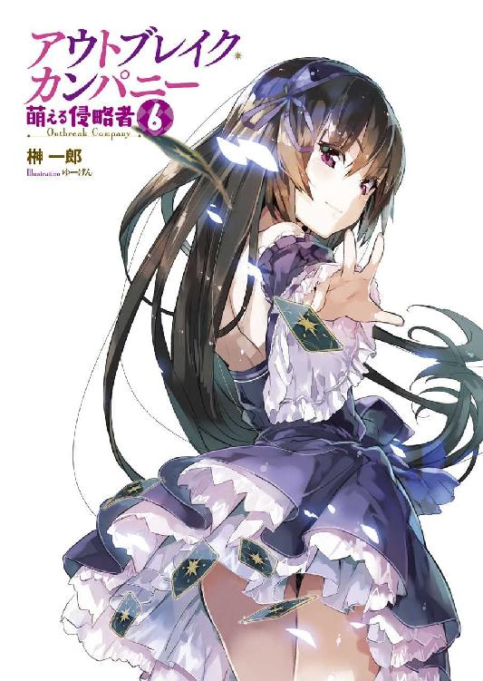
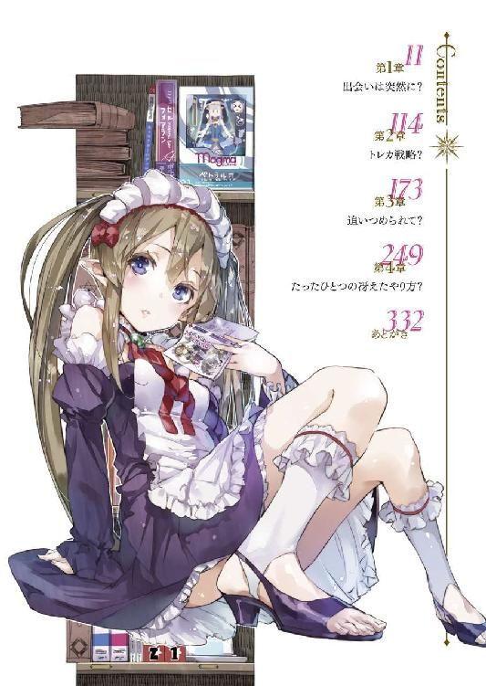
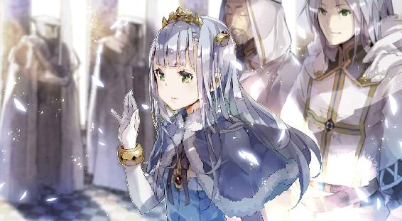
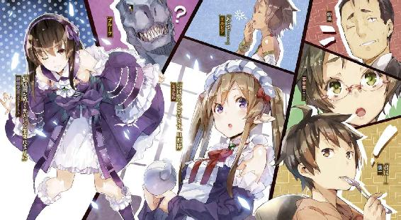
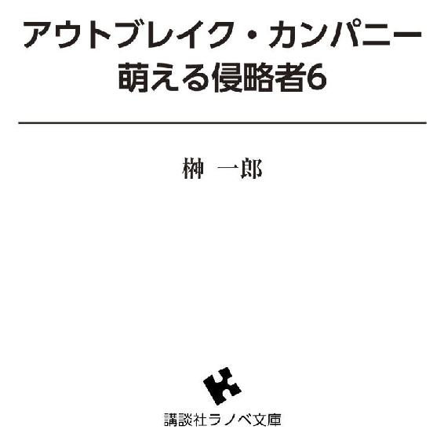
口絵・本文イラスト／ゆーげん
第一章 出会いは突然に？
今にして思えば──何か予感のようなものがあったのかもしれない。
「............」
それはやけに明るい満月の夜だった。
ベッドに横になったはいいけれど、瞼を閉じていても意識が溶けださない。
そのまま眠りに落ちることもできず、かといって起き上がって何かをしようという気にもならず......僕はただ漫然と、無為な時間を過ごしていた。
珍しいことだ。わりと寝付きは良い方なのだけれど。
「んー......」
僕は溜め息をついて目を開いた。
薄闇の中にぼんやりと......見慣れた部屋の様子が浮かぶ。
部屋の中に常夜灯の光はない。窓の外にも街灯の類はない。
だから、夜と言えばここでは本当に、すべてが闇に閉ざされる時間なのだ。曇り空や雨の日などの真夜中だと、伸ばした手の先すら見えないことがよくある。あちらこちらに街灯だのなんだのがある夜に慣れた僕は、当初、かなり驚いたものだ。
夜がこんなに暗いなんて。
けれどこれが本当の夜なのだ。
そしてだからこそ......月の出ている夜は、闇色のキャンバスの上に、その白い光がよく目立つ。大気汚染もないから、なおさらに空は澄み渡っていて、熱のない冷たい光がまっすぐに降り注ぐのだ。
おかげで、部屋の中よりも外の方が、ほんのりと明るく見える。
「......ん？」
ふと僕は眉をひそめた。
窓の方で──薄いカーテン越しに見える窓の外で、何かが動いた気がしたのだ。
フクロウやコウモリの類だろうか？
屋敷のすぐ傍には森があるし、ここでは夜行性の動物もわりと種類が多いと聞く。そういえば窓の外には、大きめの樹が一本生えているから、その枝の一つに、そうした鳥や獣が止まっている、というのはありそうな話だ。
だからそれは、特に気にする必要もない、ささいな出来事──のはずだったのだけれど。
「............」
僕は何故か気になった。
窓の方を凝視していると──やはり何かまた、影のようなものが動くのが見える。
気のせいじゃない。
そしてそれが、フクロウやコウモリの類でもないことに、僕は気付いた。
カーテン越しに見る影だけでは、正確な輪郭や大きさはもちろん分からない。ただその手の鳥や獣は自分から屋敷に近づいてこないだろうし......ましてやコツコツと窓を叩いたりもしないだろう。
「......なんだ？」
怪訝に思いつつ、僕はベッドの上に身を起こす。
コツコツ......と窓を叩く音はさらに響いた。
軽く二度。そして間をおいてまた二度。
夜風に吹かれて、何かが窓に当たっている──という感じじゃない。明らかに中の人間の注意を引こうとして、意識的に緩急をつけながら繰り返されている。
そう。これはノックだ。
「──こんな夜中に？」
僕は枕元のスマホを手に取って時間を確認する。
夜中の二時半。
自宅警備員だった頃の僕には宵の口だったけど、この屋敷に住むようになってからは、実に真っ当な寝起きをしているため──普段ならば、ぐっすり就眠中の時間である。たぶん、屋敷の他の人達も眠っている時間だ。まさしく草木も眠る丑三つ時というやつ。
となると──いったい誰が？
「............」
僕は自分の身体が緊張に強張るのを感じた。
脳裏に、昔テレビ番組で見た怪奇現象の映像が過ったからだ。
ひょっとして......幽霊？
もちろんこちらの世界では、現代日本の感覚でいうと『オカルト』だとか『ファンタジー』だとか『迷信』だとかの領域に含まれるようなもろもろが──魔法だの精霊だのが、常識の範疇に含まれている。だから幽霊の類がいても全然不思議はない。
ないのだけれど──
「............」
現代日本で育った十数年の歳月によって、僕の頭の中には『幽霊＝怖いモノ』という図式がはっきりと刻み込まれている。それはもう本能ともいうような部分にまで。だから理屈ではなんとでもごまかせるのだけれど──やはり感情として怖いものは怖いのだった。
音は──まだ続いている。
もちろん、何もかも気のせいだと自分に言い聞かせ、シーツを頭から被って寝たふりをする、というのも考えたけれど。周囲に満ちている静寂のおかげで、よけいにそれは耳についた。時計の針の音も、一度気になり出すと意識しちゃって眠れない......というのと同じだ。どうにも無視できない。
「............」
仕方ない。
僕はベッドから降りると、窓の方に歩み寄った。
どくんどくんと、心臓がうるさいくらいに高鳴っているのが判る。
変なモノがいたらどうしよう？ ──僕は頭の片隅でそんなことを考える。
幽霊の定番と言えば、濡れたような長い黒髪で、顔の半分を隠した女の人とかだけど──ああ、でも洋物だと、ゾンビっぽく露骨に顔が潰れてたり、腐ってたりするのも多いかな。アニメだと中途半端な幽霊よりも、むしろ鉈とか持って目の焦点が微妙に合ってないヤンデレの方が怖............いやそうじゃなくて！
「僕は馬鹿か......自分で怖さを煽ってどうすんだよ......」
僕の意思とは無関係に、次から次へと怖い情景が頭の中に、連想的に浮かび上がってきて、止まらない。けれど、さすがにここまで来ると確かめないでいる方が怖かった。
「............よし」
意を決して僕は窓の手前で立ち止まる。
カーテンの端と端を両手でそれぞれ摑み──そして目を瞑った。
「怖くない、怖くない、怖くない、怖くないぞ、怖くないんだ加納慎一！」
呪文のように僕は自分に言い聞かせた。
「怖くないったら怖くない！ 幽霊だろうと妖怪だろうとゾンビだろうと悪魔だろうと邪神だろうと、美少女なら怖くない！ 幽霊の萌えキャラとかも珍しくないしね！」
むしろヒロインとか張ってる場合も少なくないし！
努めてそれっぽいキャラを脳裏に幾つか思い浮かべながら、僕は──巫女服姿のドジっ娘幽霊とかイイよね！ ──勢いよくカーテンを左右に払い、窓を押し開いた。
「幽霊の──正体見たり前世魔人ッ！」
本当に怪奇現象の類だったらチビっちゃいそうだったので、自分を鼓舞する意味でも僕は叫びながら身構える。僕の腕の動きと、外から入り込んだ夜風に煽られて、カーテンは翻りながら脇に滑っていった。
そして窓の外の夜景が僕の前にさらけ出される。
「外道照身霊波............」
決め台詞（というかなんというか）を最後まで口にできず僕は絶句した。
月光を浴びてその姿を浮かびあがらせる、一人の女の子がいた。
空中に浮かんでいるかのようにも思えたけれど、すぐに違うと気付く。彼女は木の枝の上に腰掛けてこちらを見つめているのだ。
「こんばんは」
女の子は微笑を浮かべてそう挨拶してくる。
ほんの少しハスキーな、声。
まるで聴く者の耳を撫でさするかのような──
「あ......こんばんは」
ほとんど反射的にそう返す僕。
間抜けなことこのうえないけれど──このときの僕は、完全に度肝を抜かれていた。
なんというか......完璧だったからだ。
月光に照らされた彼女の姿は、恐いほどに極まっていて、まるで隙がない。むしろ何もかも計算ずくで設計された作り物のようにすら見える。良くも悪くも生身の人間が持つ当たり前の揺らぎが、まったく見えなかった。
長い睫毛に縁取られた、大きな黒い目がまっすぐに僕を見つめている。
前髪の隙間から覗く形のいい眉、するりとまっすぐに通った鼻筋、柔らかそうで小さな唇......そのどれもが絶妙の均衡を描いて並んでいるのだ。
「良い夜ですね」
女の子はそんなふうに言う。
その台詞に同意するかのように──風が吹き、木の葉がザワザワと合唱した。
風は彼女の長い闇色の髪と、ドレスの裾を揺らしていく。
彼女が着ているのは、普段の生活においてはあり得ないほどにレースのフリルで飾り付けられたゴシック調のドレスだ。きつく締めた腰とは反対に、大胆に露出した肩周り──およそ着る者の快適さなどは求めておらず、ただひたすらに見て愛でられんがための意匠が、彼女にはよく似合っていた。
全体的に暗色の比率が多く、暗め重めの衣装だ。
けれども、だからこそ要所要所に施されたレースのフリルと、剝き出しの肩や、膝の白さが鮮やかで──その対比は、奇妙な存在感を醸し出す。
（......って、幽霊じゃなくて吸血鬼の方かよ！）
むしろこの過剰とも言える自己主張は幽霊のそれじゃない。存在そのものが希薄で周囲の闇に溶け込むのが幽霊だけど、この少女はむしろ闇を──月光すらをも、まるで舞台背景の如く、自分を魅せるためのものとして従えている。
そんな僕の考えを見透かしているかのように、艶然と微笑んで少女は続けた。
「夜風が月光に輝いて──とても綺麗」
「──あ」
そこでようやく僕は気付いた。彼女のドレスには見覚えがあることに。
改めてもう一度その顔を──いやそのすぐ上を見ると、確かにそこには僕の記憶通り、髪に紛れるようにして、濃紫のリボンが着けられていた。
これは......
「──水煉」
『薔薇姫』というアニメの、水煉という登場人物の格好である。
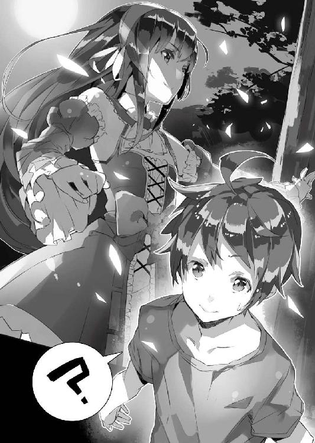
人形同士が戦うバトルもので、水煉はそのアニメに出てくる敵──主人公と敵対関係にある人形なのだけれど。ゴシック・ロリータ系の意匠としては、むしろヒロインよりもバランスがとれているせいで、やたら人気が高かったのを覚えている。
もちろん、『薔薇姫』の中の水煉は、いわゆるアンティーク・ドールなので、本来の身の丈は人間の半分以下──僕の目の前にいる少女とは大きさが違う。ただその点を除けば、彼女はまるでアニメの中から抜け出してきました、と言われても違和感を覚えないほどに、水煉そのものだった。
「貴方が──」
ぽかんと口を開けて自分を凝視している間抜けを──僕のことだ──見て、彼女はわずかに唇の両端を吊り上げると、くすりと笑ってみせた。
妖艶......だ。
僕は背筋に何か怖気のようなものが這い上がるのを感じていた。だけど不快じゃない。むしろ逆だ。感動に似て、しかし微妙に異なるもの。これが魅了──というやつか。
「加納慎一さんですね」
「あ。はい」
と反射的に頷いてから。
「なんで僕の名前......？」
僕は疑問を口にしていた。
同時に──もう一つの疑問が脳裏を過る。
日本語だ。彼女は日本語を喋っていた。この圧倒的に日本語以外を喋る者の方が多いはずの場所で。つまり彼女は──
「私は──闇を導く光」
彼女は自分の胸の上に両の掌を置くと、長い睫毛を伏せた。
「そう──私は選ばれし光。新たな世界の導き手として」
「......あの」
思わず日本語でＯＫ──と脳裏に突っ込みが浮かんだけれど、さすがにそれを口にする余裕は、そのときの僕にはなかった。なんだかんだ言って僕は彼女の放つ雰囲気に吞まれまくっていたからだ。
しかも──
「......加納慎一さん」
少女が僕の方にその白い右手を差し伸べてきた。
さあ摑め......と言わんばかりに。
「──選択を。この手をとれば貴方は私の存在を認めたことになります。それは運命の楔、契約の証」
「け......契約？」
「とらねば貴方は闇としてただ淀むままにその存在理由を全うします。導くのは私。けれど選ぶのは貴方。さあ──覚悟を決めて。ラグナレクへと続く道は開かれた以上、ただ座しているだけでは許されないのです」
「............」
僕は──目の前に差し出された白くて細い指と、彼女の綺麗な顔とを交互に見た。
この展開はもしや......もしやアニメとか漫画とかラノベとかでよくあるアレか!?
彼女と主従契約を結んでバトルに身を投じ、敵を一緒に倒していくとかそーゆー系か!? 彼女の姿が剣になって僕がそれを振るったり、僕が歌うと彼女がパワーアップして無双するとか、聖遺物を奪いあったりとか、借金背負わされて命懸けの賭事に参加して焼き土下座するとか、そんなアレか！ ......いや最後のは違うだろうけど。たぶん。
「............」
僕は──窓を開ける前にも増して、自分の心臓が高鳴っているのを感じた。
何しろ『運命』で『選ばれし』『光』で『闇』で『契約』で『存在理由』で、とどめに『ラグナレク』......！ なんだ、このコテコテ感ッ!! 『運命』と書いて『さだめ』と読み、『神々の黄昏』と書いて『ラグナレク』と読むッ！ 基礎教養ッ！
嗚呼──魅惑的な非現実が目の前にある。
まるでモニターの中から美少女が飛び出してきたかのような......！
そうさ！ 今こそこの退屈な日常と決別する時！
............
退屈してるのか？ とか、そもそもお前はすでに一度、これ以上ないってくらいにその日常と決別しちゃってるだろ？ という至極冷静な突っ込みはこの際脇においといて。
「ぼ......僕は」
躊躇い、震えながらも、僕は彼女の方に手を伸ばす。
しかし──
「............」
互いの指先が触れ合おうとしたその瞬間。
彼女は──すっとその手を引いていた。
「──え」
目を瞬かせる僕に──彼女は引いた手を握り、小さく首を振った。
「今はまだ、その時ではないようです」
こっちをその気にさせといて、いまさらそれはないだろお嬢さん。
彼女は長い睫毛を伏せて悲しげにそう言う。
「ですが約束の時は迫っています。貴方とは、またすぐに会うことになるでしょう。それが運命である以上は──」
「君はいったい......」
問うても詮ないこと──と分かってはいた。
けれど、僕としては尋ねずにはおれなかった......というか、わけが分からない状況はさきほどからまったく変わっていないわけで。彼女が一人で納得して一人で完結しちゃってるだけだ。
「では......また」
「待っ──」
引き留めようと伸ばした手が空を切る。
次の瞬間、彼女の姿は消えていた。
いや──
「......!?」
微かな音に目を向けると、そこに彼女がいた。
窓のすぐ下......樹の根元。
飛び降りたのか!? 二階の窓と同じ高さから!?
僕は仰天しかけて──何か細いものが夜風に揺れているのが見えて、仕掛けに気付いた。彼女が座っていた枝の根元、そこにワイヤーみたいなものが結び付けられている。多分これを使って、彼女は安全に──怪我をしない程度に落下速度を殺して降り立ったのだ。
「............」
それから、すっと彼女は身を翻すと......屋敷に背を向けて走り去っていく。
その後ろ姿は、すぐに木々の間に凝る闇の中に、溶けて消えた。
「............なんだったんだ、今の？」
まだ高鳴り続けている心臓を意識しながら僕は呟く。
これは夢？ 幻影？ それとも現実？
いい加減、非常識な出来事には慣れているはずの僕だけど......それでも彼女との出会いは衝撃的だった。まるで本当にアニメの中から出てきた水煉と出会ったかのような、どこか非現実的な空気が、まだ僕の周りには漂っている。
だから、考えずにはいられない。
もし彼女の手をとっていたとしたら──どんな未来が僕を待っていたのだろう。
「......あ」
そういえば、結局、名前も聞いていないことに僕は気付いた。
まさか本当に水煉ってわけでもないのだろうし。
「何なんだ......」
夜風が、僕の頰を撫でて通り過ぎていく。
その風は、僕の頰に残る興奮の火照りを冷やし......まるで今し方まで確かにそこにいたはずの、彼女の痕跡を、すべて洗い流そうとしているかのように感じられた。
そう。すべては夢だ。忘れろ。
そう──言葉もなく諭すかのように。

僕の名前は加納慎一。
どこにでもいる普通の高校生だった。
ただ少し人と違うのは、自宅警備員だったことくらいだろうか。
............
あー。そこの人。引かないで。笑うのもなし。
僕のハートは硝子のように繊細ですから。泣いちゃいますよ。
まあ、それはさておき。
いろいろあって、高校生の身で登校拒否のうえ、部屋に引きこもってニートなライフをエンジョイしていた僕なのだけれど。幸か不幸かうちの両親はそんな息子をいつまでも放置しておくほど、優しくもなければぬるくもない人達だった。
具体的には、ある日、チェーンソウで扉を切断して部屋に入ってきた父と母に脅され、僕は仕方なく就職活動をすることになったのだ。
けれどもちろん、世の中の景気はまだ良いとはいえず。
自宅警備員の経歴を持つオタクがそう簡単に就職できるはずもない。まして僕は特に何か資格があるわけでもなし。そういうわけで、せめて得意分野でなんとかできないか──と考えた末に、僕はとりあえずオタクの聖地・秋葉原でとある会社の面接を受けた。
とまあここまでは良かったのだけれど。
ここで常識的な日常は終わった。
あろうことか......僕は、一社目の面接会場で出された睡眠薬入りの烏龍茶を、なんの疑いもなく飲んでしまい──拉致され、そして気がついたときにはもう、異世界に連れてこられていた。
そう。異世界だ。
異なる世界。違う世界。
それもドラゴンが空を飛び、エルフやドワーフといった人間と似て異なる種族が街を闊歩し、戦場では剣と共に魔法が炸裂する、ファンタジーそのまんまの領域。
そこで僕は異世界初の『総合エンターテイメント商社〈アミュテック〉』の支配人に据えられたことを告げられる。この〈アミュテック〉なる会社は、異世界にオタク文化を広めることを目的とした組織で、僕はその総支配人に選ばれたのだ──と。
そんな馬鹿な。
僕は最初そう思った。当然だよね。
こんなことをしてなんの意味があるのか──と。
けれども事態は僕の想像を上回ってシリアスだった。
そも──異世界とは何か。
前述の通りそれは異なる世界なのだ。
僕らの住んでいる地球とは、文化も、環境も、何もかもが違っている。
そんな世界の、神聖エルダント帝国という国に、青木ヶ原樹海で見つかった「穴」──学者の間では超空間通路と呼ばれている──を介して、日本は繫がっているのだそうだ。
つまり異世界と日本は地続きなのである。
この事実を知った日本政府は、「穴」とその向こうに広がる異世界の存在をすべてひっくるめて国家機密とし、独自にこの「穴」と異世界を調査し始めた。
機密にしたのは、他国にこの「穴」と異世界のことを知られたくなかったからだ。
繰り返すが、何しろ異世界である。
異なる生物、異なる文化、異なる資源が、そこにある。
それはつまり、宝の山だ。
上手く立ち回ることができれば、日本は世界最高の富裕国に成り上がることも夢じゃないだろう。逆に他国に知られてしまえば、なんだかんだと理由をつけて異世界の『富』は奪い去られてしまうに違いない。
そして......
調査を経て、日本政府は神聖エルダント帝国と接触し、一定の交流を持つことに成功した。しばしばＳＦなんかで語られる異種文明との最初の接触も危惧されたけれど......これはほとんど取り越し苦労だった。最も懸念されていた意思疎通の問題──つまり言葉の壁が、こちら側の技術である魔法によってあっさりと取り払われてしまったからだ。
結局のところ......同じ人間同士、話せば分かる、ということらしい。
でも、それだけで両国の関係が親密になるわけじゃない。
日本は神聖エルダント帝国と良好な関係を持つために、交流の手段を探っていった。価値観や常識の基礎を成す、文化の相互理解には、主に力を入れていたわけだけど......そもそも文化水準が違うせいか、あるいは何か別の理由からか、エルダントの人々は、日本側が当初提示したさまざまな伝統的文化にはほとんど興味を示さなかった。
もちろん、工業技術の水準が低い異世界においては、家電などに代表されるさまざまな工業製品を持ち込んでやれば、驚いてもらうことはできるのだろう。
けれど「穴」は狭く、持ち込める量には限界があることに加え──あまりに大量の物資を移動させると、諸外国に気付かれてしまう恐れもある。
困り果てた日本政府は、地味に試行錯誤を繰り返した。
そしてその結果──エルダント側の人々が最も顕著に反応したのは、驚くべきことに、各種・現代エンターテイメント作品──その中でも特に漫画やアニメ、ゲームといったオタク商品だったのだ。
しかし......日本政府側はここではたと困った。
政府側の官僚にオタク商品に──オタク文化に詳しい人間がいなかった。
正確に言えば、彼らはその『なんたるか』を理解していなかった。予想外の外貨を稼いでくるそれらをクールジャパンと持て囃す一方で、各種規制法案の成立を唱える彼らは、オタク文化を正確に理解するための『目』がないのだった。
ならば目利きを連れてきて責任者に据えれば良い──政府の者達はそう考えた。
だけど異世界交流は最重要秘密案件だ。著名なクリエイターだの研究者だのを引っ張ってくるわけにはいかない。望ましいのは、ある日突然、日本からいなくなっても、そう大きな騒ぎにならないような人間で──万が一、計画が失敗すれば、すべての責任をひっ被せることができるような、後ろ盾のない人間だ。
で──何も知らず、彼らの垂らした釣り針に見事引っかかった馬鹿なオタクが、この僕、加納慎一というわけ。
正直、当初の僕は、浮かれていたと思う。
何しろオタクである自分の『能力』が認められたうえ、自分の大好きなアニメやゲームや漫画が異世界交流の架け橋になるんだと言われたら、そりゃオタクたるもの、全力でこれを支援しようと思うだろう。
僕は──頑張った。少なくとも頑張ったつもりだった。早々に神聖エルダント帝国の皇帝陛下に気に入ってもらえたこともあって、すべては順調にいくかに思えた。
けれど......ある日、僕は気付かされることになった。
そもそも日本政府の目的が、文化交流などではなく、文化侵略であったということを。
日本政府は神聖エルダント帝国と対等に付き合うつもりなどなかった。本当は日本の一部に組み込んで属国として支配し、搾取したいだけだったのだ。
ただ、侵略と言えば真っ先に思いつくのは、武力侵略であるわけだけど──これはあまり現実的じゃない。
自衛隊の大部隊を動かせば諸外国も気付くだろうし、そもそも「穴」は狭いため、あまりに大きなものを運び込むことができない。大戦力を一気に送り込んで制圧、なんて夢のまた夢だ。また神聖エルダント帝国には魔法技術があり、これと現代兵器が正面から戦って勝てるかどうかは、分からない──という不安要素もあった。
だから日本政府は、文化面で神聖エルダント帝国を侵略することにした。
僕達の世界でも、かつての大英帝国がしたように、文化面からまず相手国の国民を教化し、日本国の支配を神聖エルダント帝国の国民が受け入れやすいような土壌を作り上げることが目的だったのだ。
その事実に最初に気付いたのは、僕ではなく、エルダントの民だった。
憂国士団〈ベイドゥナ〉を名乗る連中が、『文化の侵略者』たる僕達を襲ってきたのだ。ただひたすら『オタク文化を使って異世界と仲良くする』ために働いているつもりだった僕は、『侵略者』と呼ばれて衝撃を受けた。
それから僕は、日本政府に反抗したりして──その結果、僕の『排除』のために自衛隊の特殊部隊が送り込まれてくる、なんて騒ぎにもなった。
それを乗り越えてからもいろいろあった。
異世界初のサッカー試合を開催したり。
その際の映像がネットに流れて──それをごまかすために映画を撮ったり。
挙げ句にエルダントの隣国、バハイラム王国に誘拐されたり。
こっちの世界に来てから、僕の生活は波乱万丈だ。
けれど......それを愉しいと思う僕がいる。
自宅警備員時代には思いもしなかった充実感があった。さまざまな人と知り合って、いろいろなことを企画しながらあちこちかけずり回っていると、気鬱になっている暇もない。僕はこの総合エンターテイメント商社〈アミュテック〉の総支配人、オタクの伝道師が、天職ではないかとさえ思い始めて──思い上がり始めていた。
だから、僕はきっと──必要以上に楽天的になっていたのだろう。
別の言い方をすれば、日本政府というものを、舐めてかかっていたのだ。
特殊部隊を送り込んで暗殺、といういわば最後の手段まで使って失敗したのだから、異世界交流について、よけいな干渉をするのを諦めたのではないか──と。
だけどもちろんそんなことはなくて。
彼らは諦めてなどいなかった。
神聖エルダント帝国を文化侵略することを──
清々しい朝の空気を胸一杯に吸い込んだ。
少し冷えた空気が体中を循環し、僕の脳からゆっくりと眠気を追い払っていく。
「んん～......」
寝間着から普段着に着替えた僕は、部屋を出ると一階の食堂に向かった。
たぶんもう皆は先に集まっていることだろう。
昨日は遅くまで寝付けなかったためか──妙な夢まで見ちゃった──いつものようにミュセルに起こされてからも、ぼんやりしたままで、着替えるのに妙にてまどってしまった。
階段を降りていると『急げ』と言うかのように腹の虫が鳴く。
日本で引きこもっていた頃は、生活リズムなんて崩れきっていて、朝食なんか食べない日がほとんどだったのだけど──神聖エルダント帝国に来てからは、生活習慣も一変、朝食を食べないと一日が始まった気がしない。
我ながら真人間になったものだ──などと考えつつ、僕は食堂に足を踏み入れた。
「おはよー......」
「おはようございます、旦那様」
鈴を振るような可愛らしい声が返ってくる。
まず最初に僕の方を振り返って挨拶してくれたのは配膳中のメイドさんだ。
ミュセル・フォアラン。
彼女は僕がこちらの世界に来て初めて出会った人であり──食事に掃除に洗濯にと、この屋敷における僕の生活を、サポートしてくれている人でもある。真面目で清楚で可憐で──けれどもちょっと気弱でちょっとドジで。とびっきり可愛いくせに、親しみの湧く、癒やし系のハーフエルフのメイドさん。何このフル装備、ヤる気か!? こっちを萌え死にさせる気か!? と僕なんかは思うんだけど──本人にはまるで自覚がないっぽい。
そういうところがまた萌えるんだけどもね。
今も、ツインテール状に結った長い亜麻色の髪が、彼女が動くたびに、動物の尻尾のように揺れて──ちらりと白い尖り耳が見えたりして、これがまた可愛らしいのなんのって。
嗚呼。オタクに生まれて良かった。
さらに──
「おはよう、慎一君」
続いて挨拶してきてくれたのは、椅子に腰掛けながらスマートフォンを弄っていた女性だった。たぶん、今日の予定を確認しているんだろう。
彼女は古賀沼美埜里さん。
美埜里さんは女性自衛官で──僕の護衛役だ。
髪をお団子状態にして制服を着ているその姿は、実に堅い感じなのだけれど──眼鏡の奥に見える目は柔和、さらに顔立ちそのものが童顔なせいもあってか、威圧感のようなものはまったく感じられない。むしろ優しく朗らかなお姉さん、という印象だ。
「もうできますので」
花が綻ぶような笑顔を浮かべ、ミュセルは、僕に、椅子に座るよう促してくる。
そんな彼女に頷くと、僕は美埜里さんの隣の席に腰掛けた。
「あれ、これだけ？」
僕が最後かと思ったけれど、食堂にいるのはまだ屋敷の住人の半分だ。
「もう来ると思うけど」
首を傾げる僕に、スマートフォンをポケットに片付けながら美埜里さんが答える。
まさにその瞬間──
「ふわあぁ......おはようございまふー......」
美埜里さんの言葉を待っていたかのように、二人の人物が食堂へとやって来た。
一人は、今の、欠伸混じりに緩みきった挨拶をした、若い女の子だ。
胸には布を巻いただけ、下はだぶだぶのズボン、でもって鎖骨やらヘソやらは丸出しという肌色過剰な格好だが、不思議と淫靡な感じはしない。むしろ贅肉のない引き締まった身体がよく分かって、実に爽やかというか、健康的に見える。
エルビア・ハーナイマン。
一見すると同じ色で分かりにくいけれど、その枯れ葉色の髪の間には、大きな垂れ耳が、そしてお尻にも同じく枯れ葉色の毛に覆われた尻尾が生えている。この尻尾がまた全体的に柔らかそうで、僕はこれを見るたびについもふもふしたい衝動に駆られるのだけれど。
エルビアは半獣人系の人種──ウェアウルフだ。
いろいろあってこの屋敷で一緒に暮らしているけれど、もともとは隣国バハイラム王国の放った密偵という微妙な立ち位置の娘である。まあ密偵といってもあまり真面目に仕事する様子はないのだけれど。
でもってその隣が──
「おはようごぜえます」
ブルーク・ダーウェン。
半獣人系種族という括りではエルビアのお仲間だけど──姿形の印象はかなり違う。
ブルークは見た目、完全に二足歩行の蜥蜴、つまりはリザードマンと呼ばれる種族で、顔立ちはおろか、変温性で卵生と、生態まで爬虫類に近い。
彼はこの屋敷の庭師をしていて、僕からすれば二人目に出会った異世界人だ。
見るからに硬そうというか、迂闊に殴ったらこっちの手が傷つくような『強面』で──表情は読めないし、朝は体温が上がりきらないせいか、口調も少し気怠げだが、彼が実はその身に並ならぬ『熱さ』を秘めた『漢』なのだということを、僕は知っている。
「お待たせいたしました」
また料理を取りに行ったのだろう──厨房の方に引っ込むミュセルと入れ替わるようにして出てきたのが、五人目の同居人、シェリス・ダーウェン。
彼女はブルークの奥さんで、リザードマン、いや女性だからリザードウーマンか？
一時は別居中だったみたいだけど、とある一件でよりが戻って、現在はブルークと共に住み込みで働いてくれている。メイド服はミスマッチで妙な印象を受けるし、見た目は蜥蜴でブルークと同じく表情は読みづらいけれど、優しい人なのをみんな知っている。ついでにミュセル同様、少しそそっかしいということも。けれどもまあ、おおむね問題はない。細かいことで目くじらを立てるような人間は、この屋敷にはいないからだ。
「準備できましたよ」
そう言って彼女が配膳しているのは、ブルークと自分の分の食事。
生態が異なる関係で、どうしても味覚が異なる──つまり好んで食べるものも違ってくるため、リザードマンの二人だけは、別の食事なのだ。これに加えて身分差の事もあり、神聖エルダント帝国においては、リザードマンとそれ以外の人種が、一緒に食事をすることはまずないのだそうだけど......もちろん、日本生まれの日本育ちという僕には、そんな常識、関係がない。
そういうわけで──
「ん。皆揃ったね」
エルビアとブルークが椅子に座り、食事の準備を終えたミュセルとシェリスも腰を下ろす。一応、上座下座の区別はあるけれど、皆が同じ食卓についていた。
今こうやって向かい合っているこの面子が、この屋敷に住んでいる全員だ。
「それでは──いただきます」
一度全員と顔を見合わせてから、僕は両の掌を合わせた。
もちろんこれは完全に日本の風習であり、食事作法なのだけど──いつの間にか、皆も食事前には同じ動作をするようになっていた。一応、この屋敷では僕が一番の偉いさんということになっているらしいので、合わせてくれているのだろう。
「いただきます」
僕に続くように、皆が口々に「いただきます」と唱えて、スプーンやフォークに手を伸ばす。別に僕を待つ必要はないのだけれど、僕が食べないと他の皆が食事に手をつけないのである。全員揃って『いただきます』と合唱するのは小学校のときの給食みたいでちょっと気恥ずかしいけれど、これがまた......いかにも食事してますって感じで、なんだか愉しい。
「......んー！」
僕は朝食を味わいながら声を上げる。
ミュセルのご飯は、毎度毎度本当に美味しい。たまには失敗してもいいのにと思うぐらいで──しかも飽きることがない。ミュセルに尋ねると、朝、起こしに行った際に皆の様子を見て体調を推し量り、多少、味付けを変えているんだとか。
何そのスーパー料理人っぷり!?
女はまず男の胃袋を摑め、なんていう恋愛必勝法を聞いたことがあるけれど、あれはかなり的を射ていると思う。料理は愛情──ってのはつまり、逆から言えば、愛情をもって行われる細やかな気遣いは、味に如実に表れる、ということだ。ミュセルは美人ではあるけれど、そうでなかったとしても、彼女なら嫁にほしいって人はたくさんいるだろう。
そんなことを僕が考えていると──
「あふぅ......」
聞いているだけで眠くなってきそうな声がする。
何度も大きな欠伸を繰り返しているのは、僕の向かいに座ったエルビアだ。
「エルビア、眠そうだね」
「いやぁ、描いてたら手が止まらなくなって、明け方までつい............」
目を擦るエルビアを見て、僕は苦笑する。
エルビアは僕の働いている〈アミュテック〉社のお抱え絵師だ。少なくとも建て前上の肩書はそうなっている。建て前といっても絵を描くことそのものは本当に好きらしく、今はものすごい勢いで『異国ニッポンの絵画』──というか、いわゆるアニメ調だったり漫画調だったりする萌え絵を独学中だ。
彼女は本当に絵が上手いけれど──ただ、一度描き始めるとのめり込んで止まらなくなるという難点を抱えている。このため、いざ絵を描き始めると睡眠や食事を忘れてしまうことがよくあるのだ。
「描くのはいいけど、きちんと睡眠はとってね」
「ふぁーい」
欠伸を嚙み殺し、もそもそと食事をしながら、エルビアは頷く。
本当に分かっているのか──と心配になる生返事っぷりだけど、彼女の場合、ちゃんと朝食を食べにきている分だけ、マシというものだった。
苦笑してミュセルや美埜里さんと顔を見合わせてから、僕はバスケットの中のパンに手を伸ばした──そのとき。
「──おはよう」
やや掠れ気味の低い声が耳に届く。
「──！」
僕は驚いて顔を上げると、食堂の入り口の方を振り返った。
聞き覚えのある声だけど、朝食時に耳にしたのは初めてだったからだ。
「的場さん？」
美埜里さんが若干慌てた様子で立ち上がる。
「──や」
食堂の入り口には、スーツを着た中年男性が佇んでいた。
着こなしはきっちりとしているのだけど、どことなくくたびれた雰囲気があるのは、彼がいわゆる中間管理職だからか。もともと細い目をさらに細め、緩い笑みを浮かべているのもいつも通り。一見すると無害なおじさんに見えるが──正直それは見た目だけだ。
彼の名は的場甚三郎。
日本政府の役人......いわゆる官僚である。
肩書は極東文化交流推進局の局長で、異世界交流の現場責任者。簡単に言うと、僕と美埜里さんの上司に当たる人だ。
僕の護衛役で基本、肉体労働の美埜里さんに対し、的場さんは主に事務方──こちら側に持ち込む物資の手配やら何やらでは、いろいろとお世話になっている。〈アミュテック〉にしてみれば『身内』の一人だ。
ただ僕としては最後の一線で......いまひとつこの人を信用できない。
的場さんは日本政府の高官と僕との間を取り持ってくれているわけで、どちらかといえば僕を庇うような発言をしてくれることも少なくないのだけれど......それでもこのおじさんは、笑顔の裏で何を考えているのか、判らないことが多いのだ。邪悪とか残忍とかいう人ではないのだろうけど、必要とあればその穏やかな微笑を浮かべたまま、冷酷に誰かを見捨てる──くらいはやってのけるだろうし、実際、僕に関しては一度そうなった。
ともあれ。
的場さんはわりと頻繁に日本と神聖エルダント帝国を行き来していて、何日も姿を見ないことも多い。当然、屋敷に住んでいるわけでもない。そんな彼がこんな朝早くから姿を現すのは珍しいことだった。
「どうしたんですか、こんな──」
と──言いかけて。
「............！」
僕は目を丸くしてその場に固まった。
的場さんの陰から、ゆらりと──体重を感じさせない動きで脇に踏み出し、姿を現した人物がいたからだ。
初見の相手ではない。
見覚えがある......というか、昨日の今日では忘れようがないだろう。
「君は──」
濃い紫を基調とし、レースのフリルを多用したドレス。
ドレスと同色のブーツにリボン。
それは『薔薇姫』に出てくる水煉の衣装そのもので──昨晩、いや時刻的には今朝か？ それはともかく──、木の上に現れたときとまったく同じ格好だった。というかあれ、夢じゃなかったんだ!?
「──ん？」
僕の反応を見て、的場さんは怪訝そうな表情を浮かべる。
「どうしたんだね、慎一君？ ひょっとして──面識が？」
「ええ、少し」
と答えたのは、僕ではなく──少女の方だ。
少女は、微かに唇の両端を吊り上げて僕を見つめてきた。
改めて明るい場所で見る少女は、実に綺麗だった。袖丈は長く、全体的に飾りの多い衣装なのだけど、肩の部分が露出しているので、身体つきも大まかにだが判る。首や手首は細く、肩幅も狭く、全体的に華奢だけど──それがまた、硝子細工のような繊細さを感じさせるのだ。迂闊に抱き締めれば壊れてしまいそうな......そんな雰囲気。
「こちらは綾崎光流君」
的場さんが言った。
「今日から慎一君、君の補佐として〈アミュテック〉社で働くことになった」
「──は？」
寝耳に水な話で、僕は間の抜けた声を漏らす。
対して少女──光流さんはすべて承知のようで、僕ににっこりと微笑みかけてきた。
「私は闇を導く光として生まれました。そう、貴方」
光流さんが僕に向かって歩いてくる。
呆然と座ったままの僕のすぐ傍にやってくると、腰を折ってこちらの顔を覗き込んでくる。その仕草には余裕と──それを裏打ちする強い何かが感じられた。
「言ったでしょう？ 私は闇を導く光。運命ならば必ずまた会うことになる、と」
「............はぁ」
いかん。中二病には中二病で──咄嗟にふさわしい台詞を返そうにも、僕は読み専門、見る専門で、それっぽい言葉をでっち上げるのがどうにも下手だ。
返事に窮する僕の代わりに──
「──聞いていません」
美埜里さんが、やや硬い声で的場さんに言うのが聞こえた。
確かに僕も新しい人が来るなんて、聞いていなかった。〈アミュテック〉の総支配人という肩書であるのに、だ。もちろん、雇われ総支配人にそんなことを相談する必要なんてないんだと言われれば、その通りなんだろうけど......
でも美埜里さんの場合は、また事情が違うだろう。
彼女は僕の護衛役なわけだけど......正しくは『日本側の〈アミュテック〉関係者』を護衛するのが仕事だから、当然、その関係者が増えれば手が回らなくなる可能性が高い。
しかも、つい先日、僕はバハイラムに攫われたばかりだ。
美埜里さんとしては警備に関して神経を尖らせているはずだから──そこへ持ってきてなんの準備も告知もないままに護衛対象者が増えれば、対応に窮するだろう。
「............」
ミュセル、エルビア、ブルーク、シェリス──皆も突然の事態に驚いているらしく、食事をする手が止まっている。まあ当然だろう。僕達が知らないのだから他の皆が知っているはずもない。
「すまないね」
的場さんは肩を竦めた。
「最近いろいろと忙しくてね。話をする機会を逃してしまった」
「............」
美埜里さんの表情がやや険しさを増す。
僕には、その理由がよく分からないけど──美埜里さんは何か僕の知らないことを知っていて、それに絡んでこの〈アミュテック〉増員に思うところがあるのかもしれない。
「それにしても突然すぎですよ」
僕は美埜里さんと的場さんの間に割って入るようにして言った。
「それにどうして今頃......」
確かに学校は人手不足ではあるし、そろそろオタク文化の普及活動や、商品としての販売方法の確立など、考えなければならないことは多いのだけど。
だからといってこんなに急に──
「運命の歯車は、いつも突然に回り始めるものです」
僕の質問に対して答えたのは光流さんだった。
「けれど必然たり得ない偶然はありません。理由などなくともそれは常に今なのですよ」
「............」
いやだから分かんないって。
「まあそういうわけなんだよ」
「だから何がいったいどういうわけなんですか!?」
思わず突っ込む僕だけれど──的場さんも光流さんも曖昧に微笑したままだ。
「突然という形になってしまって、本当に申し訳ないとは思っているよ。でももう決まってしまってね」
と的場さん。
出た──お役人名物『もう決まったことだから』ッ！
それならそれで、決める前に一言連絡がほしいと思うのが人情だけど、そういう場合はたいてい『その判断は君の仕事ではないから』という一言で片付けられてしまう。
なんだかなあ......
「すまないが、私はまた、すぐに日本の方に戻らなくちゃいけないんだ。何かと処理すべき案件が溜まっていてね。だから光流君のことをよろしく頼むよ」
すらすらと有無を言わさない滑らかさで──というよりあらかじめ決めてあった通りの台詞を暗誦するかのように的場さんはそう言いきると、食堂から出ていってしまった。
後に残ったのは当然──
「では──よろしくお願いしますね」
そう言って微笑む光流さんのみ。
彼女はゴスロリ調ドレスのスカートを指先でつまんで裾を持ち上げ、芝居がかった仕草で皆に会釈する。いったい君はどこの、そしていつの生まれなのかと問いたくなるような作法だけれど......これがまた、光流さんには驚くほどによく似合っていた。
神聖エルダント帝城。
正式名称に国の名をそのまま冠されたその城は──皇帝陛下の居城であり、神聖エルダント帝国の政治中枢だ。もしこの城が陥落するときがあるとすれば、それは、この国が滅びるときに他ならない。岩山を一つ魔法でくりぬいて作られたというこの城は、一つの都市にも匹敵するほどの巨大さと、軍事施設としての堅牢性を持ち、文字通りに難攻不落を誇り続けているそうだ。
実際......その偉容は、見る者を例外なく圧倒する。
初めてエルダント城を訪れたときなんて、僕は、もうどうしたらいいのか分からずに、こっそりパニックになりかけたくらいだ。自分でもテンパってた自覚がなかったので、ついつい初対面の皇帝陛下によけいなことを言って、容赦ないぐーぱんち喰らうことになったりもしたけど......まあ、それはさておき。
「──すごい」
僕や美埜里さんと一緒に登城した光流さんは──そう感想を漏らしはしたものの、僕の初登城のときと異なり、落ち着き払っていた。いや。その衣装や中二病的な立ち居振る舞いと相まって、むしろ僕の目から見れば、馴染みまくっているようにすら見えた。ここではシャツにジーンズという僕や、女性自衛官の常装──濃緑のジャケットにタイトスカートという美埜里さんの方が、遥かに異物っぽく見えるだろう。
そして......
「──其方が、アヤサキヒカルか」
謁見の間。
その奥の玉座に座って僕達を見下ろすのは、長い銀髪に包まれたその頭に、豪奢な宝冠を載せた幼女──もとい少女だった。想うだけなら問題ないはずだけど、彼女は妙に勘が鋭いところがあるので、胸の内の失言もこっそり言い直しておこう。
ペトラルカ・アン・エルダント三世。
ランドセルが似合っちゃいそうな容姿の彼女だけれど、何を隠そう実は僕の一つ下の十六歳で──しかも、この神聖エルダント帝国における最高権力者、つまりは正真正銘の皇帝陛下なのだ。
王侯貴族は見目麗しい女性を娶ることが多いから、結果的に、その親族に美男美女が増えてくるのも当然だけど......そういう意味でペトラルカは典型例だった。
浮き世離れした美貌という意味では、光流さんもかなりのものだけど......やはり、ペトラルカのそれは格が違う。僕は彼女と比較的、仲良くさせてもらっているけれど、それでも時折、同じ空間に本当にいて良いのかと、無意味に申し訳なく感じちゃうことがあるくらいだ。少年向けギャグ漫画の登場人物が、絵のタッチが全然違う、少女向け恋愛漫画の中に放り込まれれば感じてしまうであろう違和感──とでも言えば、少しは僕の気持ちも分かってもらえるだろうか。
「はい。皇帝陛下への御拝謁の栄誉を賜り、恐悦至極にございます」
そう言って僕の隣で光流さんは恭しく頭を下げる。
的場さんが立ち去ったその──後。
僕達は、光流さんを連れてエルダント城に向かうことになった。
もともとその日は朝食の後、登城してペトラルカに、〈アミュテック〉社の活動についての報告を口頭でする予定だったのだ。
だからついでに光流さんを連れていき、紹介しておこうということになった。〈アミュテック〉社がこの神聖エルダント帝国で自由に活動できているのは、皇帝陛下たるペトラルカの認可があってこそである。ならば〈アミュテック〉社の新入社員は当然、ペトラルカに挨拶をしておく必要があるだろう。僕の補佐役ともなればなおさらだ。
「シンイチの手伝いとして日本から来たとのことじゃが」
ペトラルカは目を細めて光流さんを見つめる。
顎に指をかけ、何かを考えるような──推し量っているかのような素振りだった。
まあ突然、日本から来た新入社員を紹介したい、なんて言われれば、そんな反応になってしまうのも無理はないだろう。ちなみに僕や美埜里さんだけならばペトラルカと、そして近衛騎士団長のガリウス・エン・コルドバル卿だけで顔を合わせることもあるのだけれど、さすがに初見の相手が混じっているということもあってか......今日は、謁見の間にも数名の近衛騎士が、帯剣した状態で壁際に並んでいる。
「その通りでございます」
と光流さんは頭を下げたまま、恭しい口調で言った。
「陛下のお噂は、たびたび耳にしておりました。日本のエンターテイメントにいち早く興味を持たれた先見の明に加え、日本語までもごくごく短い期間で御習得なされたとか。頭脳明晰な賢帝の下にて暮らすことのできる帝国の臣民が、羨ましゅうございます。本日は御尊顔を拝する栄誉を賜り、歓喜の念に堪えません」
すらすらとそんなことを言う光流さん。
なんというか──初めてのはずなのに、ものすごく手慣れた感じがする。
僕が初めてペトラルカに会ったときなんて、よけいなことは何も言うなと言われていたにもかかわらず、思わず失言しちゃって、首を斬られる直前までいっちゃったものなあ。
初めてこの可愛い皇帝陛下に謁見したときのことをちょっと懐かしく思い出しながら──僕は先輩として恥ずかしくないよう、一度咳払いをしてから口を開いた。
「急な話でごめん」
「まあもとよりシンイチからの報告を聞くために予定は空けてあったからな。別段、その点についての不都合はないが......」
とペトラルカは言って──それから光流さんに言った。
「ヒカルとやら。面を上げよ」
「──は」
と光流さんが顔を上げる。
その黒髪がさらさらと肩から滑り落ちて──整った顔でペトラルカと向かい合う。
おおう。見つめ合う美少女二人。
「......ふむ」
ペトラルカは形のいい眉を寄せて唸った。
どうもさっきから彼女、何か不満げな感じだけど──何か光流さんに気に入らない部分でもあるのだろうか。僕の見た限りじゃ、完璧とも言えるほどの挨拶だったと想うけど。
「しかしまた傍に女を増やすのか」
「......え？」
「ミノリ、ミュセル、エルビア、ときて、今度はそのヒカルとやら......どれだけ女を傍におけば気が済むのじゃ、お前は？」
あの。それってひょっとして、僕に言ってますか、皇帝陛下？
「い、いや！ そんなつもりじゃ......！」
僕は慌てて首を振った。
「綾崎さんのことに関しては僕も今朝初めて聞かされたくらいで......！」
別に、僕が頼んで女の子を身の回りに増やしてもらっているわけじゃない。
いや、確かに言われてみれば僕の同居人は女の子の方が多いけどさ！
たくさんの女の子と一つ屋根の下なんて、『これなんてハーレムもの？』と問いたくなるような状況だけど！ でもそこに下心はない！ 少なくとも僕の下心は！ というか僕の思惑でそんな素敵状況が可能なら、もっと──あ、いえ、なんでもありません。
ちなみに、女性といえばシェリスも屋敷に住んでいるわけなのだけれど──さきほど名前が挙がらなかったのは、まあ彼女はリザードマンだし、ブルークの奥さんだから、ペトラルカとしても員数外と認識してるんだろう。
「......どこまで信じて良いものやら」
ペトラルカが目を細めて僕を睨み付ける。
その碧色の瞳には、ありありと疑念の色が浮かんでいた。
「気を付けろよアヤサキヒカル」
それからペトラルカは光流さんの方に視線を移してこう言った。
「此奴は女の胸が──特に大きいソレが大好きでな。隙あらば育てようと画策しおる」
「そのネタ引きずるのもうやめてよ！ 画策とかしてないよ！」
僕は悲鳴じみた声で叫んだ。
「だいたい、僕は巨乳も貧乳も平等に大好きだから！ 僕は胸の大きさだけで差別するようなことはしない！ たわわでたゆんたゆんなでっぱいも、つるぺたで大平原なちっぱいも、等しく素晴らしい！ だが！ それでも強いてその貴賤を問うならば、問題とすべきは大きさではなく──感度だ！」
思わずグッと拳を握り込んで僕は叫んだ。
「そう！ たとえばこう、偶発的な事態、ラッキースケベの際に、その気はないのに、こう、触れられてつい、『あんッ』とか声が出ちゃうような、敏感さこそが、穢れなき清楚な乙女を、豊潤な愛の女神へと昇華させるのですよ!?」
「............」
「............」
何故かペトラルカと美埜里さんからものすごく冷たい視線が突き刺さっているかのような気がするけど──まあたぶん、僕の思い過ごしだろう。うん。
「ま、まあ、とにかく！」
僕は咳払いを一つ挟んで話を強引に元に戻した。
「今日から綾崎さんは僕の仕事仲間。それは問題ないよね？」
「無論、有能な人材ならば、増えるのを拒む理由はないが......」
ペトラルカはふと傍らに侍る美しい青年に視線を向けた。
「ガリウスもそれでよいか？」
先にも触れた──ガリウス・エン・コルドバル卿だ。
彼はペトラルカの親戚に当たる人で、同時にペトラルカの側近だ。
これまた容姿は抜群に優れている。長身瘦軀、それでいて、必要な部分には絞り込まれた筋肉が付いている感じで、ひ弱な印象はみじんもない。
顔立ちも実にイケメンというか美形というか......切れ長の双眸で、流し目なんぞした日には、『素敵！』とか叫んで卒倒する女性がいても不思議はない。
ただこの人......趣味嗜好が少し普通と違うというか。
要するにボーイズがラブな人というか、まあ、女よりも男の方が好きであるらしく、しかもそれを隠そうとする気があまりないようだった。まあ、日本でも男色が禁忌化したのは、江戸時代の儒教政策からだって話だし、異世界のエルダントでは、別に特殊でもなんでもないのかもしれないけど。
ただ、おかげで僕ですら時々、貞操の危機を感じたりすることがあるくらいで。
正直──僕はこの美形騎士が、少し苦手だった。
ちなみにペトラルカの側近と言えば、もう一人、ザハール宰相というお年寄りがいるのだけれど、今日は姿を見ていない。まああちらはあちらで忙しいんだろう。
「............」
ガリウスは──無言。
「ガリウス？」
怪訝な表情で、ペトラルカが呼ぶ。
「......は」
ガリウスはそこでやっと我に返ったように、二度三度と瞬きをして──それから、恭しくペトラルカに頭を下げた。
「申し訳ございません、陛下」
「どうした、珍しいな」
ペトラルカの言う通り、ガリウスのこんな反応は珍しい。
普段であれば、彼がペトラルカの呼びかけに気が付かない、なんてことはないし......第一彼がボーッとしてるなんて姿、今までに見たことなかった。
「さきほどから、ずっとヒカルを気にしていたようじゃが」
「......は」
「見惚れていたのか？」
からかうようにペトラルカが問う。
もちろん──これはガリウスにソッチの趣味があることを知ったうえでの冗談だ。だから僕も美埜里さんも思わず苦笑を浮かべた。ガリウスも同じく苦笑を浮かべて、ペトラルカの言葉を否定する..............................と想ったのだけれど。
「そうですね」
そう言って頷き──そして彼はこう付け加えた。
「......素敵だ」
............
「......えッ!?」
「......はぁ!?」
僕達の口から啞然とした声が漏れた。
見れば美埜里さんは眼鏡の下でその両目を見開いているし、ペトラルカに至っては驚きのあまり、玉座から腰を浮かせ気味だ。
「ガ、ガ、ガガガ、ガリウス......？」
「なんでしょう、陛下？」
「どうした？ 熱でもあるのか......？」
えらい言われようである。
とはいえペトラルカの驚きは本物だ。この様子から察するに、ガリウスは本当に女性には興味がないのだろう。ＢＬ仲間ってことで、美埜里さんとは仲がわりと良いみたいだけど、それも本当に『趣味を同じくする友人』ってノリみたいだし。
それから、ガリウスは何故か僕の方を見て──
「シンイチ」
「は、はいっ!?」
「君も見習うべきだ」
「何を......」
言いかけて、僕は気付いた。
ああ──そういうことね。
素敵、という評価は、単に、光流さんの容姿とかではなくて、礼儀作法というか、立ち居振る舞いというか、とにかくその辺の話なのだろう。
確かに、初っぱなから失言して無礼討ち喰らいそうになった僕とは大違いだ。
僕の場合、ペトラルカがわりと無頓着なことに甘えて、その後もあまり形式張ったやりとりはしないで済んでいるけれど......でも礼儀作法に関しては、こだわるか否かはともかくとして、心得ておくのに越したことはないわけで。見習うべきと言われれば、それは確かにその通りだろう。
などと、いろいろ腑に落ちて僕が納得しているその横で──
「そ、そんな......！」
美埜里さんが衝撃を受けていた。
「コルドバル卿は慎一君一筋だと思ってたのに......！」
こらこらそこな腐女子。よけいな方向に話をねじ曲げないよーに。
「クールで一匹狼気取り、だけど一途なコルドバル卿に、優しいけど実は芯をしっかり持っていて、ノンケな慎一君がだんだんほだされていく、という私の妄想が......」
「美埜里さん、心の声漏れてます」
つか......あなた普段、僕をネタに何考えてるんですか。
「ああでも、実は両刀使いでそんなコルドバル卿に思わず本気になっちゃう切ない系ガリ×慎もいいかも。むしろ慎×ガリ？」
「やめてくださいってば！」
思わず悲鳴じみた声で僕は叫んでいた。
この人もなぁ......コレさえなければ、完璧なお姉さんキャラなのに。
そんな、僕達の動揺だかなんだかよく判らない様子を余所に──
「光栄の極みにございます」
そう言って平然と光流さんは一礼していた。
周囲のくだらないやりとりにまるで影響されず、彼女は落ち着き払っている。オタクとしてはどの程度のレベルなのかは判らないけど、確かに若干、落ち着きのない僕の補佐役としては、適任なのだろう。
「......まあ、とにかく」
咳払いを一つしてペトラルカが言った。
「アヤサキヒカル、その方をシンイチの補佐役とすること、相分かった。こちらとしても特に問題はない。で──」
ペトラルカは玉座に座り直してから、ふと表情を変え──しばらく何やら躊躇するような、はにかむような、珍しい表情でもじもじとしていたが。
「聞きたいのじゃが」
そう問うペトラルカの視線は、光流さんに向いている。
いや......正しくは光流さんの顔ではなく、その少し下だ。
「もしやその服、『薔薇姫』に出てきた水煉の格好ではないか？」
光流さんの衣装を見つめながら、ペトラルカは尋ねた。
どうやら彼女も気付いたらしい。
そういえばこの前、『薔薇姫』の漫画、最新刊までペトラルカに貸したっけ。ずいぶんと気に入ったみたいで、僕がアニメ版を取り寄せたら、公務の合間を縫って観ていたみたいだけれど......
「はい。その通りでございます」
と光流さんは言った。
「陛下が『薔薇姫』をお好みであらせられると、小耳に挟みましたもので」
ああ、なるほど。
僕がアニメ版ＤＶＤを改めて日本から取り寄せる際、申請理由に『皇帝陛下も気に入っておられる様子』と書き添えて的場さんに書類を上げた覚えがある。そういうふうに書いておくと大急ぎで日本から送られてくるからだ。
おそらく光流さんは的場さんからその辺のことを聞いたのだろう。
つまりこの格好をしているのは、彼女の趣味というよりも、ペトラルカに見てもらうため......いわゆるパフォーマンスなわけか。
『失礼』と一言断わると、静かに立ち上がり──
「気に入っていただけたかしら？」
声音と口調を変え、わずかに首を傾げて、そう言う光流さん。
それはもう──本当にアニメ版の水煉にそっくりだった。
「おおっ......」
たぶんペトラルカも僕と同じことを考えたのだろう。
彼女は満面の笑みを浮かべて何度も頷いた。
「実に、実によく似合っておる！」
「光栄です」
どうやらこのパフォーマンスでペトラルカは光流さんをすっかり気に入ってしまったらしい。彼女は何度も頷きながら、ちらりと僕の方を見て言った。
「どこぞの、初対面でいきなり『幼女キタ──ッ』などと抜かした無礼者より、よほどに有能そうじゃな」
「いや、だから、その、悪かったってば......」
巨乳好きの話と同様、たぶんこれからずっと言われ続けるんだろうな、これ。
げんなりしている僕を、にやりと少し意地の悪い笑みを浮かべて眺め──それからペトラルカは光流さんに視線を移して言った。
「これから存分にシンイチを補佐して仕事に励むがよい」
「はい。ありがたき幸せに存じます」
スカートの裾を持ち上げて頭を下げる光流さん。
本当に何から何まで──彼女は完璧だった。
異世界初の総合エンタメ商社〈アミュテック〉。
その活動の中心は当然ながらエンターテイメント商品の輸入と販売──のはずなのだけれど、実はそれはまだ目標であって、本格的な活動には至っていない。
というのも、この神聖エルダント帝国やその周辺諸国は、識字率が低く、漫画やラノベを輸入しても──たとえ翻訳したものであったとしても、そのままでは読める人間が少ないからだ。また僕達の着けている翻訳用の魔法具──魔章指輪はこれを着けた者同士の意思疎通を助けてはくれるけれど、あくまで人間や亜人種の間の会話でしか役に立たず、意思や魔力を持たない機械の発する音声は翻訳できない。エルダントの言葉に合わせた吹き替えバージョンを作るという考え方もあるのだけれど、それはそれで、翻訳作業に加え、こちらの世界では誰も経験がないであろう『アフレコ』作業が必要になっちゃうわけで。
結局、今のところはオタク文化を楽しめる層が限られているのだ。
もちろん、薄利多売の逆で、いわば厚利少売......つまりその少数の人間をあてこんで高値をつけて売るという商売もできないことはないし、実際試験的にそうした商売も行っている。ペトラルカに渡した『薔薇姫』の漫画やアニメＤＶＤなんかはその典型例だ。
けれど......僕としてはできるだけ多くの人にオタク作品を楽しんでほしかった。
だから僕は読める人間を増やすところから始めることにしたのだ。
つまり──教育だ。
おかげで現在、〈アミュテック〉社の活動の中心は、学校運営になっている。
この学校は神聖エルダント帝国と日本政府の共同出資で運営されているため、基本的に貴族帝族であろうと、庶民であろうと、そしてまた人間であろうと、異種族であろうと、誰でも入学できるようになっている。
まあ、今はさすがに貴族や豪商といった上流階級の子弟が中心になってしまっているけれども──そもそも一般庶民は、こういう場所に通って読み書きやその他の知識を『学ぶ』という考え方そのものがないのだ──ゆくゆくは一般庶民の割合を増やしていきたいと、僕は考えている。
そうすることでこの国全体の識字率が上がると想うからだ。
ともあれ──
僕のこの考え方は、わりと的を射ていたようで、まず日本語の読み書きができる生徒が増えていくのと同時に、ラノベや漫画を日本語から神聖エルダント帝国の言語に翻訳できる人材が養成されつつある。
また......学校というのは、小規模な社会でもある。
学校の中で実験的にオタク作品を提供することで、どんな反応があるかをよく見ておけば、将来、神聖エルダント帝国全域、あるいはこの異世界全体にオタク作品を提供した場合にもどんなことが起きるのか、おおよそ、見当がつく。
まあそういうわけで。
僕は週に五日、一日の半分を学校で過ごしている。
もちろん、生徒としてではなく日本語とオタク文化の教師として、だ。
当然──新人である光流さんにも、今後は教師として手伝ってもらうことになるだろうから、学校の様子を見ておいてもらうのは悪いことではない。そういうわけで、僕達は、帝城に顔を出した後、いつものように学校の方へと移動してきた。
「これが学校だよ」
と──僕は校舎の前に立って光流さんに示す。
この学校は、もともと穀物倉庫だった建物を改造したものだ。
外側は神聖エルダント帝国製だけど、内装やら設備には自衛隊の手が入っており──どうせならということで内装は日本の中学や高校に可能な限り近づけてあった。
「ふぅん......」
光流さんは興味深そうに学校を眺めている。
「あそこに見えている風車と、その傍に置かれた太陽電池パネルで発電して、電力を確保してるんだ。一応、このエルダントでは僕らの屋敷と自衛隊の駐屯地を除いて、唯一、電化された建物ってことになるね。まあパソコンとかプロジェクタやデッキを動かすためだけの、限られた電化だけど」
近くの風車小屋の方を見ながらそう説明し──そして僕は彼女を促して中に入った。
まだ始業時間には十分あまり時間がある。
学校の中の廊下では、生徒達が行き来しており──彼らはすれ違うたびに、いつも通り、会釈して挨拶してくれる。ただ今日は彼らの視線は僕や美埜里さんではなく、光流さんの方に向くことが多かった。
まあ、そりゃそういう反応になるよね。
教師がいきなり見知らぬ人間を連れてきた。しかもこの神聖エルダント帝国ではありそうでなさそうな様式──ゴスロリ衣装を着た美少女だ。いったい何者なのだろうと気にするのは当然のことである。中にはペトラルカ同様、『薔薇姫』の水煉の衣装だと気付いた者もいるだろう。
「それで──授業って普段何をしているのですか？」
光流さんは歩きながら問うてきた。
「いろいろだよ」
教室の入り口にさしかかったので、立ち止まりながら僕はそう答えた。
「基本は読み書きだけど、並行して、一般教養みたいなのも。それこそ学園ラブコメとかだと、現代日本の雰囲気がだいたい分かってないと楽しめないしね」
現代学園ラブコメとかの場合、異世界ファンタジーだの未来系ＳＦだのと違って、世界観というか、常識の説明がいっさいない。読み手が知っていて当たり前のことだからだ。
なので、そういう部分を授業で補完するということも、やっているんだけれど──
「ええと今日は......」
「──先生！」
僕がスマートフォンで時間割りを呼び出していると──教室の中から、数名の生徒が近づいてきた。
どうやら好奇心に負けたというか──光流さんの存在が気になっていても立ってもいられなくなったのだろう。声を掛けてきた生徒達の他にも、何人もの別の生徒達が、こちらに興味深そうな視線を送ってきているのが見えた。
「その方は、ひょっとして、新しい先生ですか？」
一同を代表してそう尋ねてきたのはエルフの一人......ロイクだった。
長身瘦軀というか、顔立ちから身体つきまで全体的に線の細い、いかにも『エルフ』っぽい容姿の美少年である。生徒の中ではわりとよく目立ち、育ちも良いらしくって、教室にいるエルフ達の中ではリーダー格のような存在だ。
彼を含めて、近寄ってきた生徒は五人。
ロイクを中心に、二名ずつ左右に並んで半円を描いている。内訳は男の子が三人と女の子が二人で──改めて見てみると全員がエルフだった。
「いずれはそうなると想う。ただ今日はこちらに来たばかりだから、とりあえず見学を兼ねて、僕のお手伝いをしてもらおうかと思ってる。名前は綾崎光流さん」
「よろしくお願いしますね」
紹介を受け、光流さんはほんの少し首を傾げて微笑んだ。
柔らかな笑顔を向けられた男子生徒達は──いろいろ以前に経緯があって、本来ならば美埜里さんＬＯＶＥ！ なロイクを含め──顔を赤くして絶句する。エルフは基本的に僕達の目から見ても美男美女が多いけど、彼らから見てすら、光流さんは美人ということなのだろう。
「その服すっごく可愛いです！」
黙り込む男子生徒と対照的に、女子生徒二人は目を輝かせて光流さんの服を褒める。
先にも触れた通りゴスロリというのは、この神聖エルダント帝国においては、ありそうでない意匠らしい。そういう意味では、女子生徒達にとって光流さんの格好は『本場から来たニューモード』って感じなのだろう。こういうところは僕達の世界も、こちらの世界もあんまり変わらないらしい。
「ひょっとしてそれ、『薔薇姫』の──」
「そう水煉！ すっごい、そっくり！」
などと言ってエルフの少女達ははしゃぐ。
対して──
「そうですか？ ありがとうございます」
光流さんは相変わらず落ち着いた様子でそう応えた。
ペトラルカのときといい、こういう反応をされるのは織り込み済みなのだろう。
「素敵、私も着てみたい──」
「良かったら今度着てみますか？」
にこやかにそう提案する光流さん。
「サイズの問題はあるでしょうけど──多少ならば手直しもできますしね」
「......え？」
と女子生徒達が目を丸くして固まる。
「ほ、本当ですか!?」
「私より、貴女達の方がよく似合うと想いますよ。今日はたまたま水煉の衣装ですが、他にも深紅や紺碧星のものも持ってきています」
「やった！」
顔を見合わせ、手を取り合って跳ねる女子生徒達。
その様子を見て──遠巻きに様子を見守っていた他の生徒達も、僕達の周りに集まってきた。光流さんもまんざらではない様子で、生徒達から次々と浴びせかけられる質問に笑顔を浮かべて答えている。
うん。この様子なら光流さんはすぐにでも学校に溶け込めそうだ。
まずは一安心......と僕が想ったそのとき。
「──だから違うって言ってるでしょ！」
バン！ と──机を叩く音が、和やかな雰囲気に突き刺さった。
僕は驚いて音のした方へ顔を向ける。
「なんだ？」
見れば教室の隅で、エルフの女の子とドワーフの女の子が睨み合っていた。
喧嘩の最中なのか、表情にはどちらも怒りの色が濃い。
エルフとドワーフは同じ妖精系の種族でありながら何かと仲が悪い。むしろ半獣人系人種相手よりもよほどに衝突が多いことを想うと──あるいは近親憎悪みたいな感覚も働いているのかもしれない。とにかく彼らの間では、小競り合いはしょっちゅうなのだ。
だからといって、放っておくわけにもいかないのだけど。
「どうしたの二人とも」
僕は生徒達を搔き分けて、そんな二人の許へ駆け寄った。
「喧嘩の理由は何？」
エルフとドワーフの女子生徒の間に、割り込むとそう尋ねる。
二人はしばらくの間、無言で睨み合っていたものの──それでは埒があかないと想ったのか、同時に僕へ視線を移し、口々に言った。
「先生！ 聞いてください！」
「先生はどう思いますか!?」
そう言ってドワーフの女子生徒が取り出したものは、ＤＶＤのケースだった。
黒い背景を背に、仮面を被って赤いマントを身に着けたキャラクターと、ヘルメットを被って青いマントを身に着けたキャラクターが、背中合わせに描かれている。
下の方には『闇の騎士団～反逆の零～ Ｖｏl.１』と題名が書かれていた。
それは去年最終回を迎え、最近ＤＶＤの最終巻が出たアニメだった。
不思議な力を手に入れた少年が、仮面の男『零』を名乗り、世界を手に入れようとする話。僕も観ていたアニメの一つである。漫画版が生徒達の間でも反応が良かったため、『薔薇姫』同様、ＤＶＤの発売と同時に日本から取り寄せて、学校の自習室兼図書室で視聴できるようにしておいたのだ。さすがに生徒達も日本語のヒアリングはまだ難しいはずなのだけど、すでに漫画版で大まかな話運びは知っていたため、すんなりと入り込めたらしい。
「これがどうしたの？」
「主人公は零ですよね!?」
鼻息荒く、ドワーフの女子生徒は言う。
前述の通り『零』という登場人物は、題名にも出ているし、確かに一人の少年が不思議な力を手に入れて『零』となるところから、話が始まる。
普通に考えれば彼が主人公──という認識になるのが当然だろう。
しかし......
「何言ってるの！」
エルフの女子生徒が柳眉を逆立てて叫んだ。
「主人公はセイリュウでしょう!? 国のために働く軍人で、彼もまた中から世界を変えようとしているのよ！ 典型的な正義の味方じゃない！ 彼こそ主人公よ！」
「あー......」
僕は溜め息をついた。
確かに彼女の言う通り、不思議な力を手にした少年は、第三者から見たら悪役だ。『零』のキャラクター・デザインも、色彩設定で赤や黒を多用したり、やや凶悪めのデザインが取り入れられていたりして、どちらかというと『魔王』っぽいというか、ラスボス臭が半端なく漂う外見になっている。
また、世界を手に入れるという目的のために、大国を相手に戦う『零』は、その過程で半端なく他人を利用する。しまくる。奇策や詐術も使いまくる。その戦い方は、ある意味でまさしくゲリラ戦法なのだけど、見る人によっては卑怯に映らなくもないだろう。
その点──『零』のライバルキャラであるセイリュウは、正統派というか、生真面目で熱血な主人公キャラそのものだ。こちらに感情移入するエルフの女子生徒の気持ちも、まあ分からないではない。
とはいえ──
「どう見ても零は悪役でしょ！」
「違う！ 彼は自分の正義を貫こうとしただけよ！」
この女子生徒達は、それぞれのキャラに感情移入しすぎて、相手のキャラを否定する方向に走っちゃったらしい。まあオタクの世界ではよくあることと言うか、自分のひいきのキャラを持ち上げるために、他のキャラ──特にライバル関係にあるキャラをあしざまに言うのは、珍しくないのだけれど。
「ちょ、ちょっと落ち着いて......」
「先生！ 先生はどっちが主人公だと思いますか!?」
二人の鋭い眼光ににらまれて、僕は言葉に詰まった。
問題になっている『闇の騎士団』は、日本でも賛否両論分かれた問題作というか、既存の造りから少しずれたところが受けた作品だ。王道作品ばかり見てきて、そろそろ食傷気味、というところに、こういう少し斜に構えた感じの作品を見ると、ころっとハマっちゃう──というのは、これまたよくある話。
だけど、そういう作品だからこそ、既存の作品と同じような判断を画一的に下せないところが多々あるわけで。
「えっと──」
僕は少し悩んでから......結局、答えに困って曖昧な笑みを浮かべた。
「どっちでもいいんじゃないかな？」
「どういうことですか!?」
「主人公が決まってないなんておかしいです！」
「いやいやいやいや」
僕は慌てて首を振った。
「誰が主人公かって言うより、自分達がどのキャラを好きで、どのキャラに感情移入するかってことでいいと思うんだ」
彼女達の言う通り、零やセイリュウがメインの話だったけれど、アニメでの視点が二人に限定されていたわけではない。ちなみに先の二人はどちらも超絶的に美形なうえ、天才で、個人としての戦闘能力も半端ない、という完璧超人キャラすぎて、僕は感情移入できなかった。僕がお気に入りとして見ていたキャラクターは、また別にいる。
だから──
「複数の主人公がいるように見えるってことは、それはつまり、見る角度を変えれば、何度でも楽しめる話ってことじゃない？ どうせなら、誰が主人公かってことで争うより、自分はこう見たからこんなふうに楽しめた、そっちはどう？ って感じで、お互いに新しい視点を提案する感じで見た方が、有意義だと想うけどな」
「............」
女子生徒二人は、僕の言葉に黙った。
ん──とりあえず説得は上手くいったかな？
まだ彼女らはどことなく不満顔で、心底から納得したわけではないみたいだけど、それでも言い争いがいったん、やんだだけでもよしとするべきだろう。
そんなふうに僕が考えていると。
「──私もそのアニメ、観ていました」
予想外の人物が口を挟んできた。
光流さんだ。
僕達のところに歩み寄ってきた彼女は、ドワーフの女子生徒が手に持っていたＤＶＤをそっと取り上げると、指先でそのケースの表面を撫でる。その仕草がなんというかまた妖艶で、僕はまるで自分の背中に指を這わされているかのように、ぞくりとしたのだけど──まあそれは今あまり関係ない。
「零とセイリュウ......」
光流さんはケースの表紙に描かれたキャラへ、交互に視線を送りながら言った。
「アニメでどちらの視点が多かったかと言われれば、僅差で零でしょう」
「ほらごらんなさい！」
ドワーフの女子生徒が勝ち誇って目を輝かせ、エルフの少女が表情を曇らせる。
しかし──
「けれど、特定のキャラクターの視点で描かれることが多かったからといって、そのキャラが主人公だと決めつけてしまうのは早計に過ぎないでしょうか？」
あくまで余裕含みの微笑を浮かべて彼女はそう問うた。
「貴女達、もともと『闇の騎士団～反逆の零～』が、セイリュウを主人公として立てられた企画だったことは、ご存じですか？」
女子生徒二人の目が丸くなる。
「そ、そうなんですか？」
「ええ。けれどこのとき、日本ではダークヒーローもの......つまり『零』のような少し陰のあるキャラクターを主人公にした作品が流行っていたのです。それで、そういう作品を好む人達にも楽しんでもらえるよう、視点を零にした──と聞いています」
「............」
女子生徒達の表情に困惑の色が混じる。
そりゃそうだろう。
光流さんの語っているのは、裏方の話──つまり制作者側の都合だ。視聴者には本来、開示されることのない情報で、作品を見て楽しむうえでは、あまり関係がない、というか関係があってはならない話だ。
だから、あくまで『闇の騎士団～反逆の零～』の内容について語っていた彼女達は、いきなり次元の違う話をされて面食らっているのである。
でもまあ、作品が好きになればなるほど、よりその作品についてささいなことまで知りたくなるものだし、そういう『裏話』は僕達のようなオタクがすごく好むネタであるのは間違いないわけで。
「それに──」
エルフの女子生徒の方を見て、光流さんは言った。
「実はセイリュウ視点がメインで描かれる話が漫画雑誌で連載されています」
「え？ そ、そうなんですか!?」
「貴女のように感じたファンも多かったということでしょうね」
「......！」
今度はぱっとエルフの女子生徒の表情が明るくなった。
「さらに言えば、『零』の妹視点の話も漫画化されているし、小説版も出ていて、これもまた視点が違う。視点で主人公が決まるのであれば、セイリュウも主人公であるし、妹も主人公なのです」
「なるほど......！」
女子生徒達は納得の表情で頷いた。
............って。
光流さんの言ってることって、ほとんど、僕の話と内容的には変わらないんじゃ？
なのに僕のときは彼女らはいまひとつ納得していなかった。これは説得の仕方が違うということなんだろうか。それとももっと別の何かなのか。
しかも──
「結局、主人公が誰かなんて関係ないのです」
いきなりそんなことを光流さんは言い出した。
「そんなことで言い争うなんて──まだ青い証拠です」
「で、でも──」
「どちらも主役であると言うのなら......」
光流さんはエルフとドワーフの女子生徒の手を握って──言った。
「二人をかければいいだけの話ではないですか」
おおなるほど──ってちょっと待て!?
「受けと攻めに主人公がどちらかなんて関係ありません」
まるでＤＶＤのケースを聖典か何かのように高々と掲げながら光流さんは言った。
「だって二人は二人で一つなのですから！」
「ああッ......！」
争っていたエルフとドワーフの女子生徒達が、揃って声を上げる。
ついでに、周囲で固唾を吞んで成り行きを見守っていた別の生徒達も──というか主に女子生徒が──感激のどよめきを発していた。
「君も腐女子かよ！」
思わずそう突っ込む僕。
これ以上、僕の周りで貴腐人増やされてたまるか。ただでさえ美埜里さんが変な方向に僕とガリウスの『仲良くなる』ことを期待していたりして、目が離せないってのに。
だけど僕のそんな危機感を尻目に──
「零×セイリュウがいいと思います！」
「そこはむしろセイリュウ×零で！」
「むしろモブ×零＆セイリュウよ！」
「あ、新しいっ!?」
女子生徒達はあっという間にＢＬ談義で盛り上がった。
......というか、気が付けばそこに、美埜里さんまで参加していた。
なんだかんだで、『主人公が誰か』論争は一転してカップリング萌え話となり、学級中の女子ほとんどを巻き込んでいく。
君らそんなにＢＬ好きか。全員もれなく発酵中か。
「.........あー......まあ、その、ほどほどに、ね」
さすがにＢＬ談義に混ざるわけにもいかず、僕は光流さんと美埜里さんを中心として延々と盛り上がる集団から離れた。
「............」
少し距離を置いて見るとよく分かる。
光流さんは──溶け込むどころか、来て早々、話題の中心に立っていた。
僕を含め、オタクは空気読めないというか、コミュニケーション能力に難のある人間が多い、なんてのはよく言われる話だけど──光流さんに関して言えばそれはまったく当てはまらないようだった。
「補佐役──か」
ふと僕は考える。
的場さんが連れてきたことといい、経緯から考えるに、綾崎光流って人は、僕と同様に日本政府が選んで送り込んできた『オタクの伝道師』なわけだけれども。
「もし............」
最初に僕ではなくて、光流さんが〈アミュテック〉の総支配人としてエルダントに来ていたら、どうなっていたんだろう？
もちろん、そんな『ｉｆ』など、考えても意味のあることではないのだけれど。
僕は──ふとそれが気になった。
結局......その日は、特にそれ以上問題が生じることもなく、授業も順調に終わった。
光流さんの顔見せに関しては、成功だったと言えるだろう。
先の『闇の騎士団～反逆の零～』絡みの一件が最初にあったせいか、やはり僕と同様の存在として、生徒達に受け入れられたらしい。基本的には僕や美埜里さんがする授業を、教室の端っこに座って眺めていただけだけど、休み時間には生徒達と仲良くお喋りしている姿を何度も見かけた。
で──そんなこんなで夕刻。
迎えに来てくれた羽車に乗って、僕と美埜里さん、光流さんは屋敷に戻ってきた。
「おかえりなさいませ」
と玄関まで出てきて僕達を迎えてくれるのはミュセルだ。
ちなみに彼女も日本語の先生として学校に出ることがしばしばあるのだけれど、さすがに毎日となるとメイド本来の仕事が滞る──そういうわけで、今日のようにミュセルは屋敷で留守番をしていることも多い。
「お疲れ様でした。皆様」
「ありがとう。屋敷の方は変わりなく？」
「はい。そうそう──今日は市場の方からシンイチ様のお好きなナヤルの実が届いております。夕食には鴨肉と一緒に刻んで、パテを作ろうと思ってます」
「あ。あれ美味しいんだよね。もちろん、ミュセルの料理はいつも美味しいけど、アレは特に癖になる味っていうか。ナヤルの実のせいかな」
「色は全然違うのに、味はアボカドみたいで不思議よね」
「まあアボカド自体がかなり変わった食べ物ですけどねえ。森のバターって言われてるんでしたっけか」
などと、僕とミュセルと美埜里さんで、いつも通りの他愛ない会話を交わしつつ──そこに光流さんを加えた僕達四人は、屋敷の廊下を歩いて行く。
すると......
「ブルークさん、シェリスさん」
ふと、ミュセルが呟くように言った。
彼女の言葉通り、廊下の奥の方で確かにブルークとシェリスが揃って歩いているのが見える。向こうも僕達に気付いたのか......二人は立ち止まってこちらに向き直ると、揃って頭を下げてきた。
「おかえりなさいやし、旦那様」
「ただいま──」
いつものようにそう挨拶を交わしてから──僕はふと気がついた。
ブルーク達が何か袋を手に持っている。
ゴミかとも想ったけど、考えてみればメイドとして働いているシェリスと、庭師として働いているブルークが、揃って同じ袋を持って歩いているというのも不思議な図だ。
「それは何？」
「これは......その......」
とシェリスが何やら躊躇するように言葉を濁す。
代わりにブルークが、その鉤爪の生えたごっつい指で顔を搔きながら、言った。
「これはあっし達の鱗です」
「鱗......？」
「へい。生え替わりの時期でして」
とブルークは少し袋を振ってみせる。
ざらざらと、まるでスナック菓子でも入っているかのような音がした。
「放っておくと、あちこちにぼろぼろと落ちて散らかっちまいます。だもんで、お互いにこうして抜ける鱗はさっさと抜いちまって、まとめて棄てるんでさ」
「あー。夏毛とか冬毛のブラッシングみたいなもんかな」
と首を傾げて僕は言った。
確か......冬毛夏毛に生え替わる動物を家で飼う場合、抜け落ちるのに任せておくのではなくて、積極的にブラッシングして、抜けかかっている毛や中途半端に引っかかっている毛はさっさと取るらしい、抜毛が家の中で散らばらないようにするためだとか。
そういえばエルビアも月のアレが来ると毛深くなるとか言ってたけど、彼女はどうしてるのやら。なんというか......身体のこととかは、ちょっと間違うとエロい話になりそうなので、迂闊に聞いたりできないでいるけども。
「そういえば脱皮もしてなかった？ それとは別？」
「......別ですね」
とシェリスが言った。
どうやら彼女が話すのを躊躇していたのは、ある種の羞恥心からであるようだった。リザードマン達にとって、鱗の生え替わりというのは、僕達の下ネタに相当するようなものであるらしい。
「脱皮の場合は一気にまとめてなので......散らかったりはしないのですけれど......」
生態といい、文化といい、どうもリザードマンにもいろいろあるらしい。
まあ僕らから見て変わった生態や文化だとしても、それはお互い様──ブルーク達から見て、僕達の方が奇妙に見えることも多いんだろうけどね。
「すいやせん、すぐ棄ててきますんで」
そう言ってブルークとシェリスは再び歩き出そうとしたのだけれど。
「あの......」
彼らを呼び止めたのは光流さんだった。
「ちょっと見せてもらっても良いですか？」
「へ？ 何をです？」
「その鱗」
「鱗を......ですかい？」
顔を見合わせるブルークとシェリス。
やっぱりリザードマンの表情は僕にはよく判らないけど、たぶん、これはきょとんとしているんだろう。二人はちょっと躊躇していたみたいだけれど──
「へえ......わかりやした」
結局、光流さんの頼みを断ることはできなかったようだ。
まあ、日本から来た賓客ってことで、光流さんは、立場としては僕と同様、このエルダントの貴族に準じるわけで。恥ずかしかろうがなんだろうが、彼らの立場では、その意向に反するのは難しいのだろう。
「......どうぞ」
とブルークとシェリスがそれぞれ袋の口を開いて差し出してくる。
中には──確かに、小指の爪みたいな鱗が何十枚と入っていた。
普段、あんまりブルーク達の身体に鱗が生えてるとか意識しないけど、よくよく見ると確かに、彼らの体表には、この鱗に似た細かな模様が入っている。
抜け毛と同じように理解していたので、正直、あまり良い印象はなかったのだけれど、この鱗......よく見ると半透明で、意外に綺麗だ。
これは光流さんも同じ感想だったらしく......
「これを棄てるんですか？」
「へい」
「棄てるくらいなら私にくれません？」
「......へ!?」
聞き返すブルークの声が──珍しく上擦っているように感じられた。
「そ、それは......」
「まずいですか？」
と光流さんが首を傾げる。
「いえ、その、だ、だって鱗ですよ？」
と──シェリスもまた驚きの滲んだ口調でそう言った。
リザードマン夫婦のこんな反応は珍しい。多少の驚きなら、彼らは口調が変わったりしない。つまりこの反応は、彼らにしてみればびっくり仰天、といった感じなのだろう。
「でも──」
と光流さんはシェリスの袋に躊躇なく手を突っ込むと、鱗の一枚を取り出し、油灯の光に翳すようにしてこれを眺めた。
「これを使ってイヤリングとかネックレスとか、作れそう」
「ああ、なるほどね」
と頷くのは美埜里さんだ。
そういえば、彼女もレイヤーさんなんだっけ。
コスプレイヤーは、服はもちろんだけど、凝っている人は、装身具まで作っちゃう場合も多いという。けれど創作物の中の架空の宝石やら、竜の爪やら、現代日本には存在しないか、もししたとしても高価すぎてとても手の出ないような代物になる。なのでこうした場合、プラスティックだのなんだの──ありものの素材を流用してそれっぽく仕上げることになる。だからそういう『代用素材』になりそうなものについて、コスプレイヤー達はわりと鼻がきくらしい。
まあ美埜里さんの場合は、男装専門だそうだから、あんまりイヤリングやネックレスと言った、女性向けアクセサリの類には用がないんだろうけども。
「ですが......気持ち悪くねえですかい？」
躊躇いがちに、ブルークが言った。
「何が？」
と首を傾げる光流さん。
「あるいは汚い......とか」
「洗って磨けばいいでしょう？」
「リザードマンの鱗を身に着けるとか、普通、人間様方は気持ち悪いとおっしゃるかと」
「ああ。この国ではそうなのですか？ もったいない話ですね」
と光流さんはあっさりそう言った。
「私は貴方達の鱗を身に着けることを、気持ち悪いとは別に思いませんよ。他人の身体の一部を加工して身に着けるのに抵抗がある──という話なのかもしれませんけど、昔のカツラなんかは、普通に他人の髪を使って造っていたそうですし」
「はあ......」
「綺麗なものは綺麗なのです。私の判断基準はそこにしかないですよ」
「綺麗──ですかい？」
「ええ。とても」
彼女はブルークの方の袋にも手を突っ込むと、一枚、鱗を摘み出し、先のシェリスのものと一緒に掌の上へ並べて見せた。
「二人の鱗の色って少し違うでしょう？ こうやって並べてみると、濃淡が出てすごくいいと想いますよ。たぶん、磨けばもっと綺麗。形を厳選すれば、本当にいいものが作れると想います」
「............」
ブルークとシェリスは無言。
これはたぶん──啞然としているんだろう。
「慎一さん、美埜里さんも、そう想いませんか？」
光流さんに同意を求められ、僕は美埜里さんと顔を見合わせる。
「うん。そうだね。悪くないと想う」
僕は頷いた。
先にも光流さんが言った通り、かつてカツラは人間の毛をそのまま使って作っていたというし──確か『賢者の贈り物』って外国の小説で、夫に贈る懐中時計の鎖を買うために、自慢の髪をばっさり切り落として売る妻が出てきた──そういえば現代でも、身内の遺骨の成分を使って人造ダイヤモンドを作り、さらにそれでアクセサリーを作る、なんて商売もあったはずだ。だいたい......人間に限らなければ、革製品だって元はといえば他の生き物の一部だし、絹だって蚕の吐いた糸で出来ているわけで。
この辺の感覚は多分、日本もエルダントも大差ないはず。
そうなると──この異世界において、人間が、リザードマンの鱗を『汚い』とか『気持ち悪い』と敬遠するのは、おそらく人種差別的な考え方が先にあるからだ。
そして、それをこちらの世界の人間は当たり前のものとして受け入れてしまっている。
だからこそ、こういう発想は、僕達のような異世界人からしか出ない。そして身分の差をできるだけ小さくしていこうと考えている僕としては、賛同しない手はなかった。
「だから、棄ててしまうくらいなら、私に譲ってほしいんです」
「............」
ブルーク達はなおも躊躇しているようだったけど、最後に僕の方を見て──僕が頷くと、恐る恐るといった様子で袋の口を閉じて、改めて光流さんの方に差し出した。
「......本当に、いいんですか？」
「もちろんです」
と微笑む光流さん。
「ありがとうございます」
と言ったのは彼女ではなく、シェリスだった。
「どうしてシェリスさんがお礼を言うのですか？」
頭を下げるシェリスに光流さんが苦笑する。
「人間の方に、私達の鱗を綺麗だと言ってもらったのは──初めてで」
「お礼を言ってもらうようなことではないですよ。想ったことをそのまま言っただけ」
それから光流さんは嬉しそうにその袋を手にしながら、首を傾げて言った。
「色違いに交互に組み合わせて、レースやビーズを使ったら、いいブレスレットになると思いませんか？」
と尋ねる相手は美埜里さんだ。
「確かにブレスレットはいけそうね」
「さっそく今夜作ってみます」
「今夜って──レースとか持ってきてるの？」
「ええ。既製品のアクセサリも持っていますが、手作りも好きなので。服もたくさん、持ってきました」
「あ──そういえば」
それまで黙って話を聞いていたミュセルがふと口を挟んできた。
「申し訳ございません、御報告を忘れておりました。日本からヒカル様のお部屋にたくさんお荷物が届いております。運んでこられたジエータイの方が、開けて整理して良いとおっしゃっていたので、とりあえず分かるものだけ箱から出して、服は皺にならないよう、吊るしておきましたけど......あの、よろしかったでしょうか？」
「もちろんです。ありがとうございます」
と光流さんは言った。
「あ、あの──」
もじもじと身体の前で手を擦り合わせるミュセル。
言いたいことや聞きたいことがあるけど、躊躇してなかなか口にできない──といった感じだ。
「どうしたの、ミュセル？」
美埜里さんが尋ねる。
「その......ヒカル様のお荷物ですけれど......可愛らしいお洋服がたくさんありました」
「そうですか？ ありがとうございます」
「......あれは全部、ヒカル様が？」
「半分以上は私の手製ですね」
「すごいです......ミノリ様にエイガのお衣装を作っていただいたときもびっくりしましたけど......ヒカル様のお衣装は、なんというか、貴族様のドレスみたいに、すごく凝った作りのものが多くて......」
まあ確かにレースとかフリルとか多用したゴスロリ系の衣装は、映画のときに作った制服の類とはかかる手間が違うだろうし。ミュセルの目から見ると、上流階級の着るような、超高級品に見えるのかもしれない。
「まあミシンとか、幾つか便利な道具があれば、なんとかなりますよ」
そこまで言って──
「あ。そうだ」
ふと何か思いついた様子で、光流さんはぽんと手を打つ。手に持っていた鱗の袋が揺れて、しゃらしゃらと軽い音を立てた。
「ミュセルさん」
「は、はい？」
いきなり名前を呼ばれ、ミュセルが目を瞬かせた。
「私の服、着てみませんか？」
「え!?」
「学校でも、生徒さん相手に似たようなお話をしたのですけれど。ミュセルさんだったらサイズも合うと思うの。絶対に似合うと思うし、どうですか？」
「ど......どうって......おっしゃいましても......そ、そんな......私なんかが......」
突然の申し出に驚きを隠せないらしく──ミュセルは勢いよく首を横に振った。
けれど光流さんはその思いつきを諦めるつもりはないようで、むしろ僕と美埜里さんを振り返って、同意を求めてきた。
「美埜里さん。ミュセルさんだったら、似合うと思いません？」
「すっごくいいと思う！」
間髪入れず──拳まで握って全力肯定する美埜里さん。
「慎一さんはどう思われます？」
「............」
僕は脳内でゴスロリ服を着たミュセルを想像してみる。
黒のレースがついたドレスを着こなすミュセル。
いつものメイド服で優しく微笑んでいる彼女とは打って変わって、小悪魔的な笑みを浮かべながら僕の方を見つめてくるその姿は──............
「......いい」
やべ。鼻血でそう。
「ほら。慎一さんもああ言ってますし」
「......そ、それでは......えっと......お願いします......」
ここまで言われては、ミュセルとしても拒みきれないのだろう──まだ戸惑いの表情ながらも、彼女は曖昧に頷いた。
「では後で私の部屋に来てください。ああ──せっかくだからエルビアさんも一緒に」
「エルビアも？」
ミュセルはともかく、これは意外な申し出だった。
エルビアの場合、普段の格好や言動のせいで、ドレスとか着た姿が想像しにくい。むしろサロペットとかホットパンツとか......男の子っぽい衣装の方が彼女『らしい』感じがするくらいだけれど──
「彼女は彼女で面白い素材ですから。いろいろ試してみたいんです」
光流さんはそう言った。
「はあ......」
そういうものですか。
「では──後ほど」
そう言って光流さんは会釈すると、すたすたと先に行ってしまった。
彼女の背中を見送りながら──
「い、いいんでしょうか......私なんかが......」
ミュセルが、やっぱり困惑の表情でおろおろしている。
「服の持ち主がいいって言ってるんだから、いいんじゃない？」
とお気楽に言うのは美埜里さんだ。
「それに、慎一君も見たいって言ってるんだよ？ ミュセルのゴスロリドレス姿」
「あ......」
ミュセルが僕の方を振り返ってから──ふと俯いて頰を赤らめる。
ああッ、なにそのいかにも『はにかんでます』って言わんばかりの、初々しい仕草!?
ミュセルみたいな美少女に、そんなふうにされたら、そんなふうにされたら、僕ぁもう、僕ぁもう......！
「わ、私エルビアさんを呼んできますね」
ミュセルは赤くなった顔を隠すように、両手で頰を押さえると、ぱたぱたと廊下を走っていった。おお。見事なまでに恥じらう乙女だ。二次元じゃ珍しくない『記号』だけれど、まさか現実に拝めるとは想いませんでしたよ、僕は。眼福眼福。
「おお。青春だねー」
走り去るミュセルの後ろ姿を眺めて美埜里さんも目を細めている。
そんな彼女に──
「美埜里さん、なんだかオヤジくさいですよ」
とりあえず僕は、照れ隠しに、ジト目でそう突っ込んでおいた。
そんでもって、待つこと──半時間。
「あの......ど......どうでしょう......？」
「に、似合うっすか......？」
そんなふうに戸惑いつつも居間に現れたのは、びっくりするような美少女二人だった。
いや。もちろんミュセルとエルビアのことなんだけどね。
ただ──
「おお......」
思わず溜め息が漏れた。
一瞬、誰だか分からないくらいに、二人は普段と印象が異なっていた。
ただ衣装や髪型が違うだけだというのに、本当に──別人みたいだ。
「あの......旦那様......？」
ミュセルは、普段ツインテールやポニーテールにしている髪を下ろしていて、頭には黒レースのリボンを着けていた。ブラウスは白。しかもフリルがたくさんついている。スカートは黒のレースが何重にも重なっていて、膝上丈だ。足はニーハイソックスと黒のヒールを合わせていた。
普段のミュセルも可愛いけれど、今の彼女は、それこそどこかのお姫様みたいに、気品すら感じられる綺麗さだった。ちょっとした化粧で取り繕ったものではなくて、もともとの目鼻立ちが整っている証拠だろう。
「シ、シンイチ様......？」
対してエルビアは、黒のヘッドドレスを着けており、髪は編みこみがなされていた。
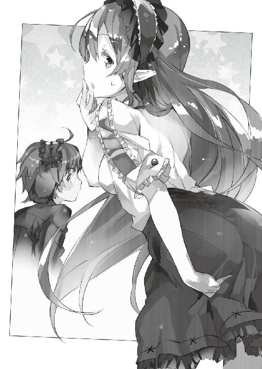
首から胸上の部分と袖は、黒地の透ける素材になっていて、胸の谷間が透けて見えている。だもんで思わず目が釘付けになってしまうんだけど......これはもう不可抗力っていうか仕方ないよね！ 見てもらうように透ける素材になってるんだろうし！
そんでもってスカート部分には蝶の模様が入っていて、裾にだけ白いレースがついていた。履いているのは黒いブーツだ。
普段の、野生児っぷりと打って変わって──コルセットで締め付けているせいか、やたらにその姿はメリハリが効いていて、妙に色っぽい。戸惑いを浮かべるその表情が、ある種の落差となって、なおさらにそれを助長する。
何コレすごい。
たった半時間でここまで二人の姿を変えちゃうとか──魔法か!?
「二人ともすっごく可愛い──っていうか綺麗！」
僕は拳を握ってそう叫ぶ。
恥ずかしげにもじもじしているミュセルとエルビアの姿に、胸がときめきまくる僕なのだった。これは同性ながら美埜里さんも同じだったようで──
「すっごく似合う！ 写真撮っていい!?」
などと言いつつポケットからスマートフォンを取り出し、返事も聞かずに駆け寄ると、二人をカメラで撮り始める。
「はいそこ、カメラ目線ください。いいですねー。いいですよー。そこでポーズ！」
「は、はい？」
「右手はこう！ 首はこんな感じに少し傾げて」
目を白黒させているミュセルに美埜里さんが、どこぞのカメラマンばりにポーズをつけている。そのまま『じゃあ次は軽く上から脱いでみようかー』などと言い出しかねない手慣れっぷりだった。なんだかなー。
「まさか......こんな服が着れると思わなかったっすよ......！」
その横では、エルビアが両手を自分の胸元に添えて、感極まったように言った。
「なんか......なんだか、まるで貴族にでもなったみたいっす......！」
「いや貴族はそーゆー喋りしないと想うけどね」
などと言いつつ、僕は笑う。
ミュセルもそうみたいだけど、エルビアも、レースがたくさん使われた衣装ってのは貴族のもの、って認識らしい。まあレース編みって、機械でも使わない限り、ひどく手間かかる代物らしいしねえ。
「少し化粧してるの分かります？」
二人に少し遅れて居間に入ってきた光流さんが、そんなことを言ってきた。
「あ、本当！」
と写真を撮る手を止めて美埜里さんが歓声を上げる。
「全然分からなかった！」
いや、貴女も女性なんだから気付きましょうよ。
「ミュセルさんにはピンク、エルビアさんにはブラウンのシャドウを軽くのせてます。二人とも肌が綺麗だし、すごくのりがよかったんですよ」
「ピンクって下手したら腫れぼったく見えるけど、ミュセルにだったら違和感なく似合うわねー」
「チークは二人ともピンクです」
「いいと思う！ あ、でもエルビアにはオレンジでも似合ったかな？」
たぶん化粧品の話なんだろうとは思うんだけど......残念ながら僕にはよく分からない。
僕も話に加わりたいのだけれど、もろガールズトークって感じのやりとりには、さすがに割り込みづらいよなあ。
「............」
なんとなく自分がそこにいることすら憚られるような気になって、僕は周囲を見回す。
すると壁際でブルークとシェリスが立っているのが目に入った。
リザードマンの二人は美的感覚も僕達と異なるせいか、美埜里さんと光流さんの会話はさっぱり分からない、といった様子でただ眺めているだけだ。ブルークの場合は男だからなおさらだろう。
ぽつんと一人立っているのも寂しいので、彼らの傍に行こう──としたそのとき。
「そうだ、ブルークさん、シェリスさん」
ふと二人を振り返って、光流さんが言った。
「今度鱗棄てるときになったら言ってくださいね。本当、素敵な素材。今からどんなデザインにしようか悩みます」
「へぇ。あっしらの鱗なんかで良ければ......」
とブルークが答える。
「使っていただけるのなら、私達も嬉しいです。ね──ブルーク」
「もし良かったら多めに作って、進呈します。もらってくれると嬉しいのですが」
「そりゃもう」
「喜んで」
......という感じで、たちまち光流さんはブルークとシェリスも話の輪の中に巻き込んでしまう。昼間の学校の一件といい、本当に光流さんはこういう間の詰め方というか、距離の縮め方というか、これが上手い感じだった。
それからも、居間に皆の愉しそうな声が響く。
常にも増して賑やかな雰囲気だ。
ただ──
「...............」
何故だかは分からないけれど。
なんとなく会話の中に入る機を逃したような感じで──結局、僕はぽつんと壁際に独り立ちながら、皆の愉しげな様子を、見守るばかりだった。
夕食の後──僕は早々にお風呂に入っていた。
「はー......」
自宅警備員だった頃には思いついたらシャワーを浴びる、くらいのことが多かったのだけど、やっぱり湯船にじっくり身体を浸すと、全身に凝っていた疲れがゆっくり溶けていくみたいで、気持ちいい。
「極楽極楽～と」
お約束っぽく発した台詞が、広い浴室に反響する。
数えきれないくらいに利用して、さすがにもう慣れてきたけれど......初めて見たときはどこの温泉旅館の大浴場なのかと思った。壁や天井には無駄に装飾があるし、お湯はだばだばと豊富に獅子──ならぬ狼っぽい彫刻の口から出ているのだ。
ちなみにこの狼の吐水口──電動ポンプがあるわけでもなし、近くに温泉があるわけでもないから、どうしているのかと想ったら、大量の水を沸かしながら、ブルークが手動式のポンプでお湯を循環させているんだとか。
道理で風呂に入るときには声を掛けてくれと言われるわけだ。申し訳ないので別にそんなことしなくていいよ、と言ったのだけど、湯船のお湯の温度を一定に保つ意味合いもあるらしくって、お風呂に入るときはいつもこの狼の吐水口からお湯が流れ出ている。
「あー............」
気持ちよさで、妙によじれた声が漏れちゃう。
やっぱり気持ちいい。少し熱いくらいがいいよね。これも常に沸かしながら循環させているからで、誰だかよく知らないけどこのお風呂の設計者と、それからブルークに大感謝だ。
これまたお約束な感じで、頭に手拭いを載せて深呼吸。
それから僕は湯船の壁に背中を預けて、だらんと手足を伸ばした。
「............」
天井を見つめながら思い返すのは、今日一日の出来事だ。
光流さんが、難なく学校や屋敷の皆と打ち解けたのは非常に良いことだった。僕としてもよけいな気を回さなくて良いから楽だし、何より生徒の皆が愉しそうにしているのは、単純に嬉しい。
けどどうしてもこう──釈然としないというか、いたたまれないというか、そういう部分も、心の端っこにはあったりする。
女の子の数が増えるということは、男には入っていけない話題も増えるということだ。
まあ屋敷にはブルークがいるとはいえ、彼は普段、そもそもあまり積極的に会話に絡んでこないし、どうもリザードマンにとって男女の別というのは、僕達のそれとはまた微妙に違う感覚らしい。なので、彼と『女所帯で隅に追いやられる男の悲哀』とかを共有しよう──と想っても、たぶん上手くいかないだろう。
本来ならば身の回りに女性だらけのこの状況──『なにこのハーレム』『これなんてギャルゲ？』と喜ぶべきところなんだろうけどね。頭では分かっていてもなんというか、こう、仲間はずれにされた感がひしひしと。
まあこれも、僕の一方的な思い込みなんだろうけどさ。
「考えない考えない！」
僕は変な方向に沈み込んでいく考えを振り払うように、頭を左右に振った。
考えすぎだ考えすぎ。
僕の悪い癖だ。今にして思えば、僕が自宅警備員になるきっかけになった、幼馴染みの女の子に振られた一件だって......気にせず学校に行っていれば、なんの問題もなくそのまま学校生活を送れていたかもしれないのだ。
まあ、巡り巡って、自宅警備員やっていたからこそ、この異世界に来て、ミュセルやペトラルカ、エルビアやブルーク、その他大勢の人々にも出会えたわけで、結果から見れば万々歳だったりもするわけだけど。
「んー......」
吐き出しそうになった溜め息を吞み込んで、僕は湯船に顎まで浸かった。
狼の口からお湯の流れ出る音だけが、浴室に響き続けている。
ブルークは前述の通り、罐焚きとポンプ漕ぎをしているので、一緒にお風呂に入ることはない。かといって女性陣とお風呂に入ることもないから、いつもここでは僕一人だ。
普段は、気にしてもいなかったことなのだけど。
こう浴室が広いと、何やら寂しい気持ちにさえなってくる。
「............」
僕はふと──正面にある浴室の扉を眺めた。
漫画とかだと、こう、主人公がお風呂に入っているのも知らず、美少女キャラがラッキースケベな感じで入ってきたりしちゃうもんなんだけど。さすがの僕もそんなことを本気で期待はしていない。脱衣所に僕の服が脱いであるのは一目瞭然だしね。
なのに──
「......え？」
ふと扉の向こうから聞こえてきた物音に、僕は眉根を寄せた。
脱衣所に誰かいる？ いやまあ、ミュセルかシェリスが着替えを持ってきてくれた、という可能性はあるから、別におかしいことではないのだけれど。
でもそれだったら......扉が開くのは何故？
「............!?」
愕然と湯船の中で固まる僕の視線の先──がらりと音を立てて扉が横滑りする。
そして......
「慎一さん？」
「ひ、ひかっ......」
硬直する僕。
突然の出来事に──前を隠そうとか、でも首から下はお湯の中だからたぶん、あんまり見えてないだろうとか、そんな細かいことを考える余裕もなく。僕はただ呆然と──馬鹿みたいに口を開けて、入ってきたその人物を見つめていた。
言うまでもなく、光流さんだ。
タオルを身体に当てて隠すようにしているけれど、タオルの下からすらりと伸びた白い足とか、同じく白い首筋とか、鎖骨とか、二の腕とかは丸見えだ。
というか、なまじ部分が見えているだけに、全裸状態よりもよほどにエロい。
隠すということは、見られて恥ずかしいということで、それはつまり、羞恥の対象となるようなものがそこにあるということに他ならず、つまりは布一枚隔てたここに、秘密の花園があるという主張であり、想像力をかき立て、立てて──ああああああ（錯乱中）。
「──い、いいい、今僕入ってるから！ ご、ごめん！」
僕がようやくそう言って彼女に背中を向けたのは──測ってないからたぶんだけど、十秒かそこら経ってからだと想う。その間、僕はがっつり光流さんの白い肌を凝視しちゃってたわけで。『スケベ！』の罵声と共に風呂桶の一つや二つ、すっ飛んできてもおかしくない状況だ。
しかし光流さんは無言。
それがむしろ圧力のように感じて、僕は必死に言葉を取り繕った。
「そ、その、今、僕が湯船から出るわけにはいかないから！」
息子さんが大変な状態なので。
「だ、だから──その」
「だったら一緒に入りましょう」
「そう、だから、一緒に一緒──はいぃ!?」
え、何この超展開！
まさかとうとう僕にもリア充への道が開けましたか神様!? 僕に爆発しろというのですか！ もげるのはまだ早いと想います！ ああ、お父さんお母さん、僕、加納慎一は今日をもって魔法使いへの道を諦めます......！
......などと、僕の頭の中でとりとめもない想像がぐるぐると回る。
「い、いいい、いや、でも」
しかし残念ながら、神様、やっぱり僕はヘタレなのです。
一緒に入ろうと誘われて、じゃあそうしましょう、据え膳喰わぬは男の恥です、げへへへへ、とか言ってこの状況を享受する余裕なんてないのです！
「............」
小さな水音──いや湯音と言うべきか？ ──が背中から聞こえてくる。
たぶん、光流さんが湯船の中に入ったのだろう。無意味に敏感になっている僕の背中が、彼女の近づいてくる気配を捉えていた。
「あ、あの、ヒカルさん......さ......ん......」
分かる。僕の真後ろに光流さんが──いる。
嗚呼。どうしてこんなときだけ、超能力者ばりに僕の感覚は鋭いんだよ!?
熱いからなのか興奮からなのか、心臓が大きく音を立てている。
立てちゃ駄目だ立てちゃ駄目だ立てちゃ駄目だ立てちゃ駄目だ立てちゃ駄目だ立てちゃ駄目だ立てちゃ駄目だ立てちゃ駄目だ立てちゃ駄目だ立てちゃ駄目だ立てちゃ駄目だ何をとか聞くなッ!!
「あ......あの......！」
もう一度振り返ってみたい欲望を必死に抑えつつ、僕はとりあえず目を瞑った。
「あ、あの、出ていってもらえマセンデショウカ。いや、それか顔を背けていただければ僕が出マスンデ......ソノ......」
緊張と焦りのあまり、思わず意味もなく敬語になってしまう僕。
僕の両肩には『振り返っちまえよ相手もいいって言ってるんだからよ』と唆してくる悪魔と、『いけません、振り返ってはいけません。シンイチ様はそんな下品な欲望に負ける方ではありません』と諭す天使がそれぞれ乗っかって争っている。というか悪魔が僕の顔をしているのはまあ、いいとして、なんで天使はミュセルなんだよ!?
「私と一緒は嫌ですか？」
「い、嫌っていうか......」
嫌じゃないから問題なんですってば。
そもそもこーゆー展開がお約束ならば、大喜びで振り返ったとたんに、別の誰かが──それも女性が乱入してきて、言い訳のきかない状況を目撃されちゃうのも定番の展開だ。美埜里さんとかシェリス、エルビアはともかく、あの真面目なミュセルに目撃されて、軽蔑なんかされちゃった日には、たぶん、僕は五年くらい立ち直れない。
だけど──
「大丈夫ですよ」
湯が波打つ感触。
もう距離としては、僕と光流さんの間は一メートルもないだろう。
声は少し上の方から聞こえてきているから、彼女は湯船に浸かっているのではなくて、立っている状態だ。
つまりはここで振り返ってしまうと、その、彼女の下半身がもろに目の前に来るわけで、しかも湯船の中ではさすがにタオルは外しているだろうし、つまりはその、あの、彼女の謎のバミューダトライアングルが、僕の、僕の目の前に──ああああ（錯乱中）。
「それとも慎一さんは、同性の裸で興奮しちゃうんですか？」
「いや、さすがの僕も同性の裸ではさすがに──..............................」
............はい？
今なんて？ パードゥン？
混乱した僕は、思わず振り返ってしまった。
そこに僕がまず見たのは──小悪魔っぽい光流さんの微笑だった。
そしてその下には、大平原のよーに真っ平らな胸と、滑らかで白いお腹にぽつんと一つあるおへそと、それからさらにその下に──
「............」
なんというか、実に、実にその、ご立派な──!?
「えええええええええええええええ!?」
僕の絶叫は、浴室の中で幾重にも反響した。
「な、な、ななななな」
僕は想わず跳ねるようにして立ち上がっていた。
「そんなに驚かなくてもいいじゃないですか」
と光流さんは、少し不満げな表情を浮かべて言った。
「いや、だ、だ、だだだだだって！」
「だって？」
「お、お、おと、おと、男......？」
「男ですよ？」
何をいまさら、といった口調で光流さんが言う。
ちょっと待て、何そんな当たり前のような顔と声で言ってんだよ！
「で、でも、ふ、服、水煉の──」
「コスプレじゃないですか。別に珍しくないですよ？」
悪びれた様子もなく、光流さんが笑う。
お、落ち着け加納慎一。
落ち着いて素数を数える──ではなくて状況を整理するんだ。
男？ 誰が？ 光流さんが？ 男!? コスプレ!? 女装!?
「............！」
そこで脳裏に閃くものがあった。
ガリウスの言葉だ。
『......素敵だ』『シンイチ』『君も見習うべきだ』
ひょっとしてガリウスは、一目で光流さんを男だと見抜いていた!?
ということは、見習えってのは──......いやちょっと待って!?
いろいろと危険な妄想が、僕の脳裏でぐるぐると回る。このときばかりは想像力過多のオタクな自分が恨めしい。
しかも......
「シンイチ様!?」
僕のさきほどの絶叫が、他の部屋にまで届いていたのかもしれない。
慌てた様子で浴室に飛び込んできたのは──あろうことか、ミュセルだった。
ああ。そういえばエルフ譲りで耳は良いんだとか言っていたよね............ってそんなことは今どうでもよくて！
「いったい何が......」
「──あ」
この場の時間が凍り付く。
湯船から立ち上がったまま──つまりは真っ正面からミュセルに大事なところをモロ出しというか、全裸を曝している僕と。
同じく立ったまま、しかし、後ろ姿だけを彼女に見せている光流さんと。
でもって目を見開いて僕らをガン見しちゃってるミュセルと。
「............」
誰も微動だにせず......ただ、硬直しているミュセルの顔だけが、びっくりするほどの早さで真っ赤に染まっていくのが見えた。
「あ、あの、ミュセル──さん？」
「............も......申し訳、申し訳、ご、ございませんッ!?」
つっかえまくりながらぎゅっと目を閉じると、ミュセルはそのままくるりと身を翻して走り出し──
「ひゃっ!?」
そして、がつん、と脱衣所の壁に全力でぶつかって、ひっくり返った。
「ちょ、ミュ、ミュセル!?」
僕は慌てて風呂から出ると、ミュセルのところに駆け寄る。
よほどに強く打ったのか、それとも単に見たものが卒倒するくらいに衝撃的だったのか──とにかく、彼女は気絶しているみたいだった。ただし譫言のように『申し訳ございません』と繰り返している。律儀な娘だった。
いや、だからそうじゃなくて──
「だ、大丈夫かな」
彼女の顔を覗き込みながら呟く僕。
そこへ──
「どうしたの？」
「どうしたんすか？」
「どうしました？」
よりにもよって屋敷の女性陣が勢揃いでやってきた。
「......あ」
硬直する僕。
さきほどにも増して、これが言い訳のきかない状況だと気付いたからだ。
気絶して倒れているミュセル。
風呂上がりで真っ裸なうえに、彼女の上に覆い被さるような体勢の僕。
............
なんだよこの負の連鎖!?
「慎一君？」
にっこり笑って美埜里さんが僕の前に屈み込んだ。
さすがに大人、小僧の裸なんぞには全然動じてない。
それは良いんだけど──嗚呼、そんな体勢だと、美埜里さんの、こうたわわではわわな胸元が妙に強調されてですね、こんなときに限って美埜里さんも緩めのシャツだし、え、ひょっとしてブラしてませんか？ いやそうじゃなくて、その、僕のナニがその、ますます弁解できないよーになってしまうわけでですね......！
「......あの、ご、誤解、誤解なんです──けど」
無駄と想いつつも僕は弁明を試みる。
美埜里さんは『皆まで言うな』と言わんばかりに大きく頷いて。
「問答無用♪」
「ですよねええええええええ!?」
次の瞬間──お約束展開に逆らう術もなく、美埜里さんに関節技を綺麗に極められて、絶叫する僕なのだった。
第二章 トレカ戦略？
まるで闇そのものが凝って生まれたかのような、黒い少女だった。
暗黒の最中にふと現れた彼女は──長い黒髪と、そしてフリルとレースをたっぷりとあしらった衣装の裾を揺らしながら近づいてくる。ことさらに手足を動かして歩いているわけでもなく、ましてや走り飛び跳ねているわけでもなく、ただ、立ち姿のままその姿が大きくなっていく。距離が勝手に縮んでいくかのような不思議な感覚だ。僕が呆然とその姿を見つめている間に──彼女は互いの吐息が触れるほどの距離にまで間を詰めてきた。
「......あ」
僕の唇がわなないて声を漏らす。
どうして良いか分からずただ立ち尽くしている僕の胸を──彼女はとんと突いた。
呆気なく僕は膝を折り、さらには仰向けに倒れて、その上に彼女が音もなくのしかかってくる。光などどこにもないのに、その白い顔が、笑みを形作るのがはっきりと見えた。
「今こそ契約の儀式を──」
大仰な物言いに反して、彼女が初心な乙女のように頰を染めているのが分かった。
ただ戦慄く僕の目と彼女の目が合い──彼女は恥ずかしそうに睫毛を伏せると、何かに耐えるかのように、桜色の小さな唇をきゅっと嚙んだ。
「光と闇の契りを今ここに顕すため──」
彼女は僕の腹の上で馬乗りになっている。
レースに縁取られた黒いスカートの裾から覗く太股が、暗闇の中、やけに眩しい。服越しに伝わってくる体温が、確かに彼女は幻などではなく、そこに、肉の身をもって存在しているのだと教えてくれた。
「運命の扉は今開かれ──」
彼女の手が僕の服に伸ばされる。
僕のシャツを捲り上げ、白くて細いその指で、優しく僕の肌に触れてくる。
嗚呼──僕は予感に震える。
今の僕は無力な小鳥も同然だった。彼女を前に何もできない。存在の根本を縛られているかのように指先一つ動かせないで──一方的にされるがままだった。
もちろんこの闇の中に僕達二人以外は誰もいない。
だから彼女を止められる者も──いない。
「血の盟約がすべての事象を塗り替える......」
「............」
いない──はずだった。
なのにひそひそと誰かが喋る声が聞こえてくる。
「......!?」
僕が慌てて周囲を見回すと。
「──ミュセル!?」
そこにはミュセルがいた。
いや。彼女だけではなく美埜里さんとエルビアの姿もある。いつの間にそこに来たのか、いつからそこにいたのか、彼女らの姿はスポットライトのように、闇を切り取る光でそこだけくっきりと照らし出されていた。
「............」
「............」
「............」
ミュセル達三人は、互いに顔を見合わせながら、ちらりちらりと何度も僕の方に視線を投げてくる。そればかりか口元に手を添えて、まるで内緒話をする近所のおばさん達のように、何事か小声で喋っているようだった。
そして──
「綺麗な顔してるだろ？」
何故か美埜里さんがこっちに一歩近づいてそう言った。
──っていうか、何なんですかその口調!? まるでどこかの霊安室で双子の弟の亡骸を見ている兄のような──
「でも......」
さらに美埜里さんは僕達の方を指さして言った。
「ついてるんだぜ、あれ」
「......え？」
呆然と美埜里さんの指し示す方へと視線を滑らせる僕。
いつの間にか──黒衣の少女は全裸になっていた。
一糸纏わぬ生まれたままのその姿。けれど......その胸に膨らみはなく、代わりに下半身には、それはもうご立派な息子さんがコンニチハ状態で──
「え、え!?」
まるで何かに押さえつけられていたかのように、思考の一部が止まっていた僕の脳は、急速に回転を再開し──僕の上に跨る彼女の名を思い出した。
いや。彼女じゃない。
彼の名は──綾崎光流さん。
僕の補佐役として日本からやってきた第二のオタクで。
そして正真正銘の──
「──私は」
光流さんはにっこり笑って言った。
「ノンケだってかまわないで喰っちまう人間なんだぜ」
「どこの阿部さんだよッ!?」
咄嗟の突っ込みも虚しく──光流さんの手が僕のシャツの襟を摑む。
光流さんはそのまま勢いよく両手を開いた。ボタンが弾け跳び、一気に僕の胸が外気に、そして光流さんの視線に曝される。
「いやああああ！」
女の子のような叫び声を上げて、胸元を両手で隠す僕。
けれどそのおかげでズボンを押さえることができない。光流さんは恐ろしく手慣れた仕草でベルトを外し、ズボンを脱がし、さらにはパンツにまで手をかけて......！
「い、いやだ......」
僕は喘いだ。
このままでは、このままでは有害図書指定されてしまう！ もとい──
「童貞より先に処女を失いたくなんてない......！」
いや、もしかしたら逆かもしれないけど！
でもどっちにせよ初めてを、別に大事に守っていたわけじゃないけど、でも、男に奪われるなんて、そんなの嫌だ......！
僕は逃げようと身を捩る。
けれど光流さんは見た目に反して強い力でがっちりと僕の両肩を押さえ込んできた。おまけにばたばたと振り回していた両腕も、馬乗りになった状態から、光流さんの膝が押さえつけて動きを封じてしまった。
駄目だ。振り解けない。
もう僕を守るものは何もない。
ミュセル達は、ただこちらを眺めてひそひそ話を繰り返しているだけだ。
「あ......あ......」
僕の顔から血の気が引いていく。
光流さんの顔が近づいてくる。
この期に及んでもそれはとても綺麗で、女の子にしか見えないのが、救いと言えば救いかもしれなかった。
でも......でも......！
「アッ──────────────────────！」
──そう叫んだところで。
僕は夢から醒めたのだった。
「............」
びっしょりと嫌な汗にまみれて、目を覚ます。
枕元のスマートフォンで確認すると、予定の起床時刻よりだいぶ早い。最悪の気分とは無関係に、爽やかな白い朝日がカーテンの隙間から差し込んできて、窓の外で囀る鳥の可愛らしい鳴き声が聞こえてきた。
あの夢さえなければ、実に爽快な朝だったろうに。
胸元に手を当てると、心臓が悪い意味で高鳴っている。あれは夢だ。分かっていても身体の方が納得していないのだ。この状態で二度寝などできるはずもなかった。
「あー............」
僕はぐんにょりした気分で着替えを済ませると、気分転換も兼ねて、屋敷の中を歩くことにした。じっとしていると、それこそ悪夢がフラッシュバックしてきそうで、落ち着かない。少しでも身体を動かしていた方が、まだ気が紛れるだろう。
「最悪だ......」
僕は身震いしつつ──とりあえず食堂の方へと向かった。
朝早い時間のせいか、途中、誰にも会うことはなかった。とはいえたぶんミュセルやブルーク、シェリスはもう起きて、それぞれの仕事をしているだろうけども。
「......おはよ」
呟くように言いながら食堂に足を踏み入れる。
やはり人の姿はない。たぶん、ミュセルは隣の厨房だろう。人数が多いのと用意する朝食の種類が複数あるのとで、朝の厨房はけっこう、忙しい。下手に声を掛けてミュセルの手を煩わせるのも悪いので、僕はとりあえず自分の席に座って待つことにした。
「んー......」
息を吐き出しながら伸びを一つ。
それから僕は力を抜いて椅子の背もたれに身体を預けた。
そこで──
「おや、慎一君」
「あ──的場さん？」
名前を呼ばれて顔を上げれば、ちょうど、的場さんが食堂に入ってくるところだった。
「早いね」
的場さんは笑顔でそう言ってくる。
「的場さんこそ。どうかされましたか？」
確か急ぎで日本に帰らなきゃならなかったはずでは。
それとももう行って帰ってきたんだろうか？
「いやね、少し早めにこっちに戻れて、時間ができたから、様子はどうかなと思ってね」
僕の予想を裏打ちするように的場さんが言う。
「美埜里さんや光流さん呼んできますか？」
「いや、いいよ。別にはっきりとした用事があるわけじゃないから」
そう言うと、的場さんは、テーブルを挟んだ僕の向かいに座った。
さすがに自分の親にも等しい世代の人を前にして、だらけているわけにもいかず、僕は背筋を正して椅子に座り直す。まあ今は、面と向かって何かこの人と話し合わねばならないような案件は特にないのだけれども──
「......そういえば的場さん」
僕の脳裏をさきほどの悪夢がかすめる。
「光流さんが男だってこと、どうして言ってくれなかったんですか」
初めに男だと言って紹介してくれたらよかったのに。
しかし僕の恨めしげな問いに、的場さんはきょとんとした表情で首を傾げた。
「知らなかったのかい？」
「おかげで驚きましたよ」
しかも心構えもなく裸を見せられたのだ。
あんな悪夢を見てしまったのも、そのときの衝撃が心的外傷に近い形で残っていたからに違いない。
「普通、人を紹介するときにわざわざ性別なんか言わないだろう？」
「それは......そうですけど」
光流さんの場合はちょっと事情が違う。
「男とも女ともとれる名前ですし、あの格好ですから......普通は女の子って思うでしょ」
「ああ。なるほどね」
苦笑して頷く的場さん。
「私はまず最初に──本人に会うより先に、彼が提出してきた履歴書を見たからね」
先に男だと知って会ったから、特に誤解することもなかった、ということらしい。
しかしあんな完璧とも言えるような女装を見せつけられたら、普通は何か一言あってもおかしくないと思うのだけど。それともこの人、そもそも書類の記載とか資料写真以外では、他人を認識していないのだろうか？
「一応、光流君、と呼んでいたと思うけれど？」
「それはそうですけど......」
やっぱりいまひとつ納得のいかない僕に、的場さんは改めて問うてきた。
「それで、光流君の様子はどうだい？」
「どうって......」
「周りとは馴染めているかい？」
「はい。まだ来て三日とは思えないくらいですよ」
そう。彼がこの神聖エルダント帝国に来てからもう三日──正確に言えば今日で四日目になろうとしていた。
初日から彼はすんなりと周囲に溶け込んでいたけれど、それはこの三日間変わることなく......学校ではすでに、ほとんどの生徒と仲良しだ。屋敷の方でも皆と愉しそうに話している場面を何度も見ているし、何か不都合が生じたという話も聞かない。
いろいろコスプレ衣装やら何やら持ち込んできているところを見ると、僕のときと異なり、それなりに覚悟やら何やらを決める時間があったんだろうけど......それにしても、見事な順応ぶりである。
僕がこの世界に慣れたというか、馴染んだのっていつごろだったかなあ。
少なくとも、こんなに早かったことはないと思う。
「正直、ちょっと妬ましいくらいで」
「先に慎一君を連れてきたときの経験が我々にもあるからね。事前に打ち合わせはしっかりやったよ。そのせいだろう。何にしても馴染めているなら良かった」
「はい」
「彼は優秀だよ」
的場さんはふと、声に意味ありげな響きを載せる。
「なんといっても、君のアシスタントとして選ばれたくらいだからね」
「............はぁ」
僕は曖昧に笑いを返した。
普通に聞いていると、的場さんが僕をものすごく優秀な存在として評価してくれているようにも思えるけれど、この人の台詞をそのまま鵜吞みにするのは危ない。今は敵対しているような関係ではないにしても、この人の後ろには日本政府がいて──日本政府は生意気にも自分達の計画に反抗した僕を、あまり良くは思っていないはずだ。
その一方で僕は日本政府が思っている以上に早く、深く、この神聖エルダント帝国に馴染んで、ペトラルカ達とも仲良くなった。僕にその気があるかどうかはさておき、これを一種の『浸透工作』として見た場合......僕はかなり優秀、ということになる。
つまり日本政府としては、僕を〈アミュテック〉の総支配人として置いておくのは本意ではないけれど、現状の実績や、他の者と置き換えた場合の効率その他もろもろを考えると、他に選択肢がない、という状態なのだ。
「旦那様？ マトバ様？」
ふと聞き慣れた声がする。
僕と的場さんは揃って隣の厨房に繫がる出入り口の方を見た。
ミュセルが驚きの表情で立っている。僕がこんな早くに食堂にいることも、そして同じく的場さんがいることも、予想外だったのだろう。
「すみません気付きませんで......すぐにお茶をご用意します」
「いや、私はもう帰るから、いいよ」
的場さんは朗らかに言って片手を振る。
彼はそのまま立ち上がり、食堂を出て行こうとして──そこでいったん、足を止めた。
彼はにこやかに笑みを浮かべて、僕の方を見る。
「それじゃあ、光流君をよろしく頼むよ」
「......はぁ」
曖昧に頷く僕に、的場さんはもう一度手を振ると、さっさと出て行ってしまった。
後に残るのは僕とミュセルだ。
「あ、あの、お茶は......？」
「いや、僕もいいよ。早く起きちゃったから気分転換に来ただけだし」
「気分転換、ですか？」
ミュセルが小首を傾げる。
その仕草が──もう、いつもながら可愛いのなんの。
「......うん、やっぱり僕は、ミュセルみたいな女の子の方がいいや」
「え......？」
「いくら見た目が可愛くても、平らな胸とか、筋肉のせいで硬そうな身体よりも、抱きしめたら柔らかそうな、丸みのある身体の方が僕は好きだな」
「シンイチ様......」
ミュセルの白い頰が朱色に染まる。
「え？ あ──」
しまった。胸の内の独白のはずが、うっかり声に出ちゃってたみたい。
「あ、いや、その......」
「あ、あの......朝食のご用意......してきます！」
焦る僕に、言い訳も許さずに背を向けると──ミュセルはぱたぱたと足音を立てて厨房に駆け込んでしまった。
嗚呼。ミュセル。君は僕の心の清涼剤だよ！
などとひっそり萌え萌えしつつ......先の悪夢でどんより曇った気持ちを浄化しようと、僕はこの場に満ちるなんだか甘酸っぱい空気を胸一杯に吸い込んだ。
その日もいつも通り学校での授業を終えた僕達は──屋敷に帰ってきてから、居間で思い思いの時間を過ごしていた。同じ居間にはいるのだけれど、別に揃って何かをしているわけではなくて、それぞれの場所で好きに過ごしているのだ。
夕食までの......短いけれども、まったりとした時間である。
僕は読みかけだったライトノベルの続きを読んでいて。
ミュセルは居間にいる皆に、順にお茶を淹れてくれていて。
美埜里さんはノートパソコンで報告書を書いているみたいで。
「............」
エルビアは何やらデッサンでもしているのかスケッチブックに鉛筆を走らせていた。
でもって──光流さんがエルビアの隣で、そのスケッチブックを覗き込んでいる。ちなみに水煉のものとは異なるけれど、今も着ているのはゴスロリ系の服だ。どうやら普通の格好をする気はまったくないらしい。
「......慎一さん」
ふと名前を呼ばれる。
ライトノベルのページから顔を上げると、光流さんが僕の方を見ていた。
彼女──もとい彼は、顎に手を添えるようにして、何事か考えるような素振りをしていたのだけれど。
「思ったんですけれど。トレーディング・カードを持ち込んではどうでしょうか？」
「え......トレカ？」
僕は目を瞬かせて問い返す。
トレーディング・カード。略称トレカ。
もちろん、オタクな僕にはお馴染みの商品だけれど......確かに僕はまだ、こちらの世界にトレカを持ち込んではいなかった。これは単に僕があんまりそっち系に詳しくない、というかもともとあまり興味を持っていなかったから、というのが一番の理由だ。
「そもそもトレカというのはどうしてあんなに急速に流行し始めたかご存じですか？」
「え？ いや──どうなんだろう？」
「客の側から言えば、お小遣いで買える安価なグッズ、しかも蒐集欲を満たせるだけの種類が存在する......気軽に買える商品なのです」
「ああ、まあそう、なのかな」
確かに、コンビニとか本屋さんで小学生がトレカを買っている姿もよく見かけた。
「同時に──販売店側からすれば、売り場面積に比して単価が高い」
「......へ？」
突然、話が難しくなったような気がして、僕は間の抜けた声を漏らした。
「トレカって十枚パックでも、全然場所をとらないでしょう？」
「......まあ、そうかな」
トレカのパックがまとめて突っ込まれている箱を脳裏に思い描いて僕は頷く。
十だか二十だかのパックが入った箱が、掌の上に載っちゃう大きさだったように思う。
つまりそれは──
「十枚パック一つが百円として、二十パック入っていれば二千円。でも売り場における専有面積は文庫二冊よりも小さい。文庫一冊が六百円とした場合、倍とは言いませんが、遥かに利益効率は良いことになるでしょう？」
「............あ」
言われてみれば。
たいていのトレカはレジのすぐ傍に『ついでに買ってね』って感じで置かれていた。
これは客が気軽に買えるように、という理由からそうなっているだけだと思っていたけれど、よくよく考えてみれば、店の側は、わざわざ専用の売り場を設ける必要がない、ということでもある。特にトレカは大量に陳列しておく必要がない。つまり改めて空間的なコストをほとんどかける必要がないのに、売るべき商品が一種類増えることになる。また販売するうえで特に専門知識も要しない。
確かにこれは店舗運営のコストも考えた場合......利益率はかなり良い。
これを僕達、〈アミュテック〉の仕事として考えた場合──
「持ち運びがしやすい、つまりこちらの世界に運び込むのも楽。また単価も安いし収納場所にも困らないから買う側は手を出しやすい。蒐集性については、ポケットに入れて持ち歩くこともできるのに、『これだけ集めたんだ』って同好の士に自慢しやすい──」
「な......なるほど」
「そこにきてすでにこちら、エルダントでは幾つかの作品が生徒達や、その周辺の人達に大人気なのでしょう？ もともとアニメ絵や漫画絵に抵抗のない人達なわけだから、綺麗なイラストのついたトレカなら、皆、興味を持ってくれると思うんです」
「確かに......」
学校の生徒達の様子を思い出して──僕は頷いた。
オタクとそうでない人間の境目というのは幾つかあるだろうけれど、僕の経験上、特定作品の向こう側の『制作者』に興味を持つかどうか、という一線は確実にある。
たとえばアニメだとスタッフロールの監督名やキャラデザイン、作画監督、脚本家、制作スタジオ、といったクレジットをいちいち読むかどうか、だ。これで『第●話は作監が■■さんだから絵が綺麗』だとかなんだとか得意げに語り始めるともう一線越えは確実というか、立派なオタクである。
でもって──思い返せば、学校の生徒達も、最近では綺麗な絵や可愛い絵という括りではなく、○○先生の描く女の子の絵がいいとか、××先生の腰の描き方がエロいとか、太股を描かせたら■■先生が天下一品とか、そんな話をし始めている。
つまり絵柄の個人差について、見分けがつくようになり始めているということだ。
こうなれば当然......複数のイラストレーターが描くトレカにも皆、興味を持つはずだ。
美麗なイラストがぎゅっと詰まった小さな──ポケットに入れて持ち歩ける絵画。あるいはエルダントの人達にとって、それはまったく新しい概念、一種の革命のように受け入れられる可能性は、ある。
しかも内容の多くは、自分達の好きな物語の一場面や、登場人物、もしくは怪物やロボット等々......それらは蒐集欲を刺激し、多方面の嗜好に対応する。
「さらに言えば──運送コスト、生産コスト、といった面から見ても経済効率が良いということは、大量に持ち込めばそれなりの利益を上げられるはず」
「大量にって──でもそんなに皆がたくさん、買ってくれるかな」
「日本語の教材としても使えると思いますよ」
「......え？」
「たいていのカードにはなんらかの説明文がついていますし、最低でもそのカードの名前くらいは印刷されているでしょう？」
「......確かに」
「いきなり長文は無理でも、単語や短い一文なら大丈夫、という人は多いはずです。意味が分かればより深くトレカを楽しめますし、単純にトレーディングだけじゃなくて、ゲーム・システムが組み込まれたトレカも多いですから、ゲームをやりながら覚えていく、ということもできます」
と光流さんは笑顔で言った。
確かに......ゲーム感覚で言葉を扱っていれば、より気楽にその内容を覚えたりすることもできるだろう。
それはつまり、〈アミュテック〉社としては、効率の良い商品を売ることができるうえに、潜在的な顧客を増やす効果も望める、ということだ。エルダントの国民としては、トレカは安価なうえに場所をとらず、容易に理解できるから、現状、文字が読めない者が大半の庶民でも、手軽に、オタク文化の片鱗を味わうことができる。
おお。なんだか良いことずくしっぽいぞ？
「トレカですけど、パックを持ち込んで右から左に売るのではなくて、いったん、開封してから改めてこちらで作った包装紙というか封筒というか、そういうものに一枚ずつ入れて売りたいんです」
「それはどうして？」
「一枚ずつの方が単価を下げられますし。それにエルダント側もそろそろ、供給する立場を経験していても良いと思うんです」
「............それは、そうかな」
確かにエルダントをこちら側の供給元として、オタク作品を他国へと自由に輸出する、というのは当初からの計画だ。すでに密輸という形でバハイラムの方には試験的にオタク作品を送り込んだりしているけれど、これはどちらかといえば例外。本来は、自由市場の形で広く流布させたいと考えていた。
また、僕は日本政府の文化侵略計画には否定的だ。
一方的に日本政府がオタク作品の供給を握る、というのは、その文化侵略の大前提であるわけだけど──オタク作品を侵略兵器として使われることが嫌な僕としては、その大前提を崩したいと考えている。
だから、エルダントが供給側に回るという考え方について、異論があるはずもなく。
「確かに今までは、私達が持ち込んだものを楽しむだけだったものね」
美埜里さんもそう言って頷いている。
彼女も立場としては自衛隊員で、日本政府側なのだけど、同時にオタクでもある。
僕と同様、オタク作品が侵略兵器として使われることをあまり良くは思っておらず、僕の考えに賛同してくれているのだ。
「で──」
と光流さんはエルビアの方を一瞥して言った。
「その包装の絵なんですけれど、エルビアさんに頼めないかなって」
「ア、アタシっすか!?」
突然話を振られ、エルビアは素っ頓狂な声を上げた。
「エルビアさんって〈アミュテック〉のお抱え絵師なんでしょう？」
「それはそうっすけど......」
「そろそろ絵師らしいお仕事をしてもいいと思うんです」
「なるほど......」
腕を組み、僕も考える。
正直それは......楽しいかもしれない。
何かを作り上げていくのは面白い。
それは別に漫画や小説といったものばかりではない。何か新しい計画として練って、これを実行に移すのも──具体化するのも、言ってみれば創作の一種だ。映画を撮影したときと同じような高揚感が胸に広がっていくのを僕は感じていた。
一応、こっちにはパソコンと一緒にプリンターやスキャナも持ち込んである。
しかも業務用の割と高性能なやつだ。今までは学校で教材を作る程度にしか使っていなかったけど、充分、包装紙の印刷にも使えるだろう。
いや......むしろこっちの版画技術を使うというのも手か。
前に出回っているペトラルカの肖像画、というかブロマイドみたいなのを見た事が在るけど、多色刷りになっていて、かなりの精度だったように思う。さすがにプリンターに比べれば、細部が潰れているもの、微妙に印刷がずれているものなど、どうしてもその品質にばらつきが出ることはあるとは思うけど......それもまた『味』と考えられないこともない。
うん。いいね。
僕はそう思ったのだけど......
「で、でもアタシの絵はまだ......」
エルビアは未だ渋っている──というか気後れしているらしい。
「本場物に比べるとやっぱり何だか違うような......」
どうやら画風のことを言っているらしいんだけど。
僕の目から見ればエルビアの絵は立派に萌え絵というか、オタク系作品の絵柄になっていると思うんだけど。彼女自身の──描き手の眼で見ると何か納得いかない部分があるのだろうか。
「別に伝統的な絵画でもなし──萌え絵やオタク作品に『こうしなければならない』という作法があるわけじゃないですよ。それこそ萌えるかどうか、その絵をお客さんが好きかどうか、だけが判断基準です」
光流さんはきっぱりとそう言った。
「私はエルビアさん、貴女の絵は良いと思います。慎一さんはどうですか？」
「うん」
僕は頷いた。
「僕もエルビアの絵は好きだよ。すごく良いと思う」
「......本当っすか？」
目を丸くして、エルビアが僕を見る。
垂れ下がっていた尻尾が、パタパタとエルビアの背後で揺れるのが見えた。
なんというか、本当、分かりやすい娘だよな。
そこがまた可愛いんだけど。
「シンイチ様は、アタシの絵が好き......？」
「前にもそう言ったでしょ。だいたいそうじゃなかったら、〈アミュテック〉のお抱え絵師として、エルビアをここに置いてないよ」
「............！」
絵を褒められたのがそんなに嬉しいのか、エルビアの頰が紅潮する。
「やるっす！ アタシやるっすよ！ そのかーどの包装の絵、頑張るっす！」
一転して気迫を漲らせ、そう宣言するエルビア。まるで彼女の背後に燃えさかる炎が見えるかのようだった。どうやらすっかりその気になったみたい。
「では決定ということで──私は明日にでも的場さんに話してみようと思います」
「あ......うん。よろしく」
光流さんにそう言われて僕は頷く。
頷くしかない。どこからどう見ても反対する理由などなかった。
というか──
「どんな絵にしたらいいっすか？」
「そうですね。この数日、教室の生徒さん達を見ていた限り、流行の要点としては──」
エルビアと包装紙の絵について打ち合わせを始める光流さん。
二人の会話をぼんやりと聞きながら──僕はただ純粋にすごい、と思った。
圧倒されていたと言ってもいい。
僕と異なり、光流さんは、明らかに商売として、仕事としての視点でオタク作品を見ることができる。トレカの利益効率とか、僕は今まで考えたこともなかった。
僕がこの世界に持ち込むものは、自分が面白いと思ったものばかりだ。面白かったからみんなにも知ってもらって、みんなで一緒に楽しめたら──という気持ちから選んでいるだけで、それ以上のものではない。
でも光流さんは違う。
彼女──もとい、彼の考え方は、一消費者のそれではなく、むしろクリエイターとか、プロデューサーとか、そっちに近い。基本的に享受する側より、提供する側の思考なのだ。
『彼は優秀だよ。なんといっても、君のアシスタントとして選ばれたくらいだからね』
ふと脳内に、的場さんの言葉が過った。
そう。光流さんは有能だ。
あるいは......僕よりもずっと。
別に悔しいとは思わない。有能な人が仲間に増えるのは良いことだ。
けれど、少し焦りのような気持ちを覚えたのも、事実だった。
もし光流さんが僕より遥かに優秀で──僕など必要ないと周囲が判断したら？
僕は一度、日本政府に反抗している。そんな僕が未だに〈アミュテック〉の総支配人をしていられるのは、あくまで、このエルダントにおいて、〈アミュテック〉を回していくうえで、僕にやらせるのがもろもろの意味でいちばん、手っ取り早いからだ。迂闊に僕を排除すると、むしろエルダント側が不信感を募らせてしまう。なんだかんだ言って僕はペトラルカと仲良くできているから。
けれど......すでに光流さんはペトラルカともそれなりに馴染んでいる。
だから実務のうえでも、彼が僕の倍以上優秀なら、僕は要らない。
そう日本政府がもし判断したら......？
（また特殊部隊が来て、今度こそ殺されちゃったりする？ あるいは日本に強制送還とか？）
駄目だ。こんな不吉な想像、誰の得にもならない。
よけいなところにまで想像を広げてしまうのは僕の悪い癖だ。
「アタシはこんな感じの絵が描きたいなって思うんっす」
エルビアが胸を片腕で隠すようなポーズを取る。
胸を強調するようなそのポーズはドキリとさせられるというか、ちょっとエロくて、しかし下品ではなくて。実に萌えキャラがとりそうなポーズだった。
しかし一瞬で萌えポーズを提案できるとか、エルビアもこっちの世界に毒され──もとい、オタク文化に馴染んできたね。
「............」
エルビアが楽しそうだし、まあいいか。
僕はそう自分に言い聞かせて──再び読みかけだったライトノベルを開き、その文面を目で追い始めた。
夕食とお風呂を終えて自室に戻ろうと廊下を歩いていた──矢先。
僕は廊下の向こうから誰かが歩いてくるのに気付いて足を止めた。相手も僕に気付いたようで......両手一杯に荷物を抱えたまま顔を上げるのが見えた。
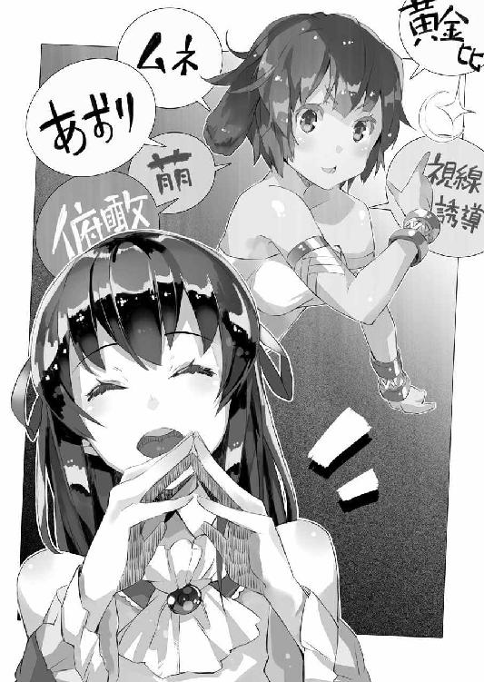
「慎一さん」
そう言って立ち止まり、微笑したのは光流さんだ。
彼女──もとい彼が抱えているのは服。
たぶん、日本から持ち込んできたっていうコスプレ衣装なのだろう。それも何着も。光流さんは両腕でしっかりと抱えているけれど、布でもこれだけの量になるとそれなりに重いんじゃないだろうか。はっきり言って見ているだけで危なっかしい。
「持とうか？」
僕も立ち止まってそう尋ねる。
けれど──
「いいえ、大丈夫です」
と光流さんは首を振った。
「そう？ ......それにしてもすごい量だね」
「ミュセルさんやエルビアさんに貸してた分です。美埜里さんと盛り上がって、いろいろ着せ替えしちゃって。洗濯してもらったから、部屋に持って帰るところなんです」
「あー......」
僕はゴスロリ衣装を着たミュセルとエルビアの姿を思い出す。
初日から、ミュセルやエルビアにコスプレ──というかなんというか──をさせて楽しんでいた光流さんと美埜里さんだけど、あれからも何度か、二人を呼びつけては着せ替えを楽しんでいるみたいだった。ちなみにシェリスはさすがに体型が違いすぎるというか、光流さんとは身長も肩幅も違ううえに、骨格からして異なるので、対象外になっている模様。
......というか。
いまさら気付いたけど良いのだろうか？
光流さんって男なんだけど......彼女らが着替えるときってどうしてるんだろう。
「レースや装飾品も多いから洗濯に手間取るんですよね」
「へえ......」
何気なしに改めて光流さんの姿を眺める。
長い黒髪。細い身体。整った容姿。黒のレースってのは一歩間違うと下品にも見えちゃう代物なんだけど、本当に光流さんにはよく似合っている。ここまで上手くゴスロリを着こなす人を僕は他に知らない。ミュセルやエルビアも元が良かったからそれなりに可愛らしくは見えたけれど、服に『着られている』感があったのは否めない。対して光流さんは明らかに自由自在にゴスロリ衣装を着こなしていた。
......でも男なんだよなあ。
僕は胸の内で溜め息をつく。
こう見ているだけでは、女の子にしか見えない。正直、その身体を──というか股間の逸物を見ていなければ、僕は光流さんのことを女の子だと勘違いし続けていただろう。
「私の顔に何かついていますか？」
「え？ あ、いや」
苦笑気味に問うてくる光流さんに、僕は慌てた。
光流さんは今まで僕の近くにはいなかった種類の人間だ。
僕はオタクではあったけど、コスプレの経験はないし、女装の経験もない。そういう友人知人もいなかった。だから男でありながら美少女キャラの格好をする人の気持ちがよく分からない。ただそういう人達はそれぞれの考え方があって......他人からは分からない趣味嗜好の機微や、触れられたくない部分──無遠慮に触れられれば不愉快に感じる部分があったりする、というのは知っていた。
よく知りもしない他人の決めつけで、傷つけられた経験は僕にもある。
だから『ゴスロリがよく似合っていて、まるで男じゃないみたい』などと、思ったことを素直に口に出しても──それが虎の尾を踏む行為であったりもするわけで。
正直、僕としては、この『新入社員』、どう接して良いのかも分からないのだ。
だから常に無難な対応を心掛けてきた。
ただ......
「ひょっとして、こいつ男のくせに、とか思ってます？」
からかうような口調で光流さんが尋ねてくる。
「え？ いや、そんな......」
光流さんの方からその話題に触れてくるとは思わなくて、僕はさらに慌てた。
「まあ、その、男だって分かったときには、正直、びっくりしちゃったけどさ」
「そうでしょうね。皆そうです」
と光流さんは頷くと──服を抱えたまま歩き出す。
明らかに話の途中ということで、そのまま見送るわけにもいかず......僕は三歩ばかり後から、彼についていくことにした。
「実を言えば、私自身は別に女の子になりたいわけではないっていうか──いわゆる『身体は男だけれど精神は女です』って感じの人ではないんですよ」
「あ。そうなんだ」
でもそれじゃどうして。
「親が──うちの親は女の子がほしかったみたいで」
「......は？」
「私の親、二人共オタクなんです。知り合ったのがそもそもコミケで。子供が生まれたら着せ替えしようって考えてたみたいで、わりと子供の頃からこういう女性キャラの格好をさせられてて。物心ついた頃にはもう、こういうヒラヒラを着るのが当たり前っていうか......抵抗もなくて」
「ははあ......」
それはなんというか筋金入りだ。
「可愛い格好は嫌いじゃないし、周りの皆も喜ぶしで──」
「女の子の格好が当たり前になった？」
「まあそんな感じですね」
と光流さんは苦笑した。
「私も誰かに可愛らしい格好をさせるのは好きだから、親の気持ちは分かるんですよね」
「あ、それでミュセルやエルビアにも......」
着せ替えさせて楽しんでいたわけね。
まあ確かに彼女らのコスプレは、それはそれで実に素晴らしいというか、普段との落差がものすごい分、実に萌えたのは事実だ。写真を撮りまくっていた美埜里さんにこっそりデータをくれるよう頼んだくらいにね。
「ゴスロリ、美埜里さんには拒否されましたけどね」
「......ああ」
そういえば美埜里さんは光流さんとは逆に男装専門なんだっけ。
「胸くらいはすぐに手直しするって言ったんですけど」
「あー............」
僕は苦笑する。
美埜里さんは、体型が理由でゴスロリを着るのを嫌がったわけではないと、知っているからだ。光流さんと同様、親が望んだ子供の性別が、実際のそれとは違っていた──それが理由で彼女は女性っぽい格好をあまりしたがらない。
考えてみれば美埜里さんと光流さんは共通点が多いのな。
美埜里さんもレイヤーで、自分の性別とは違う格好をしていることが多いわけで。
けれど──
（美埜里さんの中身が『男』ってわけでもないしなあ）
さっぱりして明るい性格ではあるけど、女性としての優しい物腰もあって。
美埜里さんは一種の『遊び』として男装を楽しんでいるっぽい。
ということは......光流さんも別に『身体の性別に違和感がある』とか、『自分の精神の性別を形として顕したい』っていう欲求のために、女装しているってわけではなくて、純粋に服を着ることそのものを楽しむというか、一種のロールプレイみたいな『遊び』として女装をしているということなのかな。
「そういえば慎一さんの御両親もオタクなんですよね？」
と光流さんが尋ねてくる。
「的場さんに聞きました。『君と同様、慎一君もオタクのサラブレッドだ』って。詳しくは教えてもらえませんでしたけど」
「あ。うん──まあそうだね。サラブレッドは言いすぎかもしれないけど」
と僕は頷いた。
「父さんがラノベ作家で、母さんが元エロゲンガーなんだ」
「へぇ......すごいですね」
光流さんが目を瞬かせる。
「すごいのかなあ」
脳裏に両親を思い出しながら僕は首を傾げる。
けっこう、どっちも親としては問題のある人達だったよーな気もするんだけど。少なくとも普通の親は、引きこもりの息子の部屋の扉を、チェーンソウで切断したりはしない。いやまあ世間の平均的な親から比べて『すごい駄目な人達』という意味なんだと言われれば、まあそうかもしんない。
「うちの両親は、どちらも、本職になれなかったクチですから」
「......え？ あ、ああ......」
御両親、コミケで知り合ったって言ってたっけ。
コミケではコスプレイヤーも話題になることが多いけれど、そもそもは同人誌即売会なわけで。二次創作か一次創作かはさておき、光流さんの両親が小説や漫画の同人誌を作っていたとしても、別に驚くような話じゃない。
ただ──
「プロになろうとしたこともあったみたいですけど、上手くいかなかったみたいで。結局、流行のジャンルをその時々で見繕って、十八禁同人誌を作ってる方が、お金が儲かって手っ取り早いって」
そう言って苦笑する光流さん。
「あー......」
まあ、そういう人達もいるのだという話は、僕も聞いたことがある。
流行の作品を次々上手く乗り換えていけば、それだけで食べていけるくらいの収入に──何百万というお金になるとか。もちろん、売れ線の絵を追い続けられるだけの器用さだとか、流行を敏感に察知する感覚とかは必要だったりするけど。
「まあ創作はプロだから偉いってわけでもないしね」
と僕は父や母のことを思い出しながら言った。
「本当に好きなことなら仕事にしない方がいいとか、作品を楽しむために見れなくなるとか親がよく言ってたし」
プロになると、好き勝手には作品を作れなくなる──それは父も母も口を揃えて言っていたことだ。プロが作るのは売り物だから、お客様第一、自分の好きなモノを好きなように作るのではなくて、売れるものを売れるように作る『責任』が生じる、と。
また......純粋に他人の作品を楽しめなくなるとも言っていた。
何を見ても、つい、自分だったらこうするとか、この作品のこの部分を自分の作品に取り込むにはどう弄れば良いかとか、そういうことばかり考えてしまって、無心に作品を楽しめなくなるとか。
「〆切前やマスターアップ直前になると徹夜は当たり前、だからなんて言うか、イライラもするし、それが募って、人格的にそれどうなのって言動になったりするしね」
「......そうなんですか？」
「少なくともうちの親はそうだったよ」
と僕は肩を竦める。
栄養ドリンクとコーヒーをお供に、睡眠どころかお風呂に入る時間すら惜しくなって、一日中部屋にこもりっぱなし......そんなことしてたら、そりゃ、言動も荒れる。
だから僕は創作関係の仕事には就こうと思わなかった。
逆に言えば、そんな大変な生活をしながらでも、その仕事を辞めないで続けていられるのは、それが好きだからだろう。好きだからこそ無茶をしてでもそれをする。そういうことなんだろう、たぶん。
「お互い、親には苦労させられるってことですね」
と光流さんは笑う。
「そうかもね」
まあ自宅警備員という名のスネかじりをやっていた僕が、親のことをどうこう言えた義理ではないのだけれど。
やがて──僕達は光流さんの部屋の前に着いた。
「それじゃ」
「はい。おやすみなさい」
僕は光流さんをその場に残して元来た廊下を戻る。
「......なるほどな」
僕は自分の部屋へと向かいながら、ふと光流さんの話を思い返した。
僕よりもより商業主義的というか──単に作品の内容ではなく、それを売るための方法論も含めたものの見方を光流さんがしているのは、流行を見ながら同人誌を作り続けてきた両親の影響というのもあるのかもしれない。それは好きで本を作るというよりも、『確実に売れるために、そのジャンルを選択する』という考え方で......同人誌と言いつつ、商業誌の考え方に近い。
それがはたして愉しいのかどうかは僕には分からない。
ただ、なるほど、そういう作品の作り方もあるのだと──そういう創作物への接し方もあるんだと、少し不思議に感じていた。
おおよそ週に一度......日本から城下町にある練兵場の片隅に『定期便』が来る。
これは〈アミュテック〉の仕事として送られてくる『公式』の荷物と異なり、こちら側に駐留している自衛隊員達の私物を、やりとりするためのものだ。
つまり本来であれば、僕には関係のないものである。
僕の場合は基本的にほしいと思ったアニメ作品や漫画、ラノベといったオタク商品は公式に発注をかけて『交易品』として取り寄せるので、別便で、しかも直接屋敷に届くことになっている。公私混同もここに極まれりといった感じだけれど、これは役得だろう。
ただ──〈アミュテック〉の仕事とは関係のない、個人的な嗜好品がほしい場合があって、その場合には僕も美埜里さんに頼んでこの『定期便』を利用させてもらっている。
たまにポテトチップスとか、コーラとか......エルダントにはないジャンクフードを食べたくなるときもあるしね。ミュセルの料理が美味しいから食生活に不満はないのだけど、こればかりはまた別物だ。
ともあれ──今日はその『定期便』が練兵場に届く日だ。
発注主の僕、美埜里さん、荷物運びのブルーク、という以前からの、いつもの面子に加え、今日はミュセルや光流さんも一緒に来ていた。ミュセルはたまに、日本の食材を美埜里さんを介して発注していて──時折、お米とか醬油とかを使った料理を出すようにしてくれている。その辺の確認のために彼女も来ているのだった。
「あ。来てる来てる」
軍役に就く前の子ども達が練習しているのを横目で見ながら、僕達は輸送用コンテナが積み上げられている辺りに向かって歩いていく。
「やっと来たわね、この日が......」
ふふふ、と僕の隣を歩きながら、不気味な笑い声を漏らすのは美埜里さんだ。
「高井先生の新刊とか、みさぎ先生の新刊とか『学園楽園』のファンディスク......」
「美埜里さん、顔顔」
緩みに緩みまくっている美埜里さんの顔は、百年の恋も冷めちゃうレベルでやばい。
どれくらいやばいかと言うと、僕を挟むような形で美埜里さんと反対側を歩いていたミュセルが、彼女の顔を見て表情を強張らせると──僕達の一歩後ろを歩くようになってしまったくらいだ。
まあ美埜里さんの気持ちは分からないでもないけどさ。目当てのものが届くとなると、思わず顔が緩んでしまうのは仕方ない。
「ではさっそく！」
我慢できない──といった様子で駆け出す美埜里さん。
「あ、手伝います！」
そんな彼女を、ミュセルが慌てた様子で追いかけていった。
その後に続く僕、光流さん、そしてブルーク。
「いつも悪いね、ブルーク。庭仕事中断させちゃって」
「いえ。お気になさらず」
僕の言葉にブルークが首を振る。
「で......今回はけっこう、荷物は多めですかい？」
「うーん。多いかどうかはさておき、重いかも。お米とかお味噌もまとめて発注したみたいだし。エルビアがすんごくよく食べるしね」
わりと日本食の味はエルビアの口に合ったのか、彼女は一人で僕の三倍は食べる。そのくせ、太る様子は全然ないことを思うと、基礎代謝が違うというか、そもそもの筋肉量が違うのだろう。
「エルビアにも手伝ってもらえたらよかったんだけどね」
エルビアはウェアウルフなだけあって力持ちだ。だから荷物運びを手伝ってもらえるのはけっこう助かったりするのだけれど──
「仕方ないですね」
と光流さんが言った。
「カードの一件でやる気出して引きこもってるんですから」
「まあねえ」
そう。光流さんの言う通り、エルビアは今、絶賛引きこもり中だ。
彼女は今、トレーディング・カードの包装紙の絵を描いている。
ちなみにこれはすでに二枚目。
一枚目は試験的に投入済み──つまり学校を中心として、トレカの販売はもう開始されている。光流さんが自分で作業をすると言ったので、トレカに関しては基本的に彼に任せっきりになっているけれど、それなりに評判は良いみたい。
だからこそ、第二弾を日本から持ち込もうということになり──今、エルビアが熱中しているのはその包装紙だ。自分の絵が大量に刷られて出回るという状況を目にした彼女は、すっかり気を良くして、二枚目にも意欲的に取りかかっている。そういうわけで彼女を荷物運びとして連れ出すのは、諦めた僕達なのだった。
いずれにせよ......トレカをエルダントに持ち込んだのは正解みたい。
「うふふふふふふふ」
にやにやと締まりのない笑顔でコンテナから段ボール箱を取り出す美埜里さんと、それを手伝うミュセル。僕達もコンテナに近づくと、自衛隊の人達に混じって、コンテナから段ボール箱を引っ張り出して、中身を確認していく。
「えっと、あとは......」
だいたいの荷物の確認を終え、僕は顔を上げた。
周囲はそれぞれ、自分の荷物の仕分けが終わったらしく、談笑モードに入っている。もう全部終わりかな、とホッと一息つこうとして。
「あれ？」
端っこの方に、段ボール箱が二つ置かれていることに気が付いた。
誰のだろう？ 自衛隊の人達も気にしてないみたいだし、美埜里さんも自分の荷物が入っているらしい段ボール箱を眺めて楽しそうにしているから、彼らのじゃないらしい。
僕はその段ボール箱に歩み寄った。
「......あれ？」
僕は眉をひそめた。
コンテナに積み込まれる途中でか、あるいは運び出す際にかは分からないけれど、段ボール箱が破損している。中身が少し見えて──
「個人的な品物ですから、見ないでもらえますか？」
「──あ」
そう声を掛けられて僕は振り返る。
光流さんが僕の方に歩み寄り──通り過ぎるとその段ボール箱をひょいと抱えた。どうやら中身はかなり軽いらしい。
「この荷物、君の？」
「はい。名前も書かれていますよ」
そう言って光流さんは段ボール箱の側面を指さす。
「これって──中身は？」
「............」
光流さんは少し悪戯っぽく笑ってから、人差し指を唇に当てて、そっと囁くように言ってきた。
「乙女の秘密です」
いやあの。君がやると本当に冗談に見えないのでいろいろやばいです。
「慎一さんは乙女の秘密にそんなに興味があるんですか？」
「い、いや、それは......」
言葉に詰まる僕。
全然興味ない──と言い切ってしまうのも、『お前という人間にはなんの興味もない』と言っているように聞こえて良くないだろうし、かといって頷いちゃうと、誤解されそうな雰囲気だし。
「──っていうか」
とりあえず僕は無難な突っ込みをしてごまかすことにした。
「誰が乙女やねん」
「どうして関西弁なんですか」
「やはり突っ込みの本場は関西かなあと」
「ふふふ。とにかくこれはちょっと見られると恥ずかしいものが幾つか入ってるので、勘弁してください」
と段ボール箱を僕から遠ざけるように動かす光流さん。彼はそれからちょうど、通り掛かったブルークの方に段ボール箱を差し出して言った。
「ブルークさん、この荷物もお願いしていいですか？」
「分かりやした。載っけてくだせえ」
ブルークは両手で三つばかり抱えた大きな段ボール箱を鼻先で示す。光流さんはそれより二回りほど、小さい自分の荷物を、ひょいとその上に載っけた。
「とりえず羽車に積んで来やす」
そう言ってのっしのっしと歩いていくブルーク。
その後ろ姿を僕は見送りながら──
「............」
「慎一さん？ どうかしました？」
「な、なんでもない！ なんでもないよ？」
光流さんに声を掛けられ、僕は慌ててそう応える。
「もうこれで荷物は終わりかな？」
とりあえず目当ての品を確認して正気に戻った感じの美埜里さんが、これまた左右の腕に段ボール箱を一つずつ抱えながらそう尋ねてくる。彼女の隣ではミュセルも一つ段ボール箱を抱えているのが見えた。
「たぶん──そうですね」
僕も改めて自分の頼んだ品が入った段ボール箱を一つ抱えて頷いた。
「じゃあ行きましょう」
美埜里さんがそう言うと、僕達はぞろぞろと羽車の方に歩いていく。
けれど──
「............」
僕の見たあれは──光流さんの段ボール箱の中にぎっしり詰まっていたのは、メモリーカードの箱だったように思う。それも同じ種類のものばかりだ。
あんなにたくさん......何に使うんだろう？
光流さんは自前のノートパソコンを持ち込んでいたみたいだし、それに使うのは分かるのだけど──同じものを大量に使うだろうか？ それなら容量の大きいポータブルのハードディスクドライブとかを持ち込んだ方がいろいろ捗ると思うのだけど。デジカメか何かで使うにしても、そんなに何枚も交換して抜き差しするとか、現実的じゃない。
「............？」
まあ乙女の秘密かどうかはさておき、プライベートの品なのだと言われてしまうと、それ以上追及もできない。大量にメモリーカードを持つのが趣味、ということも──考えにくいけど──あり得ないことじゃないわけで。
「............うーん」
ただ何か──自分でもよく分からない違和感のようなものを、段ボール箱と一緒に抱えて、僕は羽車に歩み寄った。
次の日の朝──
「おはよ──」
学校に出てきて教室に入った僕は、教室内で何かに興じる生徒達を見ることになった。
珍しく生徒達は僕が入ってきたのにこちらを見ようともしない。無視されているというよりもその『何か』に熱中していてこっちに注意が向いていないらしい。人垣ができていて、入り口から見ただけではその中心で何が行われているのか、よく分からなかった。
ただ......
「──ずっと俺のターン！」
どこかで聞いたことのあるよーな台詞が、それもすんごい得意げに響いてくる。
授業開始にはまだ間があるから、僕は彼らの遊びを邪魔しないようにそっと近づいて、人垣の外から──生徒と生徒の間から中を覗き込む。
「くうッ！ ならば」
「はははッ！ 無駄だッ！ 僕にはこのカードがあるッ！」
「そ、それは!?」
「コスト零で同時に相手の攻撃全反射ッ！ お前にダメージ百六十！」
「ず、ずるいぞ、そんなの──」
「これがこのカードなんだよッ！」
どうやら人間の生徒二人が、対戦カードゲームで遊んでいるようなのだけれど。
「悔しければ持っていない自分を恥じろ！」
「そんなカード......」
「はははッ！ これがあれば僕は無敵ッ！」
「くっ......」
「さあ、どんどんいくぞ！」
──とかなんとか。
途中から何やら一方的な展開になったみたいで、片方がもう片方にひたすらボコられる展開が続いた。カードのイラストは可愛いキャラの絵なのだけど、なんというか、その『効果』が凶悪すぎて、そもそも戦いになってない。
僕はカードゲームにはあんまり詳しくないのだけれど、これは──
「はっは！ 僕の勝ちだ！」
勝負は早々についたらしい。
双方のカードに──その『効能』に差がありすぎた。あれじゃ素手の戦いに刃物どころか銃を持ち込むようなものだ。くだんのレアカードが出てきた時点で、それを持っていない方の生徒の勝利はたぶん、なくなった。
そして──
「──さあ」
負けたらしく肩を落とす生徒に、勝った方の生徒が手を差し出している。
渋々といった様子で負けた生徒が、勝った生徒に今自分が使っていたカードの一枚を手渡していた。
............え？
「あ、あのさ！」
僕は人垣を押しのけてカードゲームをしていた生徒二人に駆け寄った。
「あ。シンイチ先生。おはようございます」
「おはよう。じゃなくて──今、負けた方がカード渡したよね？」
「はい？ ......ああ、はい」
と生徒達は揃って頷く。
「な......なんで？」
「そういうルールだからですけど？」
勝った生徒がにこやかに答える。
「ご存じないんですか？」
「あ、いや、トレカは光流さんの──」
担当だから、僕は細かいところまで関与していないのだけど。
最後まで言わずともその生徒は察してくれたのか、彼は笑顔でこう言ってきた。
「勝った方が、負けた相手から好きなカードを一枚もらえる。そういう仕組みなんで、ものすごく盛り上がるんですよ！」
「ふん、よく言うぜ。勝つために強いカードばっか集めてるくせに」
苦々しげに呟いたのは、負けた方の生徒だ。
「前見たぞ、強いカードを買い取ってたとこ」
「え......」
買い取っていた？
「あれはちゃんと同意のうえの取引だよ。みんなやってることだし。悔しかったら君も強いカードを集めてきたらいい」
ムッと、勝った方の生徒が眉根を寄せて反駁した。
その口調がひどくきついもので、一瞬、喧嘩でも始まるんじゃないかと僕は身構えたけれど──さすがにそれはなく。
結局、生徒二人はカードを片付けると、それぞれの席に戻っていった。
「............」
取引って......カードのためにそこまでするの？
そりゃあコンプリートするために物々交換とかは分かるけどさ。でもさっきの言い分から察するに、そういうことではない気がする。
僕は教室の中を見回す。
光流さんが販売を始めたトレカは、すでに学校中で、そしてその関係者周辺で大流行の兆しを見せている。教室内で生徒達がトレカを持っているのを見るのも珍しくない。
だから──以前は、僕はその光景に気付かなかった。
いや。目にしても特に気がいかなかったのだ。
教室の隅でカードを交換している生徒達の姿に──正確には彼らが手にしているのが、カードだけではないことに。
あれは──
「............お金」
エルダント帝国発行の銅貨や銀貨だ。
いや。まあもともとが販売されているものだから、さらに客同士が、これを交換するのは別におかしいことでもなんでもないだろう。そもそもトレーディング・カードなんだし。あるいは余ったカードを、持ってない相手に売るというのも。
けれど、どう見ても、カード一枚に対する金額が、おかしい。
僕の勘違いかもしれないけれど......あれは、カード交換の際に、『差額』を払っているのではないのか？ それはつまりカードに『相場』ができていて、各カードに無視できない価格差が生じているということなのでは？
なんだ......この状況!?
はっきりとは言えないけど何かおかしい。ぞわぞわする。
これではまるで賭博──いや、今はまだ賭博で済んでいるけれど。もしこの状況が進行すれば、カツアゲだのなんだのして、カードを奪う者も出てくるんじゃないの？ 確かそんな事件が日本であったような......
「......光流さん？」
僕は思わずトレカをエルダントに持ち込むことを提案した本人を捜した。
「どうしたんですか、慎一さん？」
少し僕より遅れて教室に入ってきた光流さんは、教壇の端に置かれた席に座っていた。手にしているのはラノベらしき文庫本でそれを読んでいたのだろう。彼はそこから顔を上げて首を傾げた。
「カードは光流さんに一任していたけどさ」
「そうですね」
光流さんは平然と頷いた。
「ってことはあの子達がやってるカードも、光流さんが全部持ち込んだもの？」
「......ちゃんと見てみないと分からないですけど、こっちの世界にカードのような、ＰＰコートの紙を印刷する技術はないはずでしょう？ 基本、私がすべて制御してますよ」
「............ちょっと」
僕は光流さんの手を引っ張って立たせると、いったん、二人で教室の外に出た。
「今さっき、生徒達がカードゲームやってるの見たけど......なんか、ゲームのバランス悪すぎない？」
「......というと？」
光流さんは微笑を浮かべたまま首を傾げる。
奇妙な余裕を感じて僕は──眉をひそめた。
「僕はカードゲームあんまり詳しくないけど。強すぎるカードが一枚出てきただけで、一方的にボコるような展開とか、明らかにバランス損なっているっていうか。そもそもカードゲームっていわばジャンケンの発展型でしょ？ オールマイティに無敵なカードとかあったら、ゲームとして成り立たないっていうか......」
勝ち負けが戦略や駆け引きではなくて、単純に『そのカードを持っているか否か』で決まってしまうんじゃないか？ だからこそ生徒達は強いカードを求めて、お金を出す。本来の売価の何倍もの額を──
「ああ......」
光流さんはにっこりと笑みを深めた。
「良かった。上手く効果が出ていますね」
「......え？」
「それでこそ、ですよ。慎一さん」
光流さんは平然とそう言った。
「私の意図した通りになっています」
「............意図した、通り？」
僕は一瞬、意味が分からなくて鸚鵡返しにその言葉を呟く。
それはつまり、あの、非常にバランスの悪いカードゲームを、光流さんが意図的にこのエルダントに持ち込んだということ？ というか、もともと、あのカードゲームってそんなに一方的なバランスで作られてるの？
「相手を一方的に打ちのめせるくらいに強いカードがある」
歌うように光流さんは言った。
「いったん、カードゲームにのめり込んだ者、特に、勝敗に手持ちのカードを賭ける習慣ができた者にとって、それはどう映りますか？」
「どうって......！」
そりゃどうしてもほしくなるに決まってる。
それはつまり、一方的に『俺ＴＵＥＥＥ！』を楽しみまくれるということだ。しかもそれで勝てば相手のカードが手に入るから、気持ちだけの話じゃなくて実利も伴う。このエルダントにおいてトレカは交易品で──日本人の僕達の感覚からすれば遥かに高い──何倍もの金額で売られている。それが対戦で『確実に』手に入るとなれば......
「それこそ......大金を払ってでも」
そこまで言って気付いた。
「まさか、光流さん──」
あの生徒達──負けている方の生徒が言っていた。
『どこでそんなカード......』と。
つまりあのカードは普通に売られていない代物ということにならないだろうか？ もちろん、トレカなのでレアはある。だけどすでに試験的とはいえ、一万枚近くがこのエルダントで販売されていることを考えると......レアも含めて、たいがいのカードは存在が知られているはずだ。
つまり......
「光流さん、超強いレアを、バランスとらずに持ち込んで、プレミアつけて売ってるの!?」
いや。バランスとらずに──くらいならまだいい。
あえてバランスを崩すような形で持ち込んでいるとしたら？
エルダントで売られているトレカはもともと、日本で売られているトレカだ。そしてトレカを発行している会社は、当然、トレカについてはプロ......ゲームバランスを一方的に損なうようなカードを、単体で販売することはほとんどないはず。
僕も聞きかじりでしかないけど、トレカは二次シリーズ、三次シリーズ、と売れれば売れるほどに、初期のものに追加するシリーズが作られることになるけど......それは、当然、プレイヤーやコレクターの購入意欲をそそるように、より強いカード、より派手なカードが販売されることも少なくないらしい。
でもその場合......ゲームバランスを損なわない、つまりは『ただそのカードを持っているプレイヤーだけが、他のプレイヤーより一方的で圧倒的に強い』ことにならないように、強力カードを相殺するだけの別カードや、特殊カードを追加するのが常だ。そうしないと、ゲームが成り立たなくなって、そもそもそのトレカを買っている人達がすぐにそれで遊ぶのをやめてしまう。
「ええ。何をどう持ち込むのか、どのタイミングで市場に出すのか、誰に売るのか、何枚売るのか。けっこう、試行錯誤に近いから、ドキドキでしたよ」
まるで悪びれた様子もなく光流さんはそう言った。
ひょっとして、一度開封したものをこっちで再包装しているのも、レアを自分で扱うためか。
「......でもそれじゃ......」
せっかくのトレカを楽しめない。
むしろそれは、それそのものに興味がないのに投機目的でこれを買いあさる転売屋や、ゲームも楽しまずに所有欲だけを満たそうとする偏ったプレイヤーを生むことになりはしないだろうか？
「転売屋や所有者同士の強引なトレード市場が発生する？」
僕の内心を見透かしたかのように光流さんは言った。
「もちろん、想定の内ですよ。というよりそうなってこそ、市場操作し甲斐があるというものじゃないですか。超強力なレアカードで不均衡状態を作り、転売屋などが発生するくらいに、市場に一定の飢餓状態を作り出しておいて、そこで、『はいこれですよ』と超強力カードの一極集中性を否定するような、新しい商品を投入する」
「............！」
「すると、プレミア価格に慣れた人達は、むしろ『これは安い』と感じて競うように飛びつく。そしてまた各人の戦力が拮抗した辺りで、より強力なカードや、既存のカードを全無効するカード『だけ』を持ち込んで、売る」
「ちょっと、ちょっと待って、光流さん、それは──」
「それは？」
僕の言葉に光流さんは首を傾げる。
私何も悪いことしてませんよ？ とでも言いたげな口調と表情だ。
しかし......
「それはあまりに商業主義的に過ぎる──」
ゲーム性や作品の質はそっちのけ。
客を手玉にとることだけを考えている販売戦略。
それは......飢餓状態や、商品としての機能性のインフレをあえて作り出すその戦略は、僕の知る限り、麻薬密売そのものだ。
「......って、まさか」
そこで僕は思い至る。
アヘン戦争。
もともとあれは、英国が清国──当時の中国との貿易において、輸入超過でバランスをとれず、自国の通貨がひたすら流出してしまうことを防ぐために、安価に量産できて、なおかつ英国側は懐が痛まない阿片を、当時、植民地だったインドで生産させて清国に輸出、貿易の不均衡を相殺した、ということが言われている。
ただ......これを英国の侵略戦争の一種とみている人達もいる。
第一次アヘン戦争、そして続く第二次アヘン戦争──アロー戦争の結果、清国はその一部が英国の植民地になったからだ。
よく言われることだけど......宗教と麻薬は非武力でありながらも、使い方によっては強力な侵略兵器となる。中世から近代の英国やオランダは、意識的にそれらを駆使して各国を侵略してきた、とする説が存在するのだ。そしてそれはちょっと詳しめに歴史書を紐解けばあちこちに証拠らしい実例を発見することができる。題材として刺激的なので、小説や漫画のネタになることも多々ある。
「............慎一さん？」
みじんも微笑を揺らがせずに光流さんは言った。
「私達は、なんです？」
相変わらず男とは思えないくらいに、綺麗に整った光流さんの顔。
それが不意に......何か不気味なものに僕には思えた。
「何って──」
「総合エンタメ商社──〈アミュテック〉」
光流さんは『商社』の部分にことさらに意味深な響きを載せて言った。
「私達は商売人ですよ？ 商業主義的になるのは当然じゃないですか」
「そ──それは」
その通りだ。だけど──
「慎一さんには感謝していますし、尊敬もしていますよ」
と光流さんはそんなことを言い出した。
「私のこのトレカ販売戦略は、慎一さんがあらかじめオタク文化を広めておいてくれたおかげです。慎一さんの頑張りなくしてはこの成功はありません」
「............！」
「ですが──」
光流さんは仮面のように揺らがない微笑で続けた。
「慎一さんのやり方は、結局、ろくに利益を上げられない」
「そ、それは」
確かにそれは前から言われてきたことだ。
だからそのことで、的場さんが上からいろいろと文句を言われているというのも、小耳に挟んでいる。
けれど──だからって、『儲かればいいじゃない』的に、無理矢理荒稼ぎするような真似を僕はしたくなかった。たとえそんな僕の考えを、青臭い子供の理想論と、日本政府側が煙たがっているとしても、だ。
しかし......いやだからこそ、業を煮やした日本政府は僕に見切りをつけて、代わりの『やり手』を送り込んできたということか。
もともと日本政府が目論んでいたのは文化侵略だ。
つまり、これはまさしく日本政府の期待した〈アミュテック〉の機能なのだ。
綾崎光流。
彼は──
「私達が取り扱っているのは商業作品ですよ。売れるのが正義、より売れたものの方がより正しいのです。私達は日本政府から給料もいただいています。これは仕事であって、趣味でも遊びでもありません」
「............」
「別に違法なことをしているわけでもありませんよ。道徳に反するわけでもない。私は私なりに〈アミュテック〉が効率よく利益を上げられる方法を考えて実行しただけです」
光流さんは堂々とそう告げてくる。
そんな彼に僕は──
「............」
確実に彼の主張を否定できる反論を、咄嗟に口にすることができなかった。
第三章 追いつめられて？
ペトラルカはすっかり上機嫌だった。
「なるほどのう......！」
なんというか、見違える──というのが正しいのだろう。
もともとペトラルカは幼いながら容姿の整った美少女なのだけれど。それでもその衣装や立場や言動から来るイメージというものがあって、それがすべてで『ペトラルカ・アン・エルダント三世』の印象を形成していたりする。
だから色味や仕立てが全然違う服を着るだけで、まるで別人のように見えたりもする。
「ほうほう......！」
彼女が今着ているのは、以前、光流さんが着ていた『薔薇姫』のキャラクター水煉のものだ。もちろん、光流さんのものを貸しても背丈その他の面で合わないので、これは光流さんが改めてこちらで仕立てたものである。ミシンはすでに映画製作のときに衣装を作るため、美埜里さんが手配してこちらに持ち込んでいたので、布地を取り寄せ、光流さんの持ち込んだレースとか、着やすくするための面ファスナーとか、ボタンとか、幾つかのそういった材料を使って新規に作ったらしい。
しかも──今のペトラルカは宝冠を外し、その頭には黒のウィッグ、つまりはカツラを着けている。これでますます印象が変わるのだ。さすがにカラーコンタクトまではしていないので瞳の色は碧のそれのままだけれど。
なんというか......見惚れてしまいそうな美少女が、そこにいる。
美人は三日経てば飽きる、なんて言うけれど──印象が変わったことで、ペトラルカの容姿にいい加減慣れてきた僕ですら、妙に新鮮な気持ちになって、どきりとさせられる。
「素晴らしい！」
「お褒めの言葉、感謝の極みにございます」
と僕の隣で謁見の間の絨毯に膝をつきながら、光流さんはそう言った。
謁見の間には──〈アミュテック〉側としては、僕と、美埜里さんと、光流さんとがいる。エルダント側はペトラルカと、騎士ガリウス。すぐ扉の向こう、外には近衛騎士が何人かいるけれども、部屋の中にはこの面子だけだ。
相変わらず光流さんは実に上手くこの場に溶け込んでいる。
礼儀作法というより、こう、コミュニケーション能力なのだろうけど、相手の様子を見ながら言葉遣いや姿勢をよく選んで振る舞っている。あるいは彼がコスプレをするうえでこれは学んできたことなのかもしれない。自分一人で衣装を着て楽しむのならいざ知らず、人前に出て──となると独り善がりでは何事も上手くいかない。
その点が僕とは本当に違うのだろう。
それに関して、僕は彼に脱帽するしかない。
「似合うか？」
とペトラルカ。
「はい、たいそうお似合いにございます」
と光流さんが答える。
これはもちろん、お世辞でもなんでもなくその通りだと思う。
けれど──
「似合うか？」
ペトラルカは再度そう尋ねる。
僕は──十秒以上経ってから、それが、僕に尋ねた一言だと気付いた。
「え？ あ──ごめん、ぼ、僕に聞いてる？」
「他に誰に聞くのじゃ」
と顔をしかめてペトラルカが言ってきた。
「ご、ごめん。もちろん、似合ってるよ」
「とってつけたように言いおって。本当に無粋な奴よな、シンイチは。のう、ヒカル？」
「陛下のお美しさに見惚れておりましたかと」
「こ奴がそのようなタマか。だいたい、初めて出会ったときに、妾を見ていきなり──」
「......だからそれはごめん、って」
と僕はただ謝るしかない。
ちらりと隣を見ると光流さんは静かに笑っていたけれど──
「陛下。つきましてはもう一つ、献上したいものがございます」
と改めて、恭しく一礼してから続けた。
「ほう？ 別のキャラの衣装か？」
「いえ......」
懐から取り出したのは──
「こちらにございます」
「ふむ？ それは......」
ペトラルカが玉座から身を乗り出して光流さんの手元にあるそれを見つめる。
それは......
「カードにございます。巷で試験的に販売させていただいているトレーディング・カード、略称トレカ。トレカそのものは日本から持ち込んでおります交易品ですが、包装は改めて絵師を使い、エルダントで作っております」
「聞いておる。例のバハイラムの密偵娘であろう」
苦笑を浮かべるペトラルカ。
すでにエルビアがバハイラムの密偵であること──まあ事実上、二重スパイみたいになっちゃってるけど──はペトラルカも知っている。彼女があまり仕事熱心でないことや、僕がバハイラム王国に攫われたときも、僕を奪還するために大活躍してくれたことも。
なのでエルビアに関して、神聖エルダント帝国側では、大目に見るというか──『バハイラムの密偵娘』という呼称は、ある種の洒落を込めた綽名として定着しつつある。
しかしそれでも素性が素性。
エルビアは絶対に、この謁見の間に入室を許されることはない。
しかし......
「こちらはその絵師に改めて描かせた絵を元に、カードを作ってみました」
「ふむ？」
「正真正銘のレア、存在するのはこの世でただ一枚、エルダント産トレカ第一号にございます。現在、エルダントにて流通しているのは『遊技ＷＡＲ』のカードにございますが、その形式に準拠しておりますゆえ」
「ほほう!?」
とペトラルカがさらに身を乗り出す。
「離れていてはよく見えんな。近う寄れ」
「はい」
言われて光流さんはペトラルカの玉座に歩み寄る。
その際に彼が手にしているカードの絵柄が僕にも見えた。
あれは──
「これは！」
とペトラルカが驚き、脇から覗き込んだ騎士ガリウスもまたわずかに眉を上げていた──彼も驚いたのだろう。
「これは陛下か？」
「お気付きになっていただけたなら幸いです」
と光流さん。
そう、そのトレカの絵柄は、アニメ・漫画調の絵ではあるけれど、明らかにペトラルカを描いたものだった。今のコスプレ衣装ではなく、普段の彼女の衣装と宝冠、それに銀髪という姿だ。もちろん、写実的な絵柄ではないのだけれど、これだけ特徴的な部分を描いてあればペトラルカだとすぐ分かる。
「......これをあのバハイラムの密偵娘が描いたと？」
「はい。陛下への敬意が滲むようでございましょう？」
と光流さんが微笑する。
「ふうむ......」
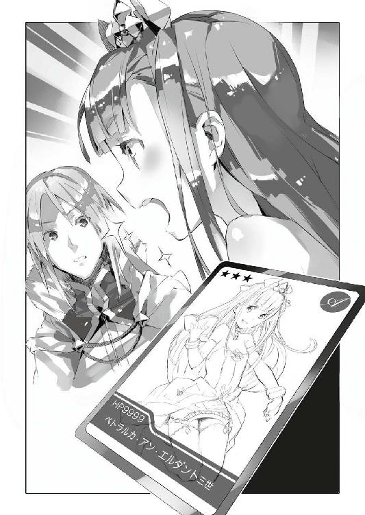
「すでにトレカの試験販売期間は終わりました。これからは大々的に販売していきたいと考えておりますが、重臣の中には、エルビア・ハーナイマンが表紙絵を描くことを、あまり快く思われない方々も多いかと存じます。しかし、彼女の、陛下への敬意は御覧の通り──どうかこのカードの絵をもって彼女の帝国への敵意・叛意のなきことをご理解いただければと」
「......ふむ」
顔を見合わせるペトラルカとガリウス。
実のところ......映画製作のときにもわりと一緒に着替えたりしているので、ペトラルカはあまりエルビアについて悪い印象は持っていないみたいなのだ。ただ、彼女はそうでも、周りの大臣やら何やらはそういうわけにはいかない。
神聖エルダント帝国内で流行の兆しを見せる商品の包装紙......それをバハイラムの密偵という立場であるエルビアが描くことについて、光流さんの言う通り、良い顔をしない者は多いのだろう。
けれどそれも、ペトラルカやガリウスの推薦があれば、話は別。
その根拠に使えるようにと──光流さんはわざわざエルビアにペトラルカの肖像画をカードとして描かせたのに違いない。皇帝陛下やその側近が堂々と推すともなれば、他の大臣やら何やらも面と向かって反論はしにくいだろう。
「............」
僕は溜め息しか出ない。
なんというか......本当に相手の気持ちというか、心理というか、そういうものを光流さんはよく読んでいる。そういう意味では確かに彼は有能なのだ。
「......シンイチ」
「あ、は、はい」
呼ばれて僕は慌てて顔を上げる。
「どうしたのじゃ？ 何やらさきほどから顔色が優れぬ様子──」
「あ、だ、大丈夫、大丈夫だよ」
僕は慌てて首を振り、ついでに両手も振って見せた。
表向きには何が変わったわけでもない。
僕の仕事と生活は──順調すぎるくらいに順調、特に目立った問題も生じていない。むしろ授業や仕事の一部を光流さんに任せるようになってから、多少の余裕もできて、楽になった。
喜ぶべきことなのだろう。
けれど──
「............」
学校の授業と授業の合間。
僕は──ぼんやりと廊下を歩いていた。
光流さんのやろうとしていることは、改めて文化侵略をすることだ。
少なくとも光流さんを送り込んできた日本政府はそのつもりなのだ。
だけど僕のときがそうだったように、文化侵略とは、『これをこうすれば文化侵略になる』という明確な定義がない。それはつまり、文化を持ち込む側、受け取る側の考え方によっていともたやすく変化してしまう。
だから僕はその判断を神聖エルダント帝国側に投げることで、『侵略』を回避することにした。こちらは提示するだけ。選び取る自主性は神聖エルダント帝国の側にあり、後々は供給の安定化をもって、文化侵略ではなく単なる通商行為に──文字通り単なる商社の活動に〈アミュテック〉の仕事を落ち着かせる、それが、僕の出した答えだった。
しかし──だ。
光流さんはその〈アミュテック〉の活動の隙間を縫うようにして、文化侵略のための実験を始めてしまった。
供給の制御と、独自の価値観付与による、飢餓状態の演出と、市場の安定化。
トレカならそれはある意味で当たり前だからこそ──単にお金を儲けるだけでなく『中毒者』を造り出そうとする意図の元にこれを実行されると、洒落にならない効果を生み出すことになる。
元々そういうモノに免疫のないエルダントの人々には過剰な程に、効く。
止めるべき──だと思う。
けれどぱっと見には、光流さんのしていることは、僕のそれと大差ない。
それこそ、現状──違いは、僕と光流さんがどう考えているかだけで、目に見える差はないのだ。だからこそ僕が光流さんのトレカの一件を止めようとしても、周りの賛同が得られるとは考えにくい。
そしてますます光流さんは周囲から『有能なやり手』として受け入れられていく。
そうなると僕は──
「あの......」
陰々滅々とした思考に塡まり込みかけた僕に、誰かが声を掛けてきた。
ふと目を向けると、廊下に一人の女性が立っている。若い──美埜里さんくらいの年齢に見えるけれど、その耳が尖っていることを思うと、彼女はエルフで、見た目通りの年齢とは限らないだろう。いや。着ている服が明らかに生徒のエルフ達とは違う、より小綺麗で落ち着いた感じのものなので......この女性はたぶん、生徒の誰かの家族、場合によっては母親だろう。
「シンイチ先生ですか？」
「え？ あ、はい。僕が加納慎一ですが......」
「初めまして。私、シェイドの母でございます。いつも息子がお世話になっております」
と丁寧な仕草でその女性は頭を下げてきた。
やっぱりお母さんらしい。シェイドの名前にも覚えがあった。よくロイクと一緒にいるエルフの少年である。やや気が弱い感じの少年だが、凝り性なのか、わりと成績は良かったように記憶している。
「どうもご丁寧に」
何にしても年上の女性だ──僕も丁寧さを心掛けてお辞儀を返す。
シェイドの母親は、表情を曇らせながら言った。
「突然で恐縮なのですが......ご相談がありまして」
「相談？」
眉をひそめて問い返す僕に、シェイドの母親は頷いた。
時折、生徒の親御さんが、兄も通っているので、弟や妹も入学させてくれ──などといった『縁故枠』を求めてくることがあるのだけれど、そういう相談でもないようだ。
となると──なんだろう？
「息子のことです」
まあそりゃそうなんだろうけど。
「息子が部屋からほとんど出てこないのです」
「......うあ」
なんというか耳の痛い話題を切り出されて、僕は呻いた。
元自宅警備員の僕としては、他人事ではない。シェイドの母親曰く、『部屋に引きこもってしまい、呼びかけても、曖昧な返事しか返ってこない』とのことだった。
で──彼が用を足しに部屋を出たときに、中に入って見てみると、電源が入れっぱなしになった携帯ゲーム機......ニンジンドー３ＴＳがあったのだとか。
そう。以前、サッカー大会の景品として持ち込まれたものだ。
結局、騎士団とリザードマン・チームの優勝争いになり、リザードマン・チームにソミーＰＬＰと３ＴＳが贈与されたわけだけど、彼らは携帯ゲーム機がどういうものか理解していなかったので、その大半が売りに出され、生徒の親や一部の貴族がこれを購入したのだとか。
シェイドの持っているのもそんな一台だろう。
まあそのこと自体は特に問題はない。
問題はむしろ──
「いくら声をかけても部屋から出てこなくて......挙げ句には、『うるさい』と」
「はぁ......」
そういえば最近、彼の姿を見ていない。
「あのような子ではなかったはずなのですが......」
途方に暮れた様子でシェイドの母親が言う。
「んー......」
３ＴＳと一緒に持ち込んだゲームってそんなに中毒性高かったろうか。
いずれにせよ、原因が３ＴＳならば、ゲーム機を持ち込んだ僕にも責任はあるわけで。
「分かりました」
それに元引きこもりの僕には、引きこもりの気持ちも分かる。
更生の手助けができるかもしれない。
「えっと、じゃあ家に伺えばシェイド君には会えますか？」
「あ、いえ、今は学校にいます」
「......は？」
「学校には毎日ちゃんと行ってるんです」
目を伏せてシェイドの母親は言った。
「ただそれ以外ではずっと引きこもっていて......」
ああ。なるほど。納得。
３ＴＳはバッテリー駆動だけれども、当然、一度充電すれば何日も保つ、というほどの容量はない。熱中して使っていれば、毎日、充電する必要が出てくるだろう。
そして今のところ、この神聖エルダント帝国で、一般の人達が使える充電設備は、この学校にしかない。彼は充電のために学校に通っているのだ。
「でもどこにいるんだろう？」
シェイドの姿を最近、見かけないのは間違いない。
学校に来てはいるけど、授業には出ていない？
となると──
「......分かりました。じゃあまず、シェイド君から話を聞いてみることにします」
「よろしくお願いします」
そう言ってシェイドの母親は僕に、深々と頭を下げてきた。
引き受けたはいいものの──そこからが大変だった。
授業は美埜里さんと、光流さん、そして今日は講師として来ていたミュセルに任せ、僕は学校の中を歩き回った。けれども教室はもちろん、図書室やら、物置やらを見ても、彼の姿を見つけることはできなかったのだ。
「どこだろ......」
だいたいの部屋は見て回った。
それなのに姿がないとはどういうことだ？
首を傾げながらも──僕はもう一度、すでに見て回った場所も捜してみることにした。何かで入れ違いになっている可能性もあるからだ。
何にしても一度引き受けたことだ、放棄するわけにもいかない。
そういうわけで──
「ねえねえ」
休み時間。
僕は、教室で談笑していたエルフの生徒達に声を掛けた。
「シェイドどこにいるか知らない？」
「......シェイドですか？」
僕の質問に、生徒達はお互い顔を見合わせる。
「そういえば最近見てないね」
「......え？ 私見たよ」
「俺も」
二人ばかりがそう答えてきてくれた。
「どこで？」
僕が聞けば、シェイドを見たと言う生徒二人は、思い出そうとするかのように顎に手を添えた。
「えっと、教室で......」
「毎日３ＴＳの充電してますよ。授業始まったらいなくなりますけど」
「さっきも充電してましたね。すぐにどこか行きましたけど」
「本当？」
まずい。入れ違いになったみたいだ。
「どこに行ったか分かる？」
「さすがに、どこに行ったかまでは......」
「分かった、ありがとう」
生徒達にお礼を言い、僕は教室を出た。
ついさきほどまで教室にいたということは、やはり学校の中のどこかにいるのは間違いない。たぶんゲームを邪魔されないところに引きこもっていて、電池が減ってくると、教室にある充電端子のところに来る、というのを繰り返しているのだろう。
「学校で、一人落ち着いてゲームができるところ......」
３ＴＳは、すべての生徒が持っているわけではない。
だから迂闊に教室で遊んでいると、他の生徒からやっかまれて、ゲームを邪魔される、なんてこともあり得る。だからこそシェイドは教室では充電だけをしているのだろう。
一人になれる場所。
一人に──......
「............うーん」
僕は廊下を進み──思いついたその場所で足を止めた。
男子便所の前で。
この建物──もともとの基礎や外装は神聖エルダント帝国様式の建築物なのだけど、中身はというと自衛隊の人達が参加して作り上げている関係で、かなり日本式に寄っている。神聖エルダント帝国ではそもそも、男女の便所を分けるという発想がないみたいだけど、この建物でだけは別扱いなのだ。
もちろん、中の個室も日本式に準拠している。
洋式トイレだったら、蓋を閉めれば椅子代わりにもなる。一時期『便所飯』なんて悲しい言葉が流行ったことがあるけれど......まあ、お弁当食べるよりは、ゲームする方が抵抗がないんじゃないだろうか。僕だって便所で漫画読みふけることあるしね。ほどほどで切り上げないと、足が痺れちゃうけど。
「............」
男子便所に入り、僕は中を見回した。
中に僕以外の姿はない。しかし案の定というかなんというか、奥に、一つだけ扉の閉まった個室があった。
僕は扉に近づき軽く叩いてみる。
「ごめん、もしかしてシェイド？」
人違いであった場合を考慮して、僕は遠慮がちに声を掛けてみる。
待つこと──十秒。返事はない。
もう一度、扉を叩いてみるけれども──やはり結果は同じ。
代わりに......
「......ああ......ミュールたん......」
「......シェイド？」
微かな呟きが聞こえたような気がして、僕は扉にくっつけるようにして耳を澄ませた。
すると──
「......ミュールたんの......ミュールたんの......」
聞こえる。ぶつぶつと何やら呟く声が。
僕の記憶に間違いがなければ、くぐもっているけれど、それは確かにシェイドの声だ。
「シェイド！ シェイドでしょ？ 僕です、加納慎一です。ここを開けてください」
まるで事件現場に立てこもっている犯人を説得する警察みたいだなあ、なんて少し場違いなことを考えつつ、僕はさきほどより強く、扉を叩いた。
けれどやっぱり返事はない。
聞こえてくるのは、引き攣ったように掠れた笑い声と、荒い息。
......やばい。
反射的に僕は思った。
なんかこれ......ちょっと普通じゃないんじゃないか？
「ごめん！」
僕はそう断ってから右手の掌を扉に向ける。
続けて唱えるのは──魔法の呪文。ミュセルに教えてもらって、僕がたった二つだけ使える魔法の片方だ。
「──〈疾風の拳〉！」
暴ッ！
屋内で唐突に発生した烈風が、風が僕の髪を派手に靡かせる。僕の放った〈疾風の拳〉は見えない塊となって扉に激突──めきりと音を立てて、その鍵が弾け跳んだ。
僕は扉に手を掛けてこれを引っ張る。
強行突破された『天岩戸』の向こう側。
そこにいたのは当然、シェイド──
「ミュールたぁん......」
──ではあったのだけれど。
突然のことに驚いた様子も見せず、僕の覚えている気弱げな笑みももちろんなく......憔悴して瘦けた頰に、締まりのない笑みを浮かべながら、３ＴＳを手に持って画面を見つめ続ける、エルフの少年の姿だけが、あった。
僕は焦っていた。
あんなシェイドの姿を見せられて焦らないはずがない。
彼とも話をしようとしたけれど、彼は３ＴＳに夢中で僕の話をまったく聞いてくれる様子がなかった。結局、僕は彼を家に帰すくらいのことしかできなかった。３ＴＳを取り上げることも考えたのだけど──彼が暴れるのでそれもできなかった。
完全に中毒だ。
しかも......彼が夢中になっていたのは僕が持ち込んだゲームではなかった。
エロゲなのだ。要するに十八禁のエッチゲーム。
もちろんここは神聖エルダント帝国──エロゲに対して十八禁の縛りがあるわけではないし、エロゲそのものは、以前にも、少数だけど持ち込んだことがある。
僕はエロゲそのものは別に悪でも何でもないと思っている。エロゲの原画師だった母の仕事の関係で、うちにはサンプルのエロゲも何本かあって、これをこっそり親に隠れて楽しむくらいのことは僕もやっていた。
だから問題は、それがエロゲであるということそのもの、ではない。
ゲーム内容──というか形式（タイプ）が問題なのだ。
ゲームと一口に言ってもさまざまなものがある。
僕が以前持ち込んだエロゲは、いわゆるアドベンチャー・ゲーム系、あるいはノベルゲー、紙芝居ゲーとも言われる代物だ。プレイヤーは各所で選択肢を選んで物語内容に多少干渉は出来るけど、基本的には漫画やアニメ、小説のように、事前に用意されている物語をなぞることになる。
逆に言えば、それは『なぞりきってしまえば終わる』のだ。
極論、ぶっ通しでやれば、どんなにじっくりやっても、三日かそこらで終わる。結局のところそれは多少の自由度があるだけで、漫画やアニメ、小説と大差はない。
つまり終わりがあるのだ。
だけど......ゲームの中には、『終わり』という概念そのものがないものもある。
何周でも繰り返せるゲーム、乱数などによって常に内容の一部が変化し続け、その気があれば延々とプレイし続けられる、というもの。ネットゲームにはその手のものが少なくないけど、独立型（スタンドアロン）のゲームでも、そういうのがある。
特にエロゲの場合、ヒロインを自分で設定出来るような──顔立ちや身体つきを自由自在に設定出来、台詞も大量に用意されたサンプルの中からランダムに選び出すようなシステムだと、やり込み要素が半端なくなるというか......プレイそのものが延々と堂々巡り（ループ）してしまう場合も珍しくない。
要するに、自分で設定した『理想の彼女』と際限なくきゃっきゃうふふして、現実に戻ってこない、それどころか深くハマりすぎて『現実なんてクソゲーだ』などと堂々と言い放つ──なんてことにもなりかねないわけだ。
そして前述の通り、神聖エルダント帝国の人間にオタク文化は過剰に効く。
ネタが何であれ、妙なハマり方をすると、その副作用も半端ない。
そして実害が生じれば──当然に非難される。
さらにそれがエロゲ、即ち下ネタ関係のエンターテイメントだとすれば、世間的な風当たりはなおさらに強くなるだろう。そしてそうした否定的な感情がエロゲだけでなく〈アミュテック〉そのものに対して向いてしまった場合──それは拒否感となってヒステリックに暴走してしまうことがある。それを僕は『憂国士団』の一件で嫌というほどに思い知らされていた。
そもそも初期に持ち込んだ数本も、手違いのようなもので──以後、僕はエロゲに関しては一切、こちら側に持ち込んでいない。持ち込むとしたらもっと後、こちら側でのオタク文化が『普通のもの』として根付いた後だと考えていた。
だけどいったい──誰が？
もちろん、日本側の人間だろう。
そして日本の人間と言えば、こちらの世界には限られている。
僕、美埜里さん、的場さん、光流さん、そして自衛隊の面々。
とりあえず美埜里さんはＢＬ本を持ち込んではいるようだけど、あれは自分の趣味で、精々、ガリウスに見せて喜んでいるくらいだ。彼女がエロゲを持ち込んで、こちらの少年少女に売ったり貸したりするとも思えない。
では的場さん？ これもない。
彼はそもそもオタク系のエンタメにとことん疎い。下手をすると彼もエロゲの存在自体をよく知らない可能性がある。少なくとも僕と出会うまで、エロゲンガーって言葉を知らなかったわけだしね。
では駐屯地の自衛官？
こちらを否定する要素はない。前述の通り、『定期便』で私物を持ち込んでいる自衛官は多いし、その中にエロゲを入れている場合だってあるだろう。
ただ──
「......あ」
僕は『定期便』で思い出した。
あの──光流さんの荷物。
段ボール箱の中にぎっしり詰まっていたメモリーカード。
「そっか......」
そもそもエロゲを持ち込むとして、媒体はどうするのか？
もちろん、専用のカートリッジや、同じく専用規格の光学ディスクは無理だ。そもそもＰＬＰのソミーも３ＴＳのニンジンドーも、自分のところのゲーム機でエロゲを作ることを認めていない。
だからどちらのゲーム機にも、公式にはエロゲは存在しない。
しかし......最近の携帯ゲーム機には、カメラが付いていたり、音楽プレイヤーとしての機能があったりして、そういう場合の画像データや音楽データをやりとりするためのメモリーカード用スロットが存在する。ダウンロード販売されたゲームそのもののデータもこのメモリーカードに記録される。
そこにパソコンで作ったプログラムを入れてしまえば、専用規格のカートリッジやディスクを用意しなくても、３ＴＳ用、ＰＬＰ用の同人エロゲを作れちゃう、という寸法だ。
もし光流さんの持ち込んだあのメモリーカードがそのためのものだったとしたら？
「まずい......まずいよ」
僕は呟きながら教室に向かう。
僕の脳裏には、憔悴した顔つきになりながらも、３ＴＳを手放そうとしなかったシェイドの姿がこびりついている。あれはどう見ても尋常じゃない。どこかの国じゃネットゲームをぶっ通しで数日間やり続けて死んだ、なんて人もいるようだけど、シェイドがそうなってもなんらおかしくないだろう。
当然、その、エロゲってことは、まあ、プレイしながらアレな行為にも手を染めちゃうわけで。ただ徹夜でプレイってだけではない。以前どこかで読んだ話だけど、猿に自慰行為を教えると、ぶっ倒れるまでこれを繰り返してしまう──らしい。それと同じで、免疫もなければそれを『悪いこと』『恥ずかしいこと』と決めつける外圧もない環境では、歯止めがまるで効かない。
結果──もしあのタイプのエロゲが何人もの生徒にばらまかれれば、間違いなく倒れるまでこれを手放さない者は出てくるだろう。以前、僕の生徒達がオタク文化に飢えてゾンビみたいになっていたのと同じく、慣れていないがゆえに、抑制が効かないのだ。
またあのときのようになってはいけない。
「やっぱり──早い段階で彼を止めておくべきだったのか......」
僕は唸るように呟く。
もちろん『彼』というのは光流さんのことだ。
「でもどうしたら......」
光流さんを見つけるべく、僕は学校の中を歩いていく。
もう様子を見ている場合なんかじゃない。トレカはともかくとしても、エロゲに関しては明らかに非公式、『商売の範疇』なんて嘯くのは許されないはずだ。
やがて──僕は教室の窓越しに、中にいる光流さんの姿を見つけた。
「光流さ──」
僕は教室の扉を開き、エロゲのことを問い詰めようとして──
「............」
そこで止まった。
光流さんは愉しげだった。
教室で生徒達に囲まれて、笑顔で会話している。光流さんの傍にはミュセルと美埜里さんの姿もあった。話の内容までは分からなかったけれど、何かの話題で盛り上がっているみたいだ。
皆......愉しそうだった。
光流さんを問い質しに来た僕が、疎外感を感じてしまうほどに。この空気を迂闊に壊すことは躊躇われたのだ。
そもそも......今ここで僕が光流さんの行為を糾弾すれば、どうなる？
生徒達は彼によく懐いているし、ペトラルカだって彼のことを気に入っているようだ。ミュセルやエルビア、美埜里さんも、コスプレで彼とはいつも愉しそうに話をしている。誰かが彼を責めれば庇う者も出てくるんじゃないか？
（僕の代わりに送り込まれた文化侵略の尖兵......）
それはつまり、僕の立場を根こそぎ奪ってしまうということではないのか。
もし僕が光流さんと対立すれば、皆はどちらを擁護する？
元引きこもりの駄目オタクで、誤解されるような発言も多い僕か。
コミュニケーション能力に優れ、頭も切れ、見た目も綺麗な光流さんか。
「............」
情けないと思う。
だけど僕は恐くなってしまった。
『加納慎一、お前はもう要らない』と──言われるのではないかと。
恐くてその場から動くことすらできなくなってしまった。
「──旦那様」
ふと戸口で固まっているこちらに気付いて、ミュセルが微笑んでくる。
「どうなされました？」
彼女の台詞で他の生徒達や光流さん、美埜里さんも、僕に気付いて──話を中断してこちらを振り返ってくる。そんなはずはないと思いつつ、僕は、彼らが『せっかくいいところだったのに邪魔すんなよ』と文句をつけているような気がして──ひどくいたたまれないような気持ちになってしまった。
だから──
「あ、いや、別に......」
反射的に首を横に振り、僕は教室から離れた。
「旦那様？」
ミュセルの怪訝そうな声が追いかけてくるが──僕はそれ以上、そこに留まることはできなかった。
屋敷に戻って──夕食までの短い時間。
美埜里さんが自室に戻り、ミュセルが厨房に行ったのを見計らって、僕は廊下で光流さんに話し掛けた。護衛役の美埜里さんは最近、光流さんの方についていることが多いので、僕と光流さんだけという時間が実は少ないのだ。
「──光流さん」
「はい？ なんでしょう」
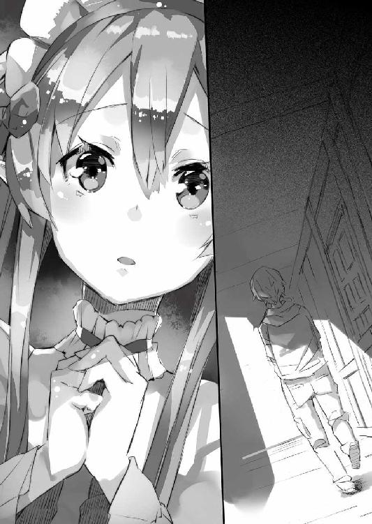
笑顔で光流さんは僕を振り返ってきた。
僕はかなり険しい表情をしているはずなのに──彼はまったく笑みを崩さない。
余裕か。それとも自分が糾弾されるなんて、想像もしていないのか。
僕は、自分が、象に挑む蟻になったかのような気分だった。真正面から何をしても光流さんには勝てない。そんな、最初から勝負を諦めるような情けない気持ちが、僕の頭のどこかにはあった。
けれど──
「少し話があるんだけど」
数秒の躊躇の後、なるべく冷静な声を心掛けて僕は言った。
「あの３ＴＳのソフトは何？」
「え？ なんのことでしょうか？」
「とぼけないで」
僕は上擦りそうになる声を抑え込むのに苦労した。
「同人エロゲをメモリーカードに入れてシェイドに渡したのは、君なんだろ？」
「ごめんなさい。なんのことかさっぱり──」
「とぼけるな」
僕は相手の台詞を押しのけるように言った。
「前に、君あての荷物にメモリーカードが大量に入っているのを見たよ。アレはつまり、エロゲ販売のための媒体、『器』だったんでしょ。そうでもなきゃ、あんなに同じメモリーカードをたくさん、買い込んで持ち込む必要はない。おおかた、自分の私物のパソコンに大本のエロゲを詰め込んでおいて、そこからカードにコピーして配布するつもりなんだろ」
「............」
光流さんは黙り込んだ。
その綺麗な顔から──ゆっくりと笑みが溶けて、消える。
僕の目をまっすぐ見返し、いや、睨み返しながら、光流さんは肩を竦めた。
「で？ そうだったら、何ですか？」
そう問うてくる光流さんに焦った様子はない。
むしろ開き直るかのように両手を腰に当てて、溜め息をつきながらこっちを見ている。『やれやれ面倒臭いことになった』とでも言いたげだ。
「今すぐやめてほしい」
「どうしてですか？」
平然と光流さんはそう問うてきた。
「皆──楽しんでくれていますよ？」
「ちょっと待って。皆......!?」
シェイドだけじゃない？
いや。シェイドのことだって僕は彼の母親が相談に来たから知っただけで、自分では気付いていなかった。そもそも貴族から庶民まで生徒の素性はそれぞれで、しかも、揉め事も頻繁に起こるため、何日か顔を見せない生徒、というのも珍しくはないのだ。日本の義務教育と違い、学校の欠席が『良くないこと』という認識も薄い。
だけどもし──彼ら、欠席した生徒の多くがシェイドと同じ状態であったとしたら？
「幾つ配ったんだ!?」
「売ったのは十個ですね。まだ試験段階なので」
と光流さんは言った。
「十個......！」
「よほどハマっちゃったんでしょうね。十人中六人は、翌日から充電しているとき以外は、教室で見かけなくなりました。四人は一応、普通に授業に出てきますけど」
それでも過半数だ。
とんでもない中毒性と言える。
「まずいよ。駄目だあんなことを──」
シェイドは明らかに体調を崩していた。
そしてそれでもなお──３ＴＳを手放そうとはしなかった。
前述の通り、彼が持っていたのは、『やり込み要素』満載のタイプだ。シナリオで見せるタイプのゲームはだいたい、お話を一通り見てしまえば──複数分岐してマルチエンドする場合でも、その選択肢を一通り潰してプレイしてしまえば、そこで終わる。
けれども、シミュレーション要素を多分に含んだタイプのゲームは、なかなか終わりが見えない。好みのキャラを自分で設定して、延々、そのキャラクターと擬似デートや擬似エッチに耽溺し、その耽溺率に従って、新しいグラフィックが増えるという仕組みだ。
こうなると、もう、本当に飽きるまで手が離せなくなる。
「あんなゲームを......」
「貴方もエロゲは持ち込んでいるんでしょう？」
光流さんは笑いながら言った。
「貴方は十八歳？ 違いますよね？」
「そ、それは......」
確かに僕も十八歳未満だ。
エロゲをプレイしたことがあると、堂々と言える立場ではない。
しかし......
「私は皆に楽しんでほしい、楽しんでもらえるものは何か、そう考えてアレを持ってきただけ。しかもデータだから、漫画本やアニメのＤＶＤみたいに、物理的に、超空間通路を通って運び込む必要すらない。媒体のメモリーカードを最初に売っておけば、後は、データを売るだけでいい。複製はパソコンで楽々。こんなにいい商売はないでしょう？」
「商売って──君はシェイドの様子を見てないから、そんなことが言えるんだよ！」
「様子？ 何？ オナニー教えられたサルみたいに、延々とエロゲにハマって体調不良になるくらいってこと？」
「！ 知ってるの？」
「想像はつきますよ」
と光流さんは肩を竦めた。
「まさか、何人かはああなるって、分かってて......？」
「刺激に慣れていない人達に、いきなり、やり込み要素満載のエロゲを渡したらそうなるだろう、くらいのことは想像がついて当然でしょう？」
「............」
そう。そうなのだ。
以前の──僕が普通のオタク作品を持ち込み始めたときだってそうだった。
刺激に慣れていない相手には、軽い刺激でもものすごく『効く』──結果として禁断症状が出るほどに。だけど普通の漫画や小説、アニメ、といったものならば、一度目を通してしまえば一区切りつく。エロゲと違って、別のことにまで体力を使ったりはしない。
それに──
「じゃあ分かっててやったの？」
「もちろん、想像はついたから実験したんです」
と悪びれる様子もなく光流さんは答えた。
「じゃあもういいだろ、エロゲは──」
「大成功ですね。現状、中毒率は五割を超えてます。これはいい商売になりますよ」
と光流さんは言った。
嗚呼──彼は本当にこれを商売としか思っていないのか。
売れればいい、売れれば正義、だと。
「商売って──もうそんなレベルの話じゃない！ カードだってそうだよ！」
「カード？」
「もうみんな、普通には楽しめなくなってる！」
洒落にならない金額が動いている。
そしてそれはもう──小規模とはいえ、自ら動いて市場を形成してしまっている。
「ここは一度回収して、様子を見るべきだよ！」
「何故？」
きょとんとした表情で光流さんは首を傾げた。
「みんな楽しんでる。〈アミュテック〉は営業成績が上がる。限定的だけれど日本経済も潤う。私達の評価も上がる。いいことづくしじゃないですか？ それをわざわざやめる？ どうしてですか？」
「君は──商売のことしか、金のことしか考えてないのか！」
「他に何を考えろと!?」
何か彼の癇に障ったのか。
光流さんは不意に語調を荒くして言った。
「エンタメ商売、オタク業界なんて、そんなものでしょ!? エロければなんにでも飛びつく消費者という豚に、彼らが望むものを与えて何が悪いんですか!? ストーリーなんかどうでもよくて、ただエロければなんでもいいくせに！」
「............！」
一気にまくし立てられて──僕は言葉に詰まった。
何なんだ、この光流さんの憎らしげな物言いは。
まるで......オタクのくせにオタクを馬鹿にするような言動だ。
近親憎悪なのか。
それとも実は綾崎光流という人物はオタクでもなんでもなくて......むしろオタクを嫌い馬鹿にしているのか。別にオタク以外がいっさい漫画を読まない、アニメを見ない、というわけではないだろう。光流さんの場合、両親がオタクだと言っていたから、たまたま、そういう形で両親に付き合ってオタク作品に詳しくなっただけ......とか？
「消費者のほしがるものを持ってくるのは、売る側としては間違ってないでしょう!? じゃあ何？ 貴方はそういうものを作ってる会社が悪いとでも言うんですか？」
「ち......違......」
僕はそんなことを言いたいわけじゃない。
だけどそれをどう言葉にすればいいのか分からなかった。
「......ふん」
何も言えなくなった僕を見て、光流さんが唇の端を歪める。
細められた目が僕を──嘲るように斜めから見つめていた。
「......だいたい貴方、何様のつもりなんですか？」
「え......？」
「〈アミュテック〉総支配人？ ええ、そうですね。でもいつまでその立場にいられるでしょうね？」
「それ、どういう──」
「どうして私が来たか。まだ気付いていないんですか？」
「え......？」
どういう、意味だ？
光流さんはずい、と顔をこちらに近づけてくる。
反射的に身を逸らし遠ざかろうとする僕の耳元に──彼はまるで内緒話でもするかのように囁いてきた。
「いなくなった貴方の代わりをするために、私は選ばれた」
「いなくなった......？」
過去形？ なんで？
「私が〈アミュテック〉の二代目総支配人になるはずだった。それなのに貴方がのこのこ戻ってくるから。だから急遽、補佐役って名目になったわけ。まったく気付かなかったんですか？」
「............！」
顔を覗き込まれ、僕は息を吞む。
女の子と見間違うような、綺麗な顔に間近で見つめられているというのに......ドキドキするどころか、自分の顔から血の気が引くのが分かる。今の僕は蛇に睨まれた蛙だ。
「いざ来てみれば、貴方も大したことなかったですね。ただのオタクってだけで。きちんと商売としての考え方ができる私の方が、総支配人としてぴったりでしょう？」
くすくすと、光流さんが笑う。
「一度は反抗したうえに、大して利益を上げていない貴方と。短期間で試験的とはいえ確実な実績を上げた私と。日本政府はどちらの味方をすると思います？」
「............」
言うまでもない。
光流さんの方だ。
そう......僕が一度バハイラム王国に攫われた時点で、日本政府は、交代要員として光流さんを用意していたのだ。むしろ日本政府としては僕が帰ってこない方が良かったのだろう。積極的に僕を排除すれば、神聖エルダント帝国との関係に亀裂が入りかねない。けれどあくまで『事故』──少なくとも日本政府の手で僕が排除されたのではないのだとすれば、むしろ大手を振って『代わり』を送り込める。
日本政府は僕がバハイラムに攫われたと知って大喜びしただろう。
だが僕は帰ってきた。ミュセルやエルビアや美埜里さんやロイク、ロミルダのおかげで──無事に帰ってきてしまった。そして日本政府が光流さんに対して用意した二代目総支配人の座は宙に浮いてしまうこととなり......仕方なく彼を僕の補佐役としてエルダントに送り込んできたのだ。
おそらく僕のときの教訓があるから、光流さんの人となりは充分に調べられたうえでのことだろう。
彼はあくまで日本政府の意向通りに動く。
後は──機を見て僕と彼の立場を入れ替えてしまえば良い。
ペトラルカやガリウス達が僕よりも光流さんを重要視するようになれば、特に揉めることもなく〈アミュテック〉総支配人の首のすげ替えは完了する。そのためにペトラルカの趣味嗜好はあらかじめ的場さんか誰かを経由して情報を入手し、対策を練ってきたのだ。
「............」
僕の脳裏を過る教室の風景。
光流さんを囲んで愉しそうに談笑する皆。
もし......僕がいなくなっても、皆は、光流さんがいれば問題ない？
いや。それどころか。もし僕か光流さんかを選べと言われたら、何人が僕の方を選んでくれるだろう？ ひょっとして過半数が──いや皆が光流さんを選ぶのではないか？
そんなことはない。
否定しようとして──けれど一度頭の中に浮かんだ嫌な想像は消えなくて。
格好悪いことに、僕は自分の身体が震え始めるのを感じていた。
「話はこれで終わりですか？」
光流さんが微笑して問うてくる。
その笑みがまるで勝ち誇るかのように見えたのは、僕の気のせいではないだろう。
「私──夕食まで部屋で休みますね」
光流さんはそう告げて僕に背を向けると悠々と歩き出す。
僕は──その背中をただ呆然と見送るしかできなかった。
光流さんと同じ空間にいることに耐えられなくて──僕は夕食を終えて早々、自分の部屋に戻ってきた。
食欲もなくて夕食もあまり手をつけてない。作ってくれたミュセルには悪いけれど、そもそも何が出たのかすら覚えていない。とりあえずフォークとスプーンで二口三口機械的に口に運んだだけで、味なんか全然分からなかった。
情けない......
「............はぁ」
ベッドに寝転んで僕は溜め息をついた。
どうすれば良いのか見当もつかない。
以前──日本政府に喧嘩を売るような形になったときには、まだ正面からの対立に近くて身構えることもできた。ペトラルカはもちろん、神聖エルダント帝国側の皆が、僕の味方になってくれた。心のどこかで僕はそのことに勇気づけられていたんだと思う。
けれど今は......どうだろうか。
実を言えば光流さんは『敵』ですらない。
彼はあくまで日本政府の望んだ形で〈アミュテック〉を運営することだけを考えていて、僕を積極的に排除するつもりはない。そのつもりがあればもっと露骨にいろいろする機会はあったはずだ。そしてそれならば僕も、対抗することはできたかもしれないと思う。
だけど彼は本当に、僕を、敵視すらしていない。
問題外なのだ。
彼が頑張れば頑張るだけ、結果として僕は追いつめられる。ただそれだけのこと。
彼の行為を問題視して糾弾しようにも、僕も立場的にあまり強く言えない部分が多い。
「もし僕が総支配人の立場から外されたら......？」
口に出して呟いてみると、より現実的な可能性であるようにも思えてきた。
日本政府は僕を殺す？ いや。いくら光流さんの方が受け入れられるとしても、僕を殺すような強硬策はもうとってこないだろう。さすがにそれは神聖エルダント帝国側に与える印象が悪すぎるはずだ。
だとすると、単に、用済みとして日本に連れ帰られて放逐される......？
そこまで考えて、僕はようやく思い至った。
日本に帰れる。
もともと僕は拉致されてここに連れてこられたのだ。そして機密保持を理由に日本に帰ることを許可されない。ひょっとしたら親は心配してくれているかも、と思うことはたまにあったけれど、僕のような穀潰しがいなくなってむしろせいせいしているかも、と思うこともあって、深く考えないようにしていた。
............って。
駄目だ、思考がどんどん暗い方向に落ち込んでいく。
僕は改めて溜め息をつく。
そのとき──
「............？」
扉を叩く音が聞こえた。
僕はベッドの上に寝転がったまま顔だけを動かしてそちらを見る。返事したり、起き上がって身構える気力は正直なかった。
しかし──
「あの......旦那様、いらっしゃいますか？」
僕が黙っていると、遠慮がちな口調で声が投げ掛けられてきた。
「ミュセルです」
「あ──」
僕は反射的に跳ね起きていた。
「あ、い、いるよ！ 入っても大丈夫！」
......って。返事したり起き上がる気力がなかったんじゃないのか、加納慎一よ。
自分でも現金さに呆れを感じつつ、僕は手早く服の乱れを直す。すると恐る恐るといった感じでドアノブが回るのが見えた。
「旦那様──シンイチ様？」
細めに開いた扉と壁の隙間から、おずおずとミュセルが顔を覗かせる。
僕が頷くと、彼女は扉を押し開いて、部屋に入ってきた。
「......どうしたの？」
部屋に入ったミュセルは──しかし後ろ手に、扉を閉めたきり、その場から動こうとしない。ただじっと見つめていると、何か躊躇するような感じで、俯き、もじもじとしているのは分かった。
「あの......その......差し出がましい......かもしれませんが......」
頰を赤く染めながら──やがて意を決したかのように、ミュセルが顔を上げる。
「何か、ありましたか？」
「え......？ な──なんで？」
僕は思わずそう聞き返してしまう。
間抜けな話だ。よく考えれば、出された夕食にほとんど手をつけずに部屋に引っ込めば、体調不良を心配するのが普通だろう。ミュセルの場合はむしろ自分の味付けが失敗したのではないかとか、そっちの方を──見当違いにも──まず心配しそうだけど、それは、さておき。
「そ、その、最近、シンイチ様......あまりお元気がないみたいで......特にさきほどは、本当に......お辛そうに見えたので......」
そう言いながらミュセルはまた顔を伏せた。
何が恥ずかしいのか、彼女は耳まで真っ赤で──
「............」
僕はそんなミュセルを、ぽかんと見つめていた。
さきほどの夕食はさておき、それまでは可能な限り、僕は普段通りに振る舞っていたつもりだったのだけど。ミュセルにはお見通しだったらしい。
それにしてもわざわざ心配して、様子を見に来てくれるなんて──
なんだか彼女の優しさが嬉しくてたまらず、僕は自分の目が潤むのを感じた。
やべ。さすがにここで泣くとか恥ずかしい。
「......ミュセル」
僕は何度か瞬きして目の潤みを散らすと──改めてミュセルの方を見て言った。
「少し、いい？」
僕は自分の隣の、ベッドの空いたスペースを軽く手で叩いた。
それを見たミュセルは、一瞬、呆然としていたみたいだけど──
「はっ......はいっ......」
何故かぎくしゃくした足取りでベッドのところまで歩いてくると、こわごわといった様子で僕が叩いたところに腰を下ろす。そのまま彼女は祈るように目を閉じて胸元で両手を合わせていたけれど──
「......少し聞いてほしいんだ」
「え......？」
とミュセルは僕の言葉に、驚いた様子で瞬きする。
「駄目かな。話をしたいっていうか......僕の話を聞いてほしい。それだけでいいんだ」
「え、あ、い、いえ、その、はい、えっと、大丈夫、です！」
がくがくと何故か焦った様子で頷くミュセル。
いったい何なのだろう。先にも増して真っ赤だけど──まあそれはさておき。
「実は──」
僕は光流さんが来た日から今日までの、僕が感じてきたすべてをミュセルに話した。
トレカのこと。エロゲのこと。日本政府の思惑。光流さんの思惑。
ひょっとしたら、光流さんのことを悪く言う僕に、ミュセルが幻滅するかもしれない──そんな恐怖もあったのだけど。僕はそれならそれで、僕が悪かったのだと納得することができるような気がした。日本政府に反抗するのを決めたときもそうだったけれど、僕にとって、ミュセルはこの世界の代表であり象徴であり──彼女がどう感じどう思うかは、一つの基準なのだった。
僕は抱え込んでいたもろもろを、洗いざらいミュセルに吐き出した。
エロゲの説明や、シェイドの状態の話になると、彼女はまた頰を赤らめて恥ずかしがっていたけれど、最後まできちんと僕の話を聞いてくれた。途中でどう思ったかは分からないけれど、少なくとも彼女は最後まで僕の愚痴にも等しい話に付き合ってくれたのだ。
そして──
「ヒカル様が──」
と少し驚いたような表情を浮かべていたミュセルだけれど、ふと何かに気付いた様子で口元を押さえて声を漏らした。
「あっ......」
「どうしたの？」
「そういえば......その......」
若干の躊躇の後──ミュセルは話してくれた。
「シンイチ様がバハイラム王国に連れ去られたときに......ニッポン政府は最初から、シンイチ様が連れ去られるのは予定の内みたいに考えていたと......」
「ああ。やっぱりそうか」
僕は溜め息をついた。
バハイラムに僕が誘拐されたのは──どうやら日本政府がそうなるように仕向けた、つまり情報を故意に漏洩させてバハイラム側が僕に興味を持つように誘導した、ということであるらしい。だから交代要員である光流さんも、それ以前から用意されていたのだ。
おそらくは......僕が日本政府に反抗した直後から。
日本政府は今度こそ自分達に従う人材を求めたのだろう。
だから──
「............」
僕は光流さんの、あの近親憎悪とも言うべきオタクを馬鹿にした発言を思い出す。
本当に彼はうってつけだ。
オタク作品に詳しい反面、オタクという消費者を嫌い憎んですらいるかのようで。だからオタク作品を文化侵略に使うことにもまるで抵抗がない。むしろそうやって消費者を自分の掌の上で踊らせるということに優越感さえ覚えているんじゃないだろうか。
不愉快だ。ものすごく。
でも──現実に光流さんは皆の信頼を得つつある。少なくとも僕にはそう見える。
ただのオタクでしかない僕は、それを指をくわえて見ているしかないのか。彼に迂闊に対抗しようとすると、僕も同じようなことをせざるを得なくなる。『売り上げを競う』『売れたものが正義』という発想になった時点で、それは、光流さんと同じだ。
では......どうする？
「僕はどうしたらいいんだろうね......」
話を聞いてくれるだけでいい、なんて言いながら、つい最後に僕はそんなことを口にしてしまう。たぶん、僕は相当弱っているのだろう。なりふり構わないっていうか──
「僕はもう必要とされてないんじゃないかって──」
「そんなことないです！」
僕の声を搔き消すように──悲鳴みたいな声でミュセルが叫んだ。
「あ、す、すみません」
僕が驚いて黙り込むのを見て、彼女もまた恐縮して俯く。
深い考えではなく、咄嗟に出ちゃった言葉なのだろう。だけどそれは──だからこそそれは、噓偽りない彼女の心からの言葉とも言えるわけで。
「私......難しいことはよく分からないですけど......」
そう言い置いてから、またぽつぽつと躊躇いがちの口調でミュセルは続けた。
「ヒカル様がしていることの是非も、私には分からないですけど......でも、シンイチ様は私に......私達にとってとても大事なお方です。必要ないなんて、そんなこと絶対にないです......それなら、ミノリ様だって、ロイク様も、ロミルダ様も、バハイラムまでシンイチ様を助けに行こうだなんて思いません......！」
とミュセルは膝の上で両の拳を握りしめて言った。
「陛下だって......力をお貸しくださって......エルビアさんも、途中からはむしろ積極的に......」
「............そっか。そうだね。ごめん」
僕は素直にそう謝った。
そうだ。別に僕が〈アミュテック〉の総支配人の座から引きずり下ろされたって、そのことで皆が僕を嫌いになるってわけじゃない。一か零か、敵か味方か、なんて両極端しかない考え方は視野を狭める。光流さんが皆に気に入られたから、自動的に僕が嫌われる、というわけじゃないんだ。
こんな簡単なことも分からないくらいに、僕は追いつめられていたのか。
恥ずかしい......
「それに......もし、ヒカル様がシンイチ様の『敵』で......万が一、ミノリ様やエルビアさん、陛下が、ヒカル様の味方になったとしても、私は......」
ミュセルが──何故か縋るような目で僕を見る。
今は元々、僕が勇気づけられているような立場なのだけれど。
「私は、シンイチ様の味方です。そこだけは変わりません、絶対に」
むしろ──『味方でいさせてください』そんなふうにすら聞こえる口調と声音だった。
嗚呼。
僕は心の奥底がざわめくのを感じる。
そうだ。あのときと同じだ。
ミュセルが僕の味方でいてくれるなら、僕は、頑張れる。
「ミュセル......」
ただただ嬉しくて、僕は口を開いた。
気持ちは伝えないと意味がない。
「ありがとう。本当にありがとう」
他に何を言えばいいのか分からなくて、陳腐な言葉しか出てこないけれど。
「いえ、そ、その、とんでもない──私はただ......」
そこまで言って彼女は言葉に詰まる。
僕とミュセルは二人並んでベッドに座ったまま、しばらくそうしていたけれど──
「なんとか頑張ってみるよ。やっぱりこのままはまずい」
「はい。私にできることがあったらお手伝いさせてください」
「うん。そのときにはお願いするよ」
とりあえず笑ってそう言えるくらいに元気が出てきた。
それを証するかのように──
──ぐううううう。
「............」
「............」
分かりやすい腹の虫の音に、僕達は一瞬、顔を見合わせて......それから笑う。
どうやら食欲が戻ってきたみたい。
「私、お夜食作ります」
「あ、じゃあ食堂に行くよ」
「いえそんな......お部屋まで運びます」
「いや、その、なんていうか」
僕は人差し指の先で頰を搔いて言った。
「一緒に行きたいんだよ」
しばらく一緒にいたい。
さすがにそんな露骨なお願いを口にする勇気はなくて。
不思議そうに瞬きしているミュセルに、僕は照れ隠しも兼ねて言った。
「美味しいもの、お願い」
「はい！」
笑顔で大きく頷くミュセルは──本当にもう、その場でのたうち回りたくなるくらいに、可愛かった。
で──その後。
ここから先は僕ではなく、少しだけミュセルの視点になる。話の時刻としては夜中だけれど、彼女が翌日の朝に僕を起こしに来てくれた際に、教えてくれたのだ。
即ち......
「──あの」
扉を二度、軽く叩いてからミュセルは言った。
「ヒカル様。お茶をお持ちしました」
「開いています。入って」
すぐに部屋の中からそんな返事が返ってくる。
失礼します──といつもの様に断ってから、ミュセルは茶器一式を載せたワゴンを押して光流さんの部屋に入った。光流さんは夕食の後......だいたい三時間後辺りでお茶を飲む習慣があるとかで、ミュセルはいつもその頃合いを見計らってお茶を届けてくれるようにと頼まれている。
光流さんは部屋の中で、私物のノートパソコンに向かって何か作業をしていたけれど、内容を隠すかのようにぱたんとこれを閉じて、ミュセルに向き直る。
「ありがとう」
「いえ──」
これもいつものやりとり。
ミュセルは茶器にお茶を注ぐと、お茶請けの焼き菓子と一緒に、光流さんの執務机の上に置く。光流さんが『仕事中』ということで、極力その邪魔をしないようにと──いつもならばミュセルはそのままワゴンを押して退出する。
だけど......
「あの......ヒカル様？」
ミュセルはふと立ち止まって声を掛けた。
「なんですか？」
光流さんは首を傾げてミュセルを見る。
「いつも遅くまでお仕事をしておられるのですね......」
ミュセルはノートパソコンの方を見ながら言った。
いつもお茶を持って来ると光流さんはそのパソコンで何か作業をしている。
僕はその時々によって自室で漫画を読んでいたりアニメを観ていたりするし、美埜里さんも屋敷の中では護衛としての仕事は各種警報器に任せて、ＢＬ本読んだりやおい本読んだり腐女子向け同人誌読んだりして遊んでいることが多い。
それに比べれば光流さんは仕事に熱心すぎる印象があった。
「差し出がましいかもしれませんが......その......程々でお休みになられないと、お身体に障るのではないかと......」
閉じられているので中身はもちろん、ミュセルには見えない。なので、ゲームか何かをしていたという可能性もあるのだけれど──光流さんの様子からして、遊んでいたようには見えなかった。
実際......
「まあ、そう──ですね」
光流さんは微苦笑を浮かべて言った。
「私はこれしか能がないので。つい」
「......え？」
意外な言葉にミュセルは眼を瞬かせた。
元々ミュセルがいつもと異なり、光流さんに声を掛けたのは、僕との話があった後で、綾崎光流という人物の思惑が気になったから......だとか。
ミュセルには光流さんが『悪い人』には思えないという。
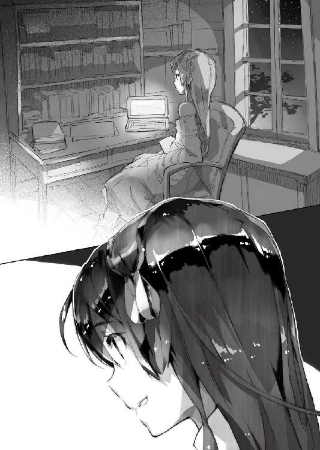
むしろ僕──加納慎一と同じく、ミュセルにもエルビアにもブルーク、シェリスにも、混血児だから、亜人種だから、と見下すようなこともなく、非常に優しく接してくれる。もちろんそれは何らかの下心から、ということもあり得るのだけれど、ミュセル達のような使用人にことさらに気を遣っても、別に得るものはないだろうから──これは打算ではないのではないか。少なくともミュセルはそう思ったそうだ。
僕の時と同じように。
だからこそ、そんな彼が僕を追い出そうとしている......それが本当だとして、では彼の思惑はどこにあるのだろう、とミュセルは不思議に思ったそうだ。確かに僕を追い出したいのはあくまで日本政府であって、綾崎光流個人ではない。
考えてみれば──彼の方から、僕に対して積極的に敵意や害意を向けてきたことはない。トレカやエロゲのことで僕が彼を責めたから、売り言葉に買い言葉な感じで、口論ぽいことにはなったけれども。
「能がないだなんてそんな」
ミュセルは慌ててそう言った。
「皆さん、ヒカル様はすごいと......」
「ああ。それはそうでしょう」
と光流さんは平然と言った。
「皆に『すごいと言ってもらうこと』しか能がないんですよ、私」
「......？」
意味が分からずミュセルは黙り込んでしまう。
そんな彼女を見て微笑みながら──
「いえ。要するに私、周囲の期待通りのものになる、周囲の期待に応える、そういうことにしか興味がない......いえ興味が持てないというか」
「あ、あの、それってすごいことなのでは？」
周囲の期待に応えることが出来るのはその能力ゆえのことだろう。
だが光流さんは首を振って言った。
「私は人形なんですよ──まさしく『薔薇姫』の水煉の如く。空っぽ。別に何かしたいわけではないんです。将来の夢とかも特になくて。ただ、周りの期待に応えると、周りが喜んでくれるから、条件反射みたいに、そうしているだけで」
それは高性能な──高性能なだけの機械と同じだと光流さんは言った。
ミュセルにはその比喩はよく分からなかったそうだけど──
「今回も、的場さんから──というか日本政府のお偉方から『期待している』なんて言われるとつい......ね。私のしていることは、特別な才能とかは要らないですし。あくまで手間暇を惜しまなければどうとでもなることばかりです。だからとりあえず頑張ってるっていうか。それだけですよ」
「そう──なんですか」
ミュセルはどう応えて良いか分からず、曖昧に頷くことしか出来ない。
周囲の期待に応えるというのは良いことだろう。良いことのはずだ。
なのに──
「周囲の期待を感じ取ることばっかり敏感になっちゃって......あんまり自分ってものがないんですよね。コスプレも元々親が喜ぶし、他の人達のウケも良いから続けてるだけのようなものですし」
光流さんは肩を竦める。
「わ、私頭が悪いのでよく分からないですけど」
とミュセルは慌てて言った。
「ひょっとして......ヒカル様は、そういう御自分が......お嫌なんですか？」
「どうなんでしょう？」
光流さんはまた首を傾げる。
そして人形の様に整った、隙のない、完璧とも言える微笑で──
「よく分かりません」
と言った。
そういう好悪の判断すら人形にはないのだと言わんばかりに。
翌日。
僕は光流さんと共に突如──エルダント城から呼び出しを受けた。
登城しての定期的な報告はしていたから、それとは明らかに別件だ。エルダント城から僕達を呼び出しに来た騎士達もどこかいつもと違う硬い表情だったのが気になった。
いったいなんだろうか。
僕は怪訝に思いつつも──いつも〈アミュテック〉の業務報告に使う小さい方の謁見の間に通された。
「............」
僕は隣にいる光流さんの姿をチラ見する。
彼は平然としていて、昨日の一件などなかったかのようだ。いや。彼が僕に気後れすることなんてないだろう。
ただ......
「──挨拶は抜きじゃ」
謁見の間に現れたペトラルカはまずそう言った。
騎士ガリウスとザハール宰相も、渋い表情で彼女の左右に立っている。
何か物々しいというか、強張った空気が謁見の間に満ちている。僕達をペトラルカが呼び出した用件が、明るいものでないことは、ここに足を踏み入れたとたんに分かった。
でもいったい......何が？
「ガリウス。説明せい」
「──は」
ガリウスが一礼して前に出る。
彼は僕達の顔を順に見ながらこう切り出した。
「先日、貴族の姫が誘拐された──らしい」
「誘拐？」
僕と美埜里さんが顔を見合わせる。
誘拐というとつい僕らはバハイラムの一件を思い出してしまう。
だがそれ以前に──
「学校の生徒ではないため、知らないとは思うが......」
さすがに学校に来ていない貴族の子女までは僕も把握していない。いや。シェイドの一件でもそうだったけれど、生徒が数日欠席する、なんてのは別に珍しくないから、仮に誘拐されたのが生徒でも、誘拐の直後であれば気付かない可能性はあるけれど。
ともあれ──どうしてわざわざ僕達を呼び出してそんな話を？
学校の生徒には貴族の子女が多いから、注意しろという話だろうか。そもそも学校は一度、『憂国士団』というテロ組織に占拠されちゃった過去もある。その際にペトラルカまで一緒に人質に取られたのは、帝国側にとっては、間違いなく黒歴史だろう。
「まだ何か要求が来ているわけではないので、誘拐と確定したわけではないのだが。ただくだんの姫のお付きの者が、何者かに背後から殴られて気絶し、気がつけば姫はいなくなっていたそうだ。で──その現場と思われる場所に、これが落ちていた」
ガリウスの言葉と同時に、何かを持ったザハール宰相が僕達に歩み寄って来る。
ザハール宰相は僕達の目の前で立ち止まると、手に持っていた何かを見せてきた。
「......占いでもするの？」
思わずそう呟いてしまったのは、ザハール宰相の手にあるのが、占い師がよく使うような水晶球そのものだったからだ。
「違う！」
僕のボケを、ペトラルカが一蹴する。
すみません。堅い雰囲気に緊張しすぎてつい......
「魔章水晶じゃ」
ペトラルカは言った。
「シンイチ、汝も見たことがあろう。使い魔の目や別の水晶に映ったものを、そこに映し出すことができる」
「あ──うん」
そういえば、屋敷で神聖エルダント帝国側が自衛隊の特殊部隊を待ち伏せしているとき、使い魔とこの水晶球を使っていたように思う。要するに監視カメラとモニターみたいなものなんだろう。
「最近、改良が加えられてな。ジエータイの絡繰りに頼らずともエイガを見ることができるようにと、一度映したものを繰り返し映せるようになった。さすがにジエータイの絡繰りに比べるとずいぶんと見栄えは劣るが」
「えっと......つまり」
リアルタイムで映すだけじゃなくて、録画再生できるようになったってことだろうか。
まあ映写する先が球面でどうしても歪みが生じることや、そもそも水晶の大きさといった問題があるだろうから、即、映写機やビデオデッキの代用になるとも思えないのだけれど、それはさておき。
「それで、これがどうかしたの？」
僕が尋ねると、ザハール宰相が小さく首を縦に振った。
とたん、魔章水晶が光る。
眩しさに目を細めたけれど、それは一瞬のことで......光が消えた魔章水晶には、何かが映し出された。
それは──
「......！」
僕は絶句した。
そこに映し出されたものに見覚えがあったからだ。
いや。正確に言えば違う。映し出されているのは女の子の絵だ。アニメっぽい画調になっているけれど、３Ｄで描かれた少女。しかも半裸で──
「............」
僕は反射的に隣の光流さんを振り返る。
そう。それは光流さんが持ち込んだエロゲの画面だった。描かれている女の子そのものは初見だけど、インターフェイスとして画面の上に出ているアイコンやら何やらは、昨日、シェイドがやっていたのと同じだった。
女の子が初見なのはプレイヤーの好みに合わせて変更調整できるからだろう。そしてその女の子は一種の『記号』として、金髪碧眼なうえに、ドレスを着て、さらに小さな宝冠を頭に載っけていた。
いかにも王女様、あるいは貴族のお姫様です、と言わんばかりに。
女の子は首輪で鎖に繫がれ、石の床に横たわり、あられもない姿を曝している。
半裸にひん剝かれてエッチなことを強要されているっぽいわりには、宝冠が残っている辺りが不自然だけど、これはつまり──
「シンイチ」
ペトラルカの声が冷たい。
そう。まるで画面の中の少女は──ペトラルカの戯画のようだ。
まあ画面の中の少女はペトラルカと違ってかなり胸はあるっぽいけど......いや、それはさておき。明らかに貴族の姫や王女といった『深窓の令嬢』を縛って、無理エッチする系の──要するに『陵辱系』とでも言うべき場面なのは、一見して分かった。
ペトラルカにしてみれば、自分をモデルにしたエロ絵を見せられたようなものだろう。
侮辱されたと思っても不思議はない。したり顔で、いやいや、エロゲも立派なオタク文化なのだよ──とこの場で主張する気力は、僕にはなかった。
「これはなんじゃ。いったいどうしたことじゃ？」
「いや、あの、これは......」
「こ、このようなもの......」
ペトラルカの声が震え、顔が少し赤くなっていた。
ペトラルカの知っているオタク文化関連は、多少お色気サービスシーンを含んだエロいものも混じっていたとはいえ、そのものずばりの性行為をするようなものはなかったはずだし──ましてやＳＭ系、お姫様ものは、さすがにまずいと僕でも分かる。
（──そうか）
あのやり込み系のエロゲ。
あのテのゲームは大抵、お話よりも、『自分の好きなキャラを自由に作って楽しめます』『さまざまな状況で何度でも楽しめます』っていうのが売りだ。最低限のキャラ設定はあるだろうけど、そこからどんな方向にも調整できる自由度がある。
当然......銀の長髪、碧の瞳、宝冠、という分かりやすい記号を載っけてやれば、それはペトラルカに似てくる。特に美人というのは『平均値』で構成される──たとえば目の間は離れすぎず、近すぎず、大多数の平均値をとった距離が、最も美しく見える──から、あらかじめ用意されている原型のキャラに、上記の記号をくっつけてやれば、ペトラルカっぽく見えるのは当然だ。
そしてそれはたぶん......エルダントの貴族令嬢の多くにも共通する要件なわけで。
「これは貴族の娘だな？」
ガリウスが確認する口調でそう尋ねてきた。
「どこからどう見てもこれはニッポンの産物だろう？」
「あ......いやまあそうなんだ......けど」
「持ち込んだのは──所有者は君だな、シンイチ？」
ガリウスが鋭い視線で僕を睨み付ける。
僕は──
「............もしかして」
膝が震えそうになるのを自覚した。
「僕を......疑ってる......？」
たとえば──このエロゲは僕の所有物で。
僕はこのエロゲで劣情を催していて。
何度もエロゲをやり込むうちに、我慢できなくなって、本物のお姫様を使って同じようなことをしたいと考えて──
「............」
ガリウスは何も答えなかった。
ただ険しい表情のまま、僕を見ていた。
否定しないってことは、つまりそう考えているってこと？
「そ、そんな......」
「しかし実際、現場にこれが落ちていた」
こういうお姫様陵辱系のゲームが存在して、実際にお姫様が攫われて......ならば犯人はお姫様陵辱ゲームをやっていた奴だ、と考えるのはまあ、無理ないことだけど。
「で、でも......」
二次元と三次元は違う！
ああ、でもこれ３Ｄだっけ──いやそうじゃなくて！
なんでそんな画面を記録した水晶が落ちてるんだとか、そもそも僕はそんな水晶、作られていることも知らなかったじゃん、とか、いろいろ突っ込みどころはあるんだけど、たぶん、決定的な説得力には欠ける。
いや。それどころか......
「シンイチ。汝でなくても──じゃ」
ペトラルカが言った。
「ではコレは誰のものか、という疑問が残る。コレがニッポンの産物であるのは間違いなかろう。つまり汝が持ち込んだコレが、今回の誘拐を引き起こしたのだと考えるのが、自然ではないのか？」
「この絵だけでも充分に不敬罪に問えるが」
ガリウスが咳払いして続けた。
「こんなものが流通しては、我が国の秩序が乱れる可能性がある。貴族を侮辱するものだからな。良くも悪くも市井における『ニッポン製』の影響力は強まる一方だ。ニッポンのオタク作品が貴族や帝族を侮辱、陵辱しているならば、それが正しい──そんな考えが庶民に流行りだすと間違いなく危険思想に繫がる」
「............！」
僕は絶句した。
まずい。本当にまずい。
僕は日本にいた頃に見た幾つかの事件のことを思い出す。
少女誘拐が起きるたびに、まるで『それ見たことか』と言わんばかりに、『犯人の部屋にはこんなものが！』とエロゲやらオタクグッズやらの存在を報道しまくるマスコミ。それはつまり分かりやすい記号だから──社会的に弾圧しても不都合の少ない少数派だから、人々の溜飲を下げるために犯人像をオタクに寄せたがった結果だろう。
奴らは変態だ。犯罪者予備軍だ。
だから差別し弾圧しよう。これは正義だ！ 奴らを叩く人間は正常です！ ......と。
「これは......」
このままでは、あれと同じことがこの神聖エルダント帝国でも起きかねない。
「............」
僕は何を言えばいいのか分からなくて──助けを求めるように美埜里さんの方を見る。
しかし美埜里さんは美埜里さんで、この状況の打開案を考えあぐねているのか......唇を真一文字に引き結んで黙ったままだ。
そういえば彼女がかつて言っていたことを、僕は思い出す。
この神聖エルダント帝国に、平等の思想を持ち込むことそのものが、危険であると。万民平等という考え方はつまり、貴族階級を敬う必要はない、という意味にもなるわけで──それがさらに進めば、こういう、積極的に貴族や帝族を辱めるような発想に繫がるのは必然と言えば必然だ。
いや。もちろん、僕達の世界を振り返ってみても──歴史を見てみれば、権力者を嘲笑するような絵画やら詩歌、といったものは幾つも見つかる。それはこの神聖エルダント帝国だって同じだろう。別に平等の概念を持ち込もうが持ち込むまいが、そういう反骨精神とも言うべきものは、自然に発生してくるはずだ。
しかし──
「............」
僕はさらに光流さんを振り返る。
そもそも──あのエロゲを持ち込んだのは彼だ。
今のこの状況に対して、申し開きをするべきなのは、光流さんの方ではないのか。
そう思いながら促すように彼を見るのだけれど──彼は僕と目が合うと、私は知りません、とでも言いたげに、涼しげな表情で顔を背けた。
駄目だ。彼は僕に責任を押しつけるつもりだ。
そして今現在──〈アミュテック〉の総支配人の肩書はまだ僕のもので。細かい事情がどうあれ、最終的な責任は僕の上にのしかかってくる。
「シンイチ」
ペトラルカに低い声で名前を呼ばれて、僕は慌てて背筋を正した。
玉座に座ったペトラルカが、睨むような視線を僕に投げかけてくる。
「説明してもらおうではないか」
「そ......それは......」
僕は返事に窮する。
改めて僕は光流さんの方を一瞥したけれど──エロゲを持ち込んだ張本人は、やはり我関せずといった様子で、僕の視線を平然とその綺麗な横顔で跳ね返していた。
前述の通り今現在、総合エンタメ商社〈アミュテック〉の総支配人は僕だ。
だから肩書としては部下である光流さんの不始末も、最終的には僕の不始末ということになってしまう。彼の独走を理由にしたところで、それを許した僕の監督不行き届きが責められるだけのことである。
僕は結局......『確かにあのエロゲは日本製だけど、僕は誓って持ち込んでいない』ということを告げ、『事の次第を詳細に調査して報告する』と言って帝城を辞してきた。当然、学校の方は休校にせざるを得ない。一応、今の僕は貴族令嬢誘拐の容疑者でもあるわけだから、そんな人間が他にもたくさん貴族の子弟が通っている学校に近づくと、それこそあらぬ誤解を受けてしまうだろう。
いったんはペトラルカ達も僕の釈明を聞きいれてくれた。
けれどこれはただの一時凌ぎだ。根本的な解決にはなっていないのは明らかである。
ゆえに──
「やっぱりおかしいだろ！」
屋敷に帰ってきてすぐ──玄関ホールに入るや否や、僕は光流さんに言った。
「......何が？」
と光流さんは涼しげな表情だ。
彼が、本当にさきほどの話をなんとも思っていないのか、内心の動揺を押し隠しているのかは、僕には分からない。
「もしあのエロゲのせいであんな事件が起こったんだとしたら、僕らは責任のとりようがないだろ！」
「──綾崎君」
美埜里さんがやや硬い表情で言った。
「あれを持ち込んだのは君なの？」
「......まず私を疑うんですか？」
光流さんは横目で僕の方を見て続けた。
「趣味から考えれば、私よりそっちの彼の方が容疑は濃いと思うのですけれど？」
「確かに慎一君はエロゲを持ち込んだことはあるけれど」
と美埜里さん。
「彼は迂闊な新文化の投入がどういう事態を引き起こすかよく知ってる。実体験としてね。自分一人で楽しむならともかく、アレを私達に相談も報告もなく、あっちこっちにばらまくことはしないよ」
「美埜里さん......」
一応、僕は信用されているらしい。
ミュセルのときと同じく、嬉しさのあまり僕は泣いちゃいそうになったけど──今はそんな醜態を曝している場合じゃない。
「......なるほど？」
と光流さんは僕の方を一瞥してから、肩を竦めた。
「確かに持ち込んだのは私です。でもこのくらいは想定内でしょう？」
「......え？」
眉をひそめる僕と美埜里さんに対して光流さんはにこやかに言った。
「いつかこんなことが起こるかも──という程度の、予想はついてたってことです。キモオタが犯罪を犯すなんて、日本でもよくあったことでしょ」
「なっ......!?」
僕と美埜里さんは絶句する。
うすうすそうじゃないかとは思っていたけれど──こうもはっきりとオタクを馬鹿にされるとさすがに驚かざるを得ない。明らかにこれはオタクを自認する人間の発言じゃない。むしろ僕の記憶の中で近いのは......自衛隊の特殊部隊を送り込んで僕を亡き者にしようとした日本政府の政治家達だ。
そしてようやく僕は合点がいった。
光流さんは──考え方が商業主義寄りなんじゃない。
数字や公式発表された字面しか見ていないのだ。
下手をすると『闇の騎士団』も『薔薇姫』も見ていないか、あるいは、見たとしてもその作品を好きでもなんでもないのかもしれない。考えてみればそれぞれの作品については、客観的に明らかなことや、少し情報収集すれば分かることしか彼は口にしていないし、『ここがこう面白かった』とか『ここがこういうふうに感じた』といった台詞は聞いた覚えがまったくない。
彼の作品に関する論評はすべて何かからの引用──受け売りだ。
『売れたモノが正義』『売り上げこそが正義』
そう口にするのも当然。
彼の中では作品を面白いとかつまらないとか判断する基準がそもそもない。
（『人形』──か）
僕はミュセルから聞いた話を思い出す。
光流さんは自分のことを人形だと言った。自発的な望みを持たず、周りに期待された役割を演じるだけの存在。何かを面白い、あるいはつまらない、と評価するためには、単純な好き嫌いも含めて判断を下すための基点となるものが必要だけど──自分自身の趣味嗜好を持たず、それをすべて周囲の反応に頼ってきた光流さんは、単純に『分からない』のではないだろうか。
だから感性に頼らざるを得ないような、曖昧なものを嫌う。自分が分からないから。
だから単純で明快な数字として、結果が出るものを好む。自分にも分かるから。
彼はむしろ......オタク作品と、その愛好家達を、憎んですらいるようだった。
「オタクは皆、犯罪者予備軍で──」
「そんな奴ばかりじゃない！」
「でもそんな事件を起こす人達がいるのも事実でしょ？ 違う？」
光流さんは半眼で僕を見つめて言った。
「あれだけバッシングを受けるってことは、そうじゃない人間よりも、オタクの方が、幼女誘拐だの痴漢だの、猟奇殺人だのを起こす率が高いわけですよね？」
「それは操作された印象だろ！」
「その証拠は？」
光流さんは平然とそう問うてきた。
「オタクがそうじゃない人間よりも犯罪を犯さないって客観的なデータは？」
「それは──」
「悪魔の証明よ。それを問うのは詭弁」
言い淀む僕に美埜里さんが助け船を出してくれた。
「むしろ貴方の持論の客観的データを提示する方が先でしょう」
「そんなの常識じゃないですか。証明の必要すらない」
せせら笑うように光流さんは言った。
「それから──」
光流さんは勝ち誇るような笑みを浮かべて僕を振り返る。
「エロゲエロゲってさっきから言ってますけど、それはつまり貴方は、エロゲが原因でこの事件が起きたと思っているんですよね？」
「それは......」
「それは私の考えを認めているということに他ならないと思いません？ オタクは、エロゲを与えられたら犯罪に走る。そういう奴らだって」
「そ......そういう意味じゃ」
「じゃあどういう意味ですか？ 貴方の論調はつまり、エロゲは危険だから持ち込んじゃ駄目って話ですよね。どこぞの政治家と同じですよ。表現の自由を規制しようっていう主張ですけど、それはオタク的にはいいの？」
「ち、違っ......」
もちろん、問題はそこじゃない。
しかし......僕は光流さんの論理についていけず、思考が空回りするのを感じていた。
駄目だ。光流さんは最初から自分が糾弾されることを想定して、理論武装している。
今、この状況で、なんの準備もなしに彼と議論をするのは、たぶん、不毛の極みだ。彼は結論ありきで僕達と意見を交換しようなんて気はさらさらないのだ。
「結局、日本でだって、オタクはバッシングされますけど、エンタメ産業はなくなりません。今回のことだって大した問題じゃないですよ。喉元過ぎれば熱さを忘れる。そういうものですから」
そう言って光流さんは踵を返すと、すたすたと歩いて自分の部屋へと去っていく。
僕と美埜里さんは玄関ホールにしばらく立ち尽くしていたけれど......
「慎一君。どうする？」
光流さんの後ろ姿を睨み据えたまま美埜里さんは言った。
「良くも悪くもここはエルダントだからね」
「分かってます......」
日本とは違う。
日本とは違うからシェイドのように『強すぎる刺激』にハマっちゃう者も出てくる。文化一つとってみても、小さな揉め事を積み重ねて歴史的に耐性ができてきた世界じゃない。もろもろの対策は、僕の判断一つで劇的な効果を上げられる可能性がある反面で──迂闊な方法を採れば、とたんに、洒落にならないしっぺ返しを喰らう可能性も、ある。
もう光流さんをどうこうすれば良い、という問題ではないのだ。
「少し考えさせてください」
「ん......」
僕の言葉に美埜里さんは微笑する。
「頑張ってね。期待してる」
「はい」
僕は頷いて──しかし。
本当にどうしたら良いだろう？
五里霧中といった気分で僕は唇を嚙んだ。
第四章 たったひとつの冴えたやり方？
そして──翌日。
僕は美埜里さん、光流さんと共にエルダント城に登城した。
昨日と同じ謁見の間にはペトラルカとガリウス、それにザハール宰相の姿もある。昨夜、僕が改めて釈明やら何やらを含めて話があると連絡を入れたのだ。
「それで──シンイチよ」
エルダント側を代表してペトラルカが口を開く。
「少し時間をくれと言うから日を改めたが。結局、昨日の件──汝はどう申し開きするつもりじゃ？」
「確かに例のゲームは〈アミュテック〉経由でエルダントに持ち込まれたものです。ただ試験的なもの、関係者の私物に近いので、管理が杜撰でした。これは僕の責任です」
と、とりあえずそう言って頭を下げる。
この点についてだけは、どれだけ取り繕ってもどうしようもない。
そのうえで──
「それからそのゲームですけど。別に貴族の娘や陛下に似た女の子がひどい目にあう、という内容ではありません。あのゲームはかなり好き勝手にキャラクターの『設定』を弄ることができるので、貴族っぽい女の子に似せることができる、というだけで、そうするかどうかは持ち主が好きにできます」
「......つまりなにか？」
ペトラルカは目を細めて言った。
「くだんのえろげ、とやらに、帝族や貴族を愚弄する意図があったわけではないと？」
「さらに言えば、たぶん──ですが」
僕は続けた。
「あのゲームを手に入れて遊んでいた者も、ことさらに貴族や陛下に似せて愚弄しようとしていたかどうかは疑問です。３ＴＳにしろＰＬＰにしろ、持っているのは貴族階級の子弟がほとんどです。もともと例のサッカー試合の準優勝賞品として、リザードマン・チームに贈られたものですから」
それが売られて裕福な商人や貴族の子弟の手に渡っているわけだけれど。
「彼らにとって分かりやすい『設定』とは、身近にいる異性でしょう」
自由度が高いということは、どうとでも設定できるということだ。
けれど、けっこう、この手の自由度というのは慣れていないとまごつくことが多い。どこからどう手を付けていいのか分からないのだ。だから３Ｄでキャラを作る場合に、身近な誰かをモデルに──と考えるのも珍しくない。
「繰り返しますが、あのゲームそのものにエルダントの帝族や貴族に対する愚弄の意図はありません」
あの後──僕は一つ気付いたことがあった。
ついつい日本のゲーム規制だのなんだのと重ねて考えてしまうので、誤解していた部分があるのだけれど......ここは異世界、神聖エルダント帝国であり、その各種価値観や道徳観念は、中世西欧のそれに近い。
要するに十代前半で貴族が結婚しちゃうことだって珍しくないし、亜人種の子供達が準軍人として戦闘訓練を受けて市民権をもらうのが、当然になっている世界なのだ。日本で問題視されるような性や暴力描写を『不謹慎だ』として咎める風潮は......ない。
あくまで神聖エルダント帝国側が問題にしているのは、貴族の姫を陵辱するようなゲーム──つまりは貴族階級を積極的に侮辱することを題材にしたゲームであるか否かであり、それと同時に実際に貴族の姫が一人、誘拐されたらしい、ということである。
「とはいっても......今のところ、犯人が分かっていないわけですし、あのゲームが誰のゲーム機で遊ばれたものかも分かっていません。はっきりしたことが分かるまで、一度、生徒達のところからゲーム機ごとゲームを回収したいと思います」
「──ちょっと待ってください」
と僕の言葉に異を唱えたのは光流さんだった。
「表現の自由はどうなるんですか？ 規制する権利なんて貴方にないですよ？」
「ここはエルダントだよ。日本じゃない」
僕は光流さんの方を振り返って言った。
「だから日本においては十八禁とされるようなゲームを、十八歳以下に配った君の行為も咎められることはない」
「............！」
「けれどそれとは別に神聖エルダント帝国における、状況に合わせた対応は必要になってくるだろ。表現の自由って言葉を掲げれば、いつでもどこでもなんでも許されるわけじゃない。繰り返すけどここは神聖エルダント帝国なんだ。僕達の国とは状況が違う」
「............」
さすがに僕がない知恵絞って一晩考えた理屈には、即座の反論はできないのか、光流さんは唇を嚙んで黙り込む。
「回収について、陛下はどう思われますか？」
「......ふむ」
ペトラルカは顎に指を添えて小さく唸る。
「そうじゃな。妾としては誘拐に関わっているかもしれないのであれば、その原因を取り除くのには賛成じゃ。もちろん原因が絶対にアレだと言いたいわけではないが......」
言葉を濁すペトラルカ。
これで僕も理解した。ペトラルカはオタク文化を肯定しその普及を推進してきた。彼女も自分のお気に入りのオタク文化が犯罪を誘発したとは考えたくないのだろう。
だがそれでも、実際、現場にはエロゲの映像を記録した魔章水晶が落ちていた。それを単なる偶然と言い張るにはあまりにも証拠が足りない。
「シンイチよ、汝がげえむき、を取り上げてしまうのは、誘拐の一件について、原因がげえむき、にあると汝が認めたのと同じことになるぞ。それで良いのか？ 場合によっては〈アミュテック〉の活動そのものに制限を加える口実にもなる」
『憂国士団』の例を見るまでもなく、僕達の活動を快く思っていない人々はあちこちにいる。この帝城にだって多分、いるだろう。そういう人達は、これを好機とばかりに僕達を批判し、さまざまな優遇措置を取り消すよう、ペトラルカ達に働きかけるかもしれない。そしていかに皇帝陛下でも、そうした臣民の声が大きければ、無視は出来ないだろう。
ペトラルカの懸念はもっともだ。
彼女が僕達のことを心配してくれているのも嬉しい。
けれど──
「生徒の一人がかなり重症──ひどいハマり方をしてたんです」
僕は言った。
「他にも似たようなハマり方をしている子がいるみたいですし。こっちでもお酒に溺れちゃう人ってのはいると思いますけど、あんなふうにエロゲに溺れちゃったら、それは、その人にとっても良くないはずです。僕は確かに『提案するだけ』で取捨選択の強制はしない、という立場でしたけど──明らかにお客さんの健康を損なうものを、『選んだのはそっちだから、どうなってもそっちの責任だよ』なんて言って売りたくはないです」
「シンイチ......」
「陛下。これはシンイチ殿が正しいかと」
ザハール宰相がペトラルカを諭すように言った。
「酒にしても薬にしても飲み方というものがございます。それを知らぬ者がそれらを好き勝手に用いれば、害が生じることの方が多いでしょう」
「............」
ペトラルカは溜め息をつく。
だけどとりあえずは納得してくれたみたいだった。
「これから一軒一軒、家を回って、生徒達から回収してくるよ」
そう言って僕は美埜里さんの方を見る。
彼女にはこの考えは事前に話してあった。シェイドの例もあるので、実際に回収するとなると揉めることも──場合によっては腕ずくということもあり得る。だからこそペトラルカのお墨付きが必要だったわけで。
「............」
任せなさい、と言わんばかりに頷く美埜里さん。
「分かった。げえむに関しては、其方達に任せよう」
とまとめるようにペトラルカが言った。
「はい。それでは」
報告はこれで終わりだ。
美埜里さんと共にゲーム機の回収に向かうべく、僕は立ち上がる。渋々といった様子で光流さんも立ち上がった。
そこに──
「──待て、シンイチ」
と歩き出そうとした僕達を呼び止めたのはガリウスだった。
見ればいつの間に来たのか、騎士らしき人物が一人、ガリウスの傍に立って何事か彼に囁いている。ガリウスは何度か頷いてから、僕達に向き直った。
「さきほど、誘拐された娘の家に連絡が入ったそうだ。身代金と同時に、〈アミュテック〉社の取りつぶし、カノウ・シンイチの処刑、そして一部の罪人の解放を要求しているとか」
「......え？」
「これでシンイチ、君に対する嫌疑は一気に晴れたわけだが」
ガリウスは顔をしかめて言った。
「この誘拐犯達が解放を要求している罪人は、憂国士団の者達だ」
「......！」
僕と美埜里さんは驚きに顔を見合わせた。
憂国士団──〈ベイドゥナ〉。
彼らはいわばテロ集団だ。
彼らは日本から持ち込まれるオタク文化を快く思っておらず、これを文化侵略であるとして、過激な方法で抗議をしてきた。学校を襲った彼らは、僕やミュセル、美埜里さん、生徒達、そして事もあろうに居合わせたペトラルカまで人質に取り、〈アミュテック〉の代表である僕を殺そうとまでしたのだ。
結局──もろもろあってこの事件は解決し、テロリスト達はその際に捕まったので、僕の中では憂国士団についてはもう終わったことになっていた。
しかし......考えてみればテロの現場に組織のリーダーがいるとは限らない。
捕まっていない幹部やその配下、つまり残党がいたっておかしくはないのだ。
「ミノリ。気をつけるがいい。シンイチやマトバ、それに君達ジエータイも狙われる恐れがある。奴らはまだ市井に潜んでいるぞ」
「......分かりました」
硬い表情でガリウスに頷いて見せる美埜里さん。
「教えていただき、感謝します」
「うむ......くれぐれも気をつけてな」
とペトラルカも僕の方を見てそう言ってくれた。
とりあえず疑いも晴れて、彼女の信用も戻ってきつつあるようだ。
それは喜ぶべきことだけど──
「......憂国士団」
ここに来て厄介な登場人物が舞台に上がってきた。
なんだか波乱の予感を覚えつつ──僕達は謁見の間を後にした。
エルダント帝城の城門を出たところで──僕達はそこに待ち構えていた的場さんと出会す事になった。どうやらまた日本から戻ってきたばかりらしい。このところ、彼は頻繁に日本とエルダントの間を行き来している。
「何やら困ったことになっているみたいだね」
と的場さんは僕達によく見えるように魔章指輪を外しながら言った。
これは何度か前にもあったけど『エルダント側の人間には聞かれたくない話を今からします』というサインだ。僕達も彼に倣って指輪を外す。
そして──
「光流君」
僕よりもまず的場さんは光流さんの方を見た。
「古賀沼君の報告書は見たよ」
ちなみに神聖エルダント帝国は、日本とはまだインターネットでは繫がっていないけど、エルダント帝国内の数ヵ所──つまり僕達の屋敷と、自衛隊の駐屯地と、そして学校とには、ローカルなネットワークが構築されている。美埜里さんは駐屯地にあるサーバーに報告書を毎日提出しているから、的場さんはこちらに帰ってきて早々に、それをチェックしたのだろう。
「少し無茶が過ぎたのではないかい？」
きつい口調じゃない。
しかしそれは明らかに光流さんを責める言葉だった。
「それは──」
光流さんが何か言おうとして──しかし悔しげに口をつぐむ。
「我々の活動において、最も恐れねばならないのは、エルダント側の信用を失うことだよ。君の失敗は、今まで慎一君が積み上げてきた実績すら、無価値にしてしまうかもしれない。彼の補佐役どころか、脚を引っ張っているんだ」
「............」
光流さんは黙ったまま的場さんの言葉を聞いている。
「君には期待していたんだが......」
的場さんは、これ見よがしに長々と溜め息をつく。
きっついな......僕が責められているわけではないし、ここはむしろ、僕的にはメシウマな場面であるはずなんだけど。
「慎一君。結局──どうなったね？」
的場さんは、ここでようやく僕を振り返って言った。
「まあ、貴族のお姫様誘拐の疑いそのものは晴れたんですけど──」
僕はさきほどの謁見の間でのやりとりを大まかに的場さんに伝えた。
「ふむ。君が回収作業の指揮を執るわけかね」
「指揮を執るとかそんな大袈裟なものじゃないですよ。とりあえず僕と美埜里さんと光流さんの三人で回ります」
「ふぅむ............」
的場さんは顎に掌を当てて唸っていたが。
「分かった。よろしく頼む」
彼はそう言って頷いてきた。
エルダントの首都マリノスはエルダント城を中心として形作られた街だ。
岩山を基にこれをくりぬき、あるいは削り落として造ったとされるあの巨大な建造物を真ん中に、緩やかな勾配を成す平野の上に、無数の建物が密集している状態だ。
当然といえば当然だけど、帝城に近ければ近いだけ上流階級の屋敷が増える。
実を言えば、だから──首都郊外、帝都の主要街区から見ても『外側』にある〈アミュテック〉社の社屋、つまり僕らの屋敷は、形式こそ貴族のそれに準じているけれど、かなり例外的な存在だ。
それはともかく。
帝城を出た僕達は、その足で貴族の屋敷が建ち並ぶ街区にやって来た。
さすがに護衛という意味からも単独行動させるわけにもいかないので、光流さんも一緒だ。彼はずっと不機嫌そうな顔をしていて、城を出てからは一言も喋っていない。彼にはいろいろと聞きたいことや話すべきこともあるのだけど、それは、一通りのことが片付いてからだ。
まあそういうわけで──
「ゲーム機を一度、回収して中身の確認を──」
「嫌だああそれは僕のだあああああ！」
僕達の説明なんぞまるで聞いていない感じで、その男子生徒は絶叫した。
ばたばたと両手両足を振り回す彼を、メイドやら執事やらが羽交い締めにして家の奥へと引っ込んでいく。彼らの主人の──生徒の親の命令なのだろう。ばたん、と分厚い玄関扉が閉じられる音と共に、生徒の叫び声も聞こえなくなった。
そして──
「御協力、感謝いたします」
ゲーム機をスーツケースの中に片付けながら美埜里さんが頭を下げる。
こういう現場では、けっこう見た目が大事というか、大人の彼女の方が、何かと角が立たないので、任せっきりになっているのだ。当然、僕も一緒に頭を下げたけれど──光流さんは少し離れたところに停めた羽車のところに立って、そっぽを向いている。
「こちらの都合で徴発のような真似をせねばならなくなったことについては、非常に申し訳ないと──」
「いえ、むしろホッとしています」
と玄関先に出てきていた生徒の母親が言った。
「ずっと部屋に引きこもって、その、げえむき、ですか？ アレを弄ってばかりで。口を開いたかと思えばよく分からないことばかり......」
「す、すみません......」
こればかりは僕が、首を竦めつつも、謝った。
さきほどの暴れていた生徒が光流さんの持ち込んだエロゲをしていたかどうかはさておき、普通のゲームでも中毒性があるものは珍しくない。こういう問題が出る可能性がある、という点については、気付いてしかるべきだった。
そう。僕は知っていたはずなのだ。
エルダントの人達が、こういうものに『免疫』がないということを。
日本ですら、ゲーム機を四六時中子供が手放さなくなって、これを問題視する親がいるわけで。もともとこういう娯楽の少なかった国に、最先端のエンタメなんかを持ち込んだら、中毒を起こしかねないのは道理だ。
「中身を確認次第、ゲーム機そのものはお返ししますので、その後、彼に渡すかどうかはそちらのご判断にお任せいたします」
と美埜里さん。
......なんだか不良品の回収作業じみてきたな。
「それでは、僕達次に行きますので」
生徒の母親に何度も頭を下げてから──僕らは羽車に戻り、さらに次の家に向かう。
まあ向かうといっても、この辺りの街区に目的の屋敷はかたまっているから、歩いて向かっても時間的には大差ないのだけれど。
「次は──ここか」
ほどなくして、僕達は地図と生徒名簿を片手に、六軒目の屋敷に辿り着いた。
門のところにある小屋に詰めている門番に、名前と訪問理由を告げ、鉄扉を開いてもらう。羽車から降りて屋敷の玄関へと続く道を歩きながら、僕はげんなりした表情で美埜里さんを振り返った。
「あとどれくらいですかね」
「分かってるでしょ。まだ四軒残ってるわよ」
「ですよねえ......」
各屋敷を回り、生徒を説得して、ゲーム機を回収する。
やはりエロゲをしていることがバレたくないのか──やはり何かと後ろめたいのか、すんなりと渡してくれる子もいた。だがどちらかといえば嫌がって最後まで抵抗する者の方が多い。回収と言ってしまえば簡単だけど、実際にやっていくと、骨が折れるというか非常に疲れる作業だった。まるで僕らが少年少女達から宝物を奪いに来た悪党みたいに思えてくるのだ。
「──いらっしゃいませ」
玄関の扉が開かれ──中から年配の女性が姿を現した。
彼女は不思議そうに目を瞬かせながら僕達を順に見て──言った。
「息子の通う学校の......先生でいらっしゃるとか......」
「はい」
と美埜里さんが頷く。
「私はコガヌマ・ミノリ、こちらはカノウ・シンイチ、そしてアヤサキ・ヒカルです」
「それで今日はまた何用で？」
「急なお話で申し訳ありません。クラウスさんはいらっしゃいますか？ 実は以前の、御前試合の準優勝賞品として配られたゲーム機に、少し問題が見つかりまして。一度回収してその問題を調べようと、我々はリザードマンからこのゲーム機を購入された御家庭に伺っています」
「......げえむき？ あ......ああ」
女性は一瞬、怪訝そうな表情を浮かべてから......すぐに納得したように頷いた。
「申し訳ございません、クラウスは今、出掛けていておりません」
「では改めてまた伺います。いつ頃ならばお戻りになりますか？」
「......夕方には......あの、それよりも。息子はそのげえむきとやらをもう持っておりませんけれど」
「え......？」
きょとんと僕は聞き返した。
ゲーム機を持っていない？
それって──
「息子はアレを売ってしまったもので......」
「売った？ ゲーム機を？」
「はい」
お母さんは溜め息を吐いた。
「わざわざうちの主人がリザードマンから買ったものを......勝手に。なんでも学校で流行っている、絵札ですか？ それを買うのに必要だとかで......」
「............！」
僕と美埜里さんは目を丸くして──顔を見合わせた。
トレカのことだ。それもたぶん、レアカードのことだろう。
でも......ここでそれが出てくるか!?
「屋敷に戻ってきても、ずっとその絵札で遊んでいて。もっと強いものを手に入れなくちゃって言って、最近は怖いくらいで......」
もちろん、教室内でトレカの一部に高値がついていることは知っていたけれど。
まさかゲーム機を売ってまでトレカを手に入れようとしている子がいたとは思わなかった。もともとエルダント国内での本格的な販売を視野に入れ、試験販売とはいえ、できるだけ低価格で売り出したトレカは、そんなに高額な商品じゃない。具体的には庶民でも手が出るような価格帯にしたはずだ。
その一方でゲーム機はあくまでサッカー試合の賞品で、販売は予定されていない。つまり新規にエルダントに持ち込まれる予定は今のところ、ないし、それは皆知っているはずで──だからこそ高値で取り引きされているはずだ。リザードマン達が売ってしまったのは、単にゲーム機のなんたるかを理解していない者達が多かったからで、学校で据え置き型のゲーム機やパソコンでゲームに触れている──電子ゲームのなんたるかを知っている生徒達とでは、その辺に温度差があった。
逆に言えば、生徒達はそれがどれだけ稀少なものか知っているはずだ。
それを売ったということは──やはりレアカードほしさが、上回ったということか。
エロゲだけじゃない。トレカに関しても中毒症状がひどくなっている。
「......後日、学校を再開した暁には、私からも話を聞いてみます」
美埜里さんが深々と頭を下げる。それから僕達は女性に礼を言って、その場を離れ──門のところに停められた羽車のところに戻った。
「なんか......僕達の想像以上ですね」
「そうね」
溜め息をつく美埜里さん。
エロゲのことは完全に僕のあずかり知らぬところで行われたことだけど......ゲーム機は、生徒達の要望があったからとはいえ、もともとは僕が持ち込んだものだ。カードについても、この世界に持ち込まれることを僕は知っていた。カードを持ち込むことになんの疑問も抱かず賛成したのだ。こうなることを予測できなかったのは、僕にも責任がある。
経験が活きていない。
このところ、〈アミュテック〉の仕事としてはむしろ順調すぎるくらいに事が動いていたために、少し僕ももろもろのことを甘く見ていたのかもしれない。光流さんを責めるのは簡単だけど、たぶん、問題はそれだけじゃないだろう。
もっとも......
「............」
当の光流さんは、相変わらず不服そうな表情を浮かべているだけで、何も言わない。ただずっと、僕達の後ろをついてきている。
彼はオタクを馬鹿にしているみたいだけど。
それはたぶん......
（......両親が女の子をほしがってた、なんて言ってたっけ）
着飾らせて楽しむには女の子の方がいい。
だから男の子が生まれてきて落胆した。
............
そんな話を両親に聞かされたら──どう思うだろうか。
彼は自分のことを空っぽだと言っていたそうだ。
両親を失望させたくなくて女の子みたいに振る舞ってきた。誰かにがっかりされるのが嫌だから他人の視線に敏感で、相手の希望を先回りして叶えられるよう、頑張ってきた。自分のしたいことは後回しで、ただひたすら他人の期待に応えることばかりに一生懸命で、気がつけば自分が何をしたいのかも分からなくなっていた......
彼の言う『空っぽ』というのがその結果だとしたら──なんだか哀しい話だ。
「......とりあえず、次行こうか」
「はい」
美埜里さんと頷き合い、僕は次の家に向かうべく、折り畳んでいた地図を取り出した。
そのとき──
「～～～～～ッ!!」
何か、女性の叫び声のようなものが聞こえた気がして──僕は目を瞬かせた。
「今の......？」
僕の勘違いだろうか。
一瞬そう思ったけれど、顔を上げて美埜里さんを振り返ると、彼女もその声を聞いた様子で、スーツケースに手を掛けている。憂国士団に人質にされた一件以来、彼女は複数の相手に僕達が襲われても対処できるよう、中に９ミリ機関拳銃を仕込んでいるのだ。
「なに......？」
光流さんも怪訝の表情を浮かべて立ち止まり、辺りを見回している。
美埜里さんは油断なく身構えながら──僕に尋ねてきた。
「慎一君、光流君、いったん羽車に──」
危ないから戻っていなさい、と美埜里さんは言いたかったのだろう。
けれど──
「............！」
僕は声の聞こえた方向に向かって走り出す。
「あ、こら、待って──」
と美埜里さんが止めるけれども、僕は構わず走った。
僕の脳裏にあったのは、誘拐された貴族のお姫様のことだ。
顔も名前も知らない相手だけど、僕達の──〈アミュテック〉の仕事のせいでもし本当に彼女が攫われたのなら、僕達がなんとかしないといけない。そしてそれは、これから起きるかもしれない『次の』誘拐事件でも同様である、そう思ったのだ。
僕は角を曲がり、別の通りに出る。
そして目にしたのは──
「──！」
今まさに、羽車の中へ男達の手によって無理矢理押し込まれそうになっている、女の子の姿だった。おそらくはこの辺りの屋敷に住んでいる貴族のお嬢さんなんだろう。傍には付き人らしい女性が二人、倒れているのも見えた。
「............」
反射的に僕は物陰に身を隠す。
貴族の女の子を狙った誘拐。
まさにその現場に僕は出会してしまったらしい。
ということは彼らが──憂国士団の残党？
「噓......」
僕に追いついてきた光流さんが、同じく物陰に潜みながら、小さく呟くのが聞こえた。美埜里さんはスーツケースから９ミリ機関拳銃を引っ張り出して構えながら──やはり僕達の傍に身を潜める。男達はこちらに気付いていない。ならばここでいきなり出て行くのは奇襲のための機会を自ら放棄してしまうことになる。そういう判断だろう。
女の子を羽車の中に押し込んだ男は、全部で五人。
彼らはそのまま自分達も四頭立て──もとい四羽立ての、大きめの羽車に乗り込み、その場から離れようとしていた。良くも悪くもこの辺りは貴族の屋敷が並ぶ街区、敷地がそれぞれ広いので、悲鳴を上げてもそれが聞こえる範囲に人がいない可能性があるし、聞こえても多くの人達が駆けつけてくるのには時間がかかる。
「追いかけましょう」
「そうね──」
美埜里さんが頷いて９ミリ機関拳銃の安全装置──『ア』『タ』『レ』と刻まれたスライド式スイッチを安全の『ア』から単射の『タ』に移す。機関拳銃は弾をばらまいて複数の相手を制圧するには便利だけど、精密射撃には全然向かない。離れた距離から、貴族令嬢以外を狙撃、なんてことは、とうてい無理だ。むしろ人質を誤射しかねない。
ここはむしろ相手のアジトを突き止めるべきだろう。
上手くいけば先に攫われたお姫様も救出できるかも。
「僕は羽車を呼んできます──」
と言って僕は立ち上がり、羽車の方に走り出そうとして。
運悪く、男達の一人がこちらを振り返った。
それは本当に偶然だったのだろう......そしてそれは最悪のタイミングだった。
僕の目と男の目が合う。
「やば......」
──と思ったときにはもう遅かった。
男は仲間達に向けて何事かを叫ぶ。すると、すでに羽車の中に入っていた他の者達も、顔を覗かせてきた。
言葉が分からないことからして、彼らは魔章指輪を着けていないのだろう。魔章指輪は双方が着けていないと意思が通じない。僕もある程度はこちらの言葉が分かるけど、早口だったり、地方の訛りがきつかったりすると、とたんにわけが分からなくなる。
「～～！」
「～～！」
男達が短く何か言葉を交わす。
「慎一君、下がって！」
もう隠れている意味はない──美埜里さんが９ミリ機関拳銃を手に立ち上がる。
それと同時に、男達が何かを叫んだ。
次の瞬間......
「──え!?」
ばん！ と音を立てて羽車の車体が揺れる。
どういう方法を採ったのか僕の位置からではよく見えなかったけど、チョ●ボ──もとい大型鳥を繫いでいた軛らしい部品が、跳ね飛んでいるのが見えた。
何をするつもりなのか？
それは次の瞬間に明らかになった。
大型鳥の一羽が、こっちに向けてまっすぐ突っ込んできたからだ。
「ちょっ......」
なんで!?
僕の知っている大型鳥は、羽車に繫がれた、よく躾けられている大人しいものばかりだった。牛や馬のように大きいけれど、ずんぐりむっくりな体型のせいか、見慣れればそれなりに親しみが湧く生き物だ。
けれど──僕達に今向かってくるソレは、まったく印象が違った。
姿形は同じでも、嘴の付け根から泡を噴いていて、文字にすれば『ぎょおおお！』とかいう感じの奇声を上げている。鳥の目なので、白目の部分はほとんど見えないけど、たぶん、血走っているのだろう。そんな雰囲気だ。
しかも改めて見ればその巨体のみならず、嘴が脅威そのものだ。それは僕の手首くらいの太さで、なおかつ、先端はツルハシのように尖りまくり──あんなもんで思いっきり突かれたら、痛いでは済まないだろう。大型鳥は羽車を牽くくらいだから力も強いだろうし、場所によっては致命傷だ。
だが......
「──！」
それよりも何よりもいちばん僕を驚かせたのは──その大型鳥の顔だった。
正確にはその両目の少し上、額の部分。
そこに何やら唐突な感じで角が生えている。
いや違う。角ではなくて......
「傀儡......！」
隣国バハイラムが作った、生物を操る楔。
僕が見たことあるのはドラゴンを操るためのもので、今、大型鳥の頭に突き刺さっているものに比べて何倍も大きかったけれど──大きさが違うだけで、形や表面の感じはまったくそのままだった。
どうやら大型鳥は、傀儡の魔法で操られているらしい。
でもどうしてバハイラムの魔法技術がこんなところで？
──轟音。
響き渡ったのは銃声。
美埜里さんが機関拳銃を撃ったのだ。
大型鳥の突進がつんのめるようにして止まる。
「当たった!?」
さすが美埜里さん。精度の低い機関拳銃でもちゃんと当てる。まあ、的がでかいうえにこっちにまっすぐ向かってきてるから、比較的、命中させやすかったんだろうけども。
ただ......
「美埜里さん──」
「............」
美埜里さんは僕に向けて無言で──まるで『行け』とでも言うふうに手を振ってきた。ただし眼鏡の奥の両目は、大型鳥を見つめたままだ。
「......！」
その理由に僕はすぐに気付いた。
確かに弾は大型鳥に命中したのだろう。実際、大型鳥の足下を見ると、ぽたり、ぽたりと血の雫が滴り落ちているのが見えた。けれど、大型鳥は痛がる様子も、怯んだ様子もまるで見せていない。むしろより怒り狂った様子で泡を噴きながら再び奇声を上げると──美埜里さんに向けて突進した。
美埜里さんが再び発砲。
しかし今度は大型鳥は止まることすらしなかった。
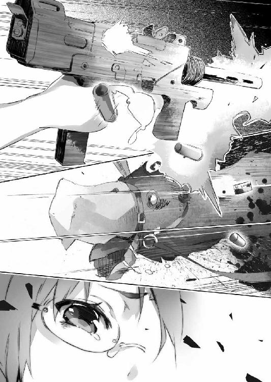
動物の生命力というものは、けっこう、侮れない。この鳥がどういう生き物かは僕も詳しくは知らないけれど......たとえば野生の鹿や熊といった大型の獣を狩る場合には、大口径のマグナム・ライフルが使われることを思えば、拳銃用の９ミリ弾では、とてもその突撃を止めるだけの破壊力がないのは明らかだった。
いや。そもそも傀儡の楔で操られている生き物は、苦痛なんて感じない可能性もある。
傀儡の楔はそれ自体が弱点みたいだけど、さすがに機関拳銃の精度で、しかも激しく動き回る相手の頭部を──さらにその一部を狙うのは難しいだろう。
「............！」
大型鳥の猛烈な突進攻撃を、美埜里さんは横に飛んでかわす。
彼女はそのまま地面の上で転がりつつ、今度は９ミリ機関拳銃を──連射。
ばらららららららら！ と──立て続けの、まるで機械の駆動音を想わせる一連なりの轟音が、響き渡った。放たれた十発以上の弾丸は、何発かは外れたものの、確実に数発が大型鳥に命中し、羽根を飛び散らせるのが見えた。
しかしまるで大型鳥に怯んだ様子はない。
それどころか......
「美埜里さん、危ない!!」
僕の叫びに咄嗟に反応して美埜里さんが転がる。
一瞬前まで彼女がいた場所を、猛烈な勢いで駆け抜けたのは、二羽目の大型鳥だった。
一対二。しかも相手はろくに痛みも感じる様子もなく、攻撃を仕掛けてくる大型の生き物。人間の側はその攻撃をまともに喰らえば、一撃で戦闘不能だろう。
これではさすがの美埜里さんもやばいのでは？
僕が焦りを覚えたそのとき──
「あっ......！」
光流さんが声を上げる。
彼の方を振り返ると──その向こうで、羽車が動き出すのが見えた。
さすがに傀儡の魔法で操っているだけあって、二羽だけでも車を牽けるらしい。美埜里さんの方にけしかけられた二羽は、最初からこういうときのための戦闘用だったのかもしれなかった。
「......ッ！」
舌打ちして光流さんが走り出す。
「ちょっ──ちょっと！」
彼は走っていく羽車を追いかけるつもりらしかった。
さすがに二羽では最高速度を出す、というわけにいかないのだろう。羽車はなんとか走って追えそうな程度の速度で、現場から去っていく。
まずい。今、連中を見失うのはまずいし──さらに言えば深追いした光流さんが連中に捕まるのもまずい。
「慎一君!?」
傀儡の大型鳥二羽と睨み合いながら美埜里さんが声を上げる。
僕は彼女の方を向いて大声で叫んだ。
「光流さんを連れ戻してきます！」
彼一人で何かできるとは思えない。
かといって美埜里さんは大型鳥の相手で身動きがとれない。
光流さんを止めるにしても、手伝うにしても、動けるのは僕だけだ。
「ちょっと......！」
美埜里さんが顔色を変えて声を掛けてくるけれど......待っている暇はない。彼女を置いていくことを心苦しく思いつつも、僕も、光流さんと羽車を追って走り出した。
意外と言えばかなり意外だった。
光流さんが羽車を追いかけたことが──だ。
彼は見知らぬ誰かが攫われたところで、気にしないと思っていたからだ。『オタクは犯罪を起こして当然、コレは想定済み』みたいなことを平然と言い放っていたくらいなので──他人が犠牲になることなど、なんとも思わない、冷たい人間なのではないかと。
でも彼は女の子が攫われるのを見過ごすことができずに飛び出した。
その様子は──打算の結果のようには、僕には思えなかった。
「......って、いう、か」
僕は息を荒げながら呟く。
「どこまで、いく、んだ、よ......！」
気がつけば、羽車はすでに街外れ──森の入り口付近にまで来ていた。
どうやら憂国士団の連中は、森の中に一度入って、足取りを消そうという考えであるらしい。確かに街中ではどう動いても目撃される恐れがある。僕達が彼らの犯行を目撃してしまったように。その点、森の中ならば、目撃者の数は減るし、そもそも視線の通りも悪くなる──
「......はっ......はっ......」
やがて僕達は羽車を見失って、森の外縁部に立ち尽くすことになった。
情けない。というかものすごく格好悪い。僕がなんとかするしかない！ とか勇んで出てきたはいいものの、息切れを起こして見失うなんて。
手近にあった木の幹に手をついて、呼吸を整えている僕に......
「......どうして、貴方が、いるんです、か」
同じく呼吸は乱れているけれど、僕よりは疲れた様子もなく──数歩先からこちらを振り返って、光流さんがそう言ってきた。
汗の浮いたその顔には呆れの色が濃い。
「だって、君が、走り、出すか、ら......一人じゃ、危ない、し......」
「............」
眉をひそめて僕を見つめる光流さん。
彼はやがて短く溜め息をつくと、森の奥へと進み始める。僕はその後を追いながら言った。
「ここは、いったん美埜里さんの、ところへ、戻って、応援を、呼んだ、方が......」
「そんなことしてる間に逃げられたらどうするんですか？」
吐き捨てるように光流さんが言う。
「森を、羽車で突っ切るのは、無理だろ......羽車を、棄てるにしても、ただ隠しておくだけに、しても......連中の潜伏場所は、そう遠くないはずで......」
だいたい、僕達二人が仮に憂国士団の連中のアジトを見つけたところで、そこからどうするのか。
僕は武器を持っていないし、それは光流さんも同じだろう。とりあえず僕は簡単な攻撃の魔法を一つ使えるけれど、複数の人間を相手に、しかも人質をとられた状態では、とても対処しきれるとは思えない。
「......戻るなら戻れば。私は行きます」
そう言って光流さんはどんどん森の奥へと進んでいく。
一度見失ってしまった以上、この森のどこに憂国士団がいるのか分からない。どこからいきなり襲われるかも分からないというのに──
「......光流さん」
生い茂る草や木にスカートを引っ掛けたりして、歩きづらそうにしている彼に、僕は後を追いながら話しかけた。
「......何ですか？」
「どうしてそこまで必死に、憂国士団を追いかけてるの？」
計算高い彼にしては、無謀すぎる行動だ。
「............」
光流さんがふと足を止める。
追いついてその横顔を見ると──聞かれたくないことを聞かれた、という感じの表情がそこに浮かんでいた。
「ごめんなさい。この後どうなるか分からないから、今謝っておきます」
「......へ？」
意外な言葉に僕は驚く。
「正直......目の前で誘拐を見るまで、ちょっと、舐めてました」
「何を？」
「自分がしたことが、どういうふうに現実に影響するのかってこと」
「............」
ああ。そうか。
僕は合点がいった。
人間は......誰しも知識としてだけ知っていることと、実際に自分で体験したこととでは、大きく受ける印象が違う。
たとえば、人が死ぬ、という事実について僕達は基本的に恐怖を覚えるのだけれど、テレビや新聞越しに見る事件や戦争については、正直言って現実味がかなり薄い。そこで人が死んでいるのは事実でも、自分の五感でそれを受け止めていない分、創作物の中の登場人物が死ぬのと、受ける印象は大差ない場合が多い。
遠い外国で見知らぬ誰かが死んだと報道されても、同情することはあっても、自分が無力感や罪悪感に苛まれたりはしない。自分には関係のないことだと分かっている──そう考えられるだけの『断絶』がそこにはあるからだ。
僕だってネットやテレビで戦争の映像を見ても、そしてそれが今現在世界のどこかで行われていて、現に人が死んでいるのだと頭では理解していても──だからといってすべてをなげうって戦争の現場に行き、誰かを救おう、だなんて思わない。精々、恵まれない人達のために募金する程度だろう。
しかし......もし自分の知っている人がそんな状況にあるとしたら？
あるいは目の前で誰かが殺されそうになっていたら？
それはとたんに、目の逸らしようのない、情け容赦ない現実として自分の上にのしかかってくる。それは他人事じゃない。自分が攫われたわけではないとしても、間違いなく自分も当事者なのだ。
目の前で誰かが攫われる。
場合によっては殺されるかもしれない。
そう思うと──いても立ってもいられなかったのだろう。
それは数字でもなければ他人からの受け売りでもない。
光流さんの感じた気持ちで、真実だろう。
だとすれば──
「なんでそこで笑うんですか」
僕の顔を見て光流さんが眉をひそめる。
「いや......」
僕は曖昧に言葉を濁して首を振った。
武器も持っていないのに。
場合によっては自分の身も危ないのに。
それでも見て見ぬふりはできなかった。
結局、この光流さんって人は根っからの悪人ってわけでもないのだろう。むしろ僕は彼に親しみが湧いた。こういうタイプをネットでよく見かけたからだ。まさしく中二病──世の中を斜めに、醒めきった目で見ているくせに、心のどこかで人の良心とか、正義とかを、信じているかのような。自分の趣味に合わない相手には平気で『死ね』とか言えちゃうくせに......その一方で、助けを求めてくる相手を見捨てることが、どうしてもできないような。
やっぱりなんだかんだで彼はオタクなのだろう。
平和ボケした日本が生み出した──平和ボケであるがゆえの、物語の中にしかあり得ないような優しい理想と、身も蓋もなくて容赦ない現実を、並列に、等しく、扱える人種。
「............」
居心地悪そうに、光流さんは僕から顔を背ける。
それから──僕達は無言で、ひたすら前に進んだ。
ただ、本当に向かうべきはこっちなのか、僕には分からない。たぶん、光流さんにも分かっていないだろう。羽車の轍が残っている場所、あるいは羽車が通れそうな広さのある場所を選んで進んでいるだけだ。
「あいつら、どこにいるんだろう......」
不安をごまかしたくて僕はそう呟く。
そもそも連中は衝動的に──行き当たりばったりで誘拐をしたわけではないだろう。たぶん、逃走経路もあらかじめ計算されているはずだ。森の地形も調査済みかも。となるとモタモタと先も分からず徒歩で進んでいる僕達を置いてさっさと連中が森を抜けて逃げてしまう可能性も高い。先に準備しておくつもりなら、樹を切るなり何なりして、羽車が通れるような『道』を造っておくことだってできただろう。
早く見つけ出さなければ。
いや......やはりここは一度戻って美埜里さんと合流するべきか？
「............」
光流さんもまた憂国士団を見失ったことに焦りを覚えているらしい。
ずんずんと足取りも荒く先に進んでいく。僕は不安を覚えながら彼に追いついて──
「やっぱりここは──」
とそこまで言って。
「......え？」
踏み出したはずの右足が空を踏んだ。
地面がない？
............崖ッ!?
「噓っ!?」
僕は咄嗟に身を引こうとして──しかし、半歩ばかり先を行っていた、つまりは一瞬僕よりも先に崖の向こうに飛びだしてしまった光流さんが、僕の手を摑んだ。ちょうど、僕が彼を止めようとその肩に伸ばしていた手を。
そうなるともう──
「ひあっ!?」
「わあああああ！」
僕と光流さんはそのまま、重力に逆らえず──落下するしかなかった。
嗚呼！ 落ちる！
反射的に目を瞑った僕の脳裏に、走馬灯のようにいろいろなものが巡る。
助けることができなかった女の子。大型鳥と戦っていた美埜里さん。屋敷にいるはずのミュセル達。アニメの最終回。ああ、僕は最後まで童貞すら捨てられず、短い人生に幕を下ろすのか......！
などと心底くだらないことを後悔とかしつつ僕は光流さんと共に落ちて。
「──おうっ!?」
どん！ と股関節から脳天に突っ走る衝撃。
どうやら落下距離はそう大したものではなかったらしい。僕達は幸運にも──いやもう本当に──何かの上に跨るようにして落ちたようだった。とりあえず尻が蹴っ飛ばされたみたいに痛い程度で済んだけど、若干、前のめりだったら、どうなっていたことか。
「いった......ってなんだ!?」
僕は尻をさすりながら目を開ける。
隣には僕と同じように、驚きの表情で何かに跨っている光流さんの姿がある。
そして──
「......あれ？」
視線を下に向けた僕は、自分が跨っているものを見て、目が丸くなった。
僕の下にあるのは、羽が身を覆い尽くした、何かだった。
目の前には紐が繫がった短い首と、丸い頭。
しかもその頭には、何かが刺さっていて......。
これ、もしかしなくても大型鳥？ しかも楔が突き刺さっている？
ということは──
「............」
僕は、頼みもしないのに押し寄せる嫌な予感に急かされて、背後を振り返る。
僕達の背後には......
「──あ」
羽車の中から僕達を見て驚いている男達と、攫われた女の子の姿があった。
なんという偶然！
どうやら僕と光流さんは崖から落ちた際に、憂国士団の残党が乗った羽車の上に──正しくはこれを牽く大型鳥の上に、運良く落ちたようなのだった。
いやちょっと待って。運良く？
「............」
漫画でも今時まずあり得ないような展開に──僕だけでなく、光流さんも、そして憂国士団の連中も凍り付いているようだった。どこかの誰かの悪意でも感じてしまいそうな偶然に、全員、脳が止まっているのだ。
しばらく羽車の車輪が森の落ち葉をさくさくと踏み砕いていく音だけが響く。
そんでもって──
「──ッ！」
いちばん早く我に返ったのは光流さんだった。
彼は──おもむろに大型鳥の頭に手を伸ばすと、そこに突き刺さっている『楔』に手を掛ける。まあそりゃそうか。誰が見ても『弱点です』って言わんばかりだもんな。バハイラムの魔法使い達はその辺、どう考えているのやら。
ともあれ──
──ぎょおおおおおおおおおおおおお!!
撃たれても痛がる様子もなく平気で動いていた大型鳥だけど、さすがに『楔』を引っ張られるのは苦痛らしかった。いきなり咆哮を上げ、闘牛の牛のように、その場で地団駄を踏んで暴れ始める。
「う、うわっ！」
光流さんの跨る大型鳥が、僕の乗っている大型鳥にぶつかる。
結果、僕達は揃って地面に投げ出された。幸い──地面は堆積した落ち葉とその下の腐葉土のおかげで、柔らかい。むしろ大型鳥の背に落ちたときよりも痛くはなかった。
「──だ、大丈夫？」
傍らの光流さんを振り返って尋ねる。
彼は身を起こしながら悔しげに言った。
「おかしいですね。これ見よがしの弱点なんですけど......抜けませんでした」
「そりゃそうだ」
と僕は呆れて言った。
そんな簡単に抜けるんなら『兵器』として役に立たないだろう。まあ確かにいかにも安定悪そうな感じに突き刺さってるんだけどさ。本当、少し考えれば良いのに。
いや。今はそんなことどうでも良くて。
僕達のすぐ脇を通り過ぎた羽車が──数メートル先で止まる。どうやら大型鳥がそれぞれ好き勝手な方向に暴れているため、先に進めなくなったらしい。少なくとも光流さんの行為は連中の足止めにはなったようだった。
「～～～～ッ！」
乱暴に扉が開き、何事か怒鳴りながら、羽車から男達が出てきた。
人質の女の子も一緒だ。無理矢理彼女を羽車の中から引きずり下ろして、僕達の方へよく見えるように、その首元へと短剣を突きつける。
「～～～～ッ！ ～～！」
男の一人が苦々しげに言葉を吐き捨てるが、何を言っているのかは分からない。
羽車から出てきた男の数は五人。
四人は腰に剣を下げて僕達を憎々しげに睨み付け、残りの一人は女の子を拘束して短剣を突きつけている。
そして──
（──水晶球？）
女の子を拘束している男の腰には、水晶球が下げられていた。
どうして水晶球？ あれは昨日見せられた映像を再生する魔章水晶と同じもの？ でもぼんやり光っているけど中に映像らしきものなんて見えない──
「──あ」
思い出した。
あれってもしかして、前にも憂国士団が使っていた、魔力に反応して、魔法を察知する水晶じゃないか？ でもってぼんやり光っているってことは、今もなんらかの魔法が行使されていることを意味するわけで──
（そっか。傀儡の魔法だ）
どいつが魔法使いなのかまでは分からないけど、あの五人の中の誰かが魔法使いで、傀儡の魔法を使い、大型鳥を操っていたのだ。
「～～～～～！」
四人の男達が喚きながら一斉に剣を引き抜く。
「ちょっ......ちょっと待っ......！」
この状況ってすごくやばくない？
僕は慌てて光流さんと共に起き上がり、数メートルの距離を挟んで男達と対峙する。
人質を取っている奴を除いても、四対二で、しかもこちらは非武装、向こうは剣を持っている。しかも魔法使いも最低一人いるはずだ。
はっきり言って勝負にならない。
もちろん、僕はミュセル直伝の〈疾風の拳〉が使えちゃったりするわけだけど、攻撃魔法としては初歩の初歩、しかも僕のような覚え立ての初心者では精度は低いし、連射もきかない。使えたとしても大雑把な攻撃を精々一度──だけどたぶん、それも使う前に、あの水晶で察知されてしまう。
「............」
じり──と僕は後じさる。
情けない。恥ずかしい。
ここまで追いかけてきておきながら、女の子を救い出すどころか、戦力差を前にビビって後じさるしかないなんて。
「............仕方ありません」
光流さんが男達の方を睨みながら言った。
「これだけは使いたくなかったのですが。私の本当の力を見せるときが来たようです」
「え？」
何それ!?
実は光流さんには秘められた超能力があるとか、そんな美味しい設定なの!? っていや設定じゃないんだろうけど、この土壇場で何それマジ!?
と僕が愕然と彼の方を見ると──
「闇よ！ とこしえの煉獄にわだかまりし暗き血族の力よ！ 今こそここに集いて我が剣となるが良い！ これなるは我が敵、我が滅ぼすべき仇なればッ！」
と光流さんが高々と呪文？ ──を唱える。
「顕れよ！ 覇王焦熱陣ッ!!」
「──!?」
男達はびくりとして身構える。
僕もなんだかそのすごそうな威力に備えて思わず頭を抱えながらその場に伏せる。
そして──
「............」
「............」
十秒ほどが何事もなく過ぎた。
「............」
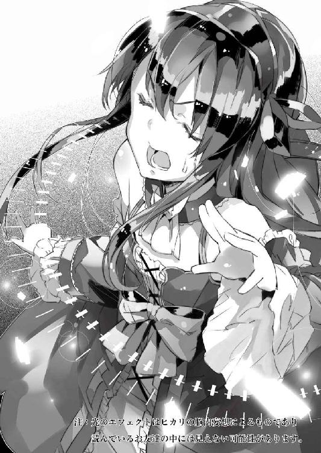
光流さんは何かこう、掌から光線でも出しそうな体勢のままかたまっている。
その額から一筋の汗が流れ落ちるのを僕は見逃さなかった。
「──って虚仮威しかよっ!?」
思わず跳ね起きて喚く僕。
「意味ねえっ！」
「私が注意を引きつけてる間に、慎一さんが何か攻撃なり何なりしてくれるものと期待していたんですよ！」
「無茶言うな！」
「咄嗟にそのくらいの機転はきかせられないんですか!?」
「だから無茶言うなって！」
思わず怒鳴り合う僕達だけど、そんな漫才みたいなやりとりを、いつまでものんびり見ていてくれる憂国士団の連中ではないわけで。
男達はむしろ、今の光流さんのハッタリが空振りに終わったことで、こちらに戦う力がないと判断したらしい。あからさまに馬鹿にしたような笑みを浮かべながら、剣を片手にこちらへと近づいてくる。
まずい。このままだと斬り殺される。
本当に魔法を使って薙ぎ倒すしかないんだろうけど......迂闊に詠唱始めたらその瞬間に駆け寄って斬られてしまうだろう。相手には魔法を察知する水晶も──
.........って。あれ？
僕はふとあることに気付いた。
さきほど、光流さんがいかにも大袈裟に魔法使いますよと言わんばかりにハッタリをかましていたあのときだ。水晶球を腰に下げていた男は、まったくそちらに目を向けていなかった。相手が魔法を使うかもしれないと思ったら、まず確認しそうなものなのに。
いや。それどころか、光流さんのアレがただのハッタリだと、水晶球の反応で分かりそうなものなのに............
（......待てよ）
そう。水晶球を見ても、意味がないんだ。
大型鳥を制御するための、傀儡の魔法はずっと使われている。実際、さきほど大暴れしていた大型鳥達は、すでに落ち着きを取り戻して、黙然と立っているだけだ。
つまり......
「──分かった」
僕は両手を挙げて言った。
武器を持ってませんよ、と示しているわけだから、これが降参の合図だ、というくらいは憂国士団の連中も分かるだろう。こういうのはこっちの世界も僕らの世界も共通だ。
「僕らに勝ち目はないよ。でも僕は皇帝陛下のお気に入りだ。人質としては使えると思うから、殺すのは待ってほしい」
僕はできるだけ卑屈な表情と口調でそう訴えた。
「ちょっ──ちょっと慎一さん!?」
光流さんが目を剝いて叫ぶ。
「何をそんな卑怯な──っていうかそれ以前に、言葉は通じないから、取引なんて」
「ああ、あれが何を言っても関係ないから。僕だけは助けてくれないか。僕はまだ死にたくない、それだけなんだ」
そう言いながら男達の方に歩いていく。
「............」
「............」
男達は怪訝そうに顔を見合わせる。
そしてさらに僕は一歩、一歩、できるだけ彼らを刺激しないようにゆっくりと近づいていき、そして......
「──ありゃ」
男達にあっさり捕まっていた。
「何してるんですか!? バカじゃないの!?」
光流さんの動揺しきった声が飛んでくる。
見れば男達の方も、皆ニヤニヤと、意地の悪い──嘲りを露骨に含んだ笑みを浮かべていた。きっと僕のことを卑屈で間抜けな男とでも思っているのだろう。言葉は通じなくとも、僕の表情と口調、それに光流さんの剣幕を見ていれば、だいたい、僕が何を提案して近づいていったかは理解できたはずだ。
「嗚呼......！」
僕の隣で、首元にナイフを突きつけられている女の子が凍りついていた。
言葉が通じるのは、貴族である彼女が魔章指輪を身に着けている証だ。
つまり──
「............」
女の子は絶望の表情で項垂れる。
一度は、追いかけてきた僕達の姿を見て『助けが来た』と喜んだからこそ、なおさらにその絶望は深いのだろう。
僕は──溜め息を一つついて、そんな彼女に話しかけた。
「ごめんね、僕達じゃ力不足だったみたいだ」
「............」
「君はこれから、この男達に××されて○○されてその挙げ句△△にされてしまうんだよ、きっと。嫌がっても□□な☆☆が無理矢理下の──」
「............！」
僕の言葉を聞いて、サァッと彼女の顔から血の気が引いた。
日本だと間違いなく十八禁指定を喰らいまくるような、えげつない内容──ありありとその状況を想像してしまったのだろう。女の子の両目から、涙が零れ始めた。
「何言ってるんですか!? 頭おかしいんじゃないの!?」
「い、嫌......」
「ああ、なんて可哀想な君！」
「もう貴方黙ってなさいよ！」
光流さんが怒鳴る。
だけど僕はこれでもかというくらいにエロゲの脚本家でも躊躇しかねないような下ネタ満載トークを続ける。正直、深く考えなくてもすらすらと放送禁止用語が山ほど出てくる自分が恐いけど、まあそれはさておき。
「い......い......いやあああああああああああああああああああああああ!!」
恐怖が最高潮に達したのだろう。
女の子は首筋に刃物を突きつけられていることすら忘れたかのように、身をよじって、泣き喚いた。
「そういうわけで」
僕は言った。
「ちょっとしゃがんでくれる？ 魔法撃つから」
「......え？」
渾身の力で僕の肩を摑んでいた男の手を振り払うと、僕は右手を掲げた。
勝ちを確信して、僕が女の子に話しかけるのをさっさと止めなかったのが運の尽きだ。一瞬、きょとんとしていた女の子も、僕の動きに驚いた男の腕を振り払うと、目を瞑ってその場にしゃがみ込んだ。
そして──
「〈疾風の拳〉！」
風が衝撃となって、男達を襲う。
「──!?」
短い驚きの叫びと共に、男達がまとめて吹っ飛ぶ。
......女の子も一緒に。
とりあえずかなり上の方を──高さを調節して男達の頭だけに〈疾風の拳〉が当たるようにしたつもりだったんだけど。どうも女の子も倒れる男達の腕か足かが引っかかって巻き込まれてしまったらしい。
いやもう本当にごめん。
頭の中で詫びながら、僕は呻いている男達のところに駆け寄る。場合によっては大急ぎでもう一発くらいは魔法をぶちかましておかないとまずいかも、と思ったからだ。
しかし──
「......ありゃ」
相当強く身体を打ったのか、男達は呻くばかりで起き上がってくる気配がない。
僕の放った魔法は、良くも悪くも予想以上の威力になってくれたようだった。女の子まで一緒に吹っ飛ばしちゃったのはまずかったかもしれないけど、とりあえず、駆け寄って様子を見ると、傷はないみたいだし、呼吸もしっかりしている。
まあ結果オーライってことで。
............駄目かな。
などと僕が女の子を抱き起こしながら冷や汗をかいていると──
「今の......もしかしてわざと捕まったんですか......？」
光流さんが呆然と呟くのが聞こえた。
「近寄らないと威力ないかと思ってさ」
と僕は言った。
「僕は初心者だから、魔法の精度も低いし。まあその分、拡散するから、まとめて薙ぎ倒せたわけだけども」
「あの変なセリフも......？」
「呪文詠唱をごまかすためにね」
と僕は苦笑した。
そう。水晶球で魔法を察知されることはないわけだから──後は、問題になるのは呪文詠唱だけだ。僕が口の中でぶつぶつ呟いているのがばれないように、女の子には大声で叫んでもらったのだ。
決して僕がああいう卑猥な台詞で女の子を泣き叫ばせるのが趣味というわけではない。
......本当に違うからね？
「............」
僕の抱き起こした女の子が──ふと目を開く。
「あ、気が付いた......」
「きゃああああ！」
女の子は悲鳴を上げた。
い、いや、だから違うんだ、僕は、僕は──
慌てて言い訳しようとした僕の首筋に、冷たいものがあてられた。
振り返って確認するまでもない。横目で見ると、すぐそこに剣の切っ先があった。背後から首筋に剣を突きつけられているのだ。相手がその気になれば、ほんの少し剣を押すか引くかするだけで、僕の頸動脈は盛大に血を噴くだろう。
「～～～～～～ッ！」
ああ。これは言葉が分からなくても意味が通じる。
『よくもやってくれたな』とかそんなところだろう。
まずい。しくじった。
攻撃魔法と言っても僕の技量じゃ本職の魔法使いほどの精度もなければ連射もきかないけど......どうも威力にもムラがあるらしかった。確かに女の子が意識を取り戻してるわけだから、それよりも頑健そうな誘拐犯達の中にも、他の奴より早く回復してくる奴がいてもおかしかない。
男は仲間と同じように倒されたふりをして、僕が油断するのを待っていたのだろう。
まずい。殺される。
僕は焦りに思考が空回りするのを感じていた。
上手く憂国士団の連中を出し抜いたと思ったのだけれど──現実はそんなに甘くないらしい。どうする？ どうする？ 何をどうすればこの状況を切り抜けられる？
僕は首筋に押し当てられた刃の冷たさに怯えながら考えて──
──がつん。
鈍い音が響く。
一瞬、僕の首が斬られた音か、なんて思ったりもしたけれど。別に僕は痛みを感じることもなく、首から血が噴き出る感触もない。
やがて、どさりと何かが倒れる音も聞こえてきた。
気がつけば首筋に押し当てられていた刃の感触が──ない。
「............」
僕は恐る恐る背後を振り返る。
するとそこには──剣を手にした光流さんの姿があった。
彼はこっそり相手の背後に回って、攻撃したらしい。剣はまだ倒れたままの、憂国士団の連中から奪ったものだろう。倒れている男は血を流していないのを見ると......どうやら、刃で斬ったのではなく、剣身でぶん殴ったらしかった。
「............うわあ」
殴られた男は白目を剝いていた。
よほど、強い力で殴られたのだろう。
「......なんですか？」
僕の視線を受けて、拗ねたような表情で光流さんが言う。
「いや......なんというか、すごいね。剣って見た目以上に重いから、けっこう振り回すの、大変だと思うんだけど」
前に一度、エルダント帝城で近衛騎士のものを触らせてもらったことがあるけど......相当重かった気がする。幅広の両刃長剣は、もともと切れ味よりも、鎧を叩いても折れないような頑強さを第一に求められるとかで、必然的に、重くなるんだそうな。
「鍛えてますから」
光流さんは両手を腰に当てて言った。
「女装趣味ってこれでなかなか大変なんですよ？ 無駄な贅肉ついたら、とたんに、女物なんて着れなくなっちゃうんです」
「ははあ......」
むしろ得意げにそう言ってくる光流さんに、僕は乾いた笑みを返す。
そして──
「はああああああ......」
緊張感が緩む。
僕達は揃って、長い長い安堵の溜め息をついた。
とりあえず憂国士団の男達は縄で近くの樹に縛り付けた。
ご丁寧にも手枷足枷と一緒に、羽車の中に積まれていたからだ。おそらくもっと何人も誘拐するつもりだったのだろう。大型鳥も大人しくなった──というよりまったく動かなくなっていたので、そのまま樹に繫いだ。たぶん、魔法使いが意識を失うなり、魔法が途切れるなりすると、勝手にどこかに行ってしまわないようになっているのだろう。
......となると美埜里さんに襲いかかっていた大型鳥も今頃は大人しくなっているんじゃないだろうか。
そんなわけで──僕と光流さん、それに攫われた女の子は、男達から少し離れたところで美埜里さん待ちをしていた。
以前バハイラムに攫われたこともあり......僕は念のためにと美埜里さんから超小型の発信器を持たされている。電池が半日と保たないので、何かあった際にだけスイッチを入れろ、と教えられていた。美埜里さんはすぐに駆けつけてくれるだろう。
「......あの」
ふと光流さんが僕の方を向いて気まずそうな表情を浮かべる。
彼は僕に自分の手を示し──魔章指輪を外して見せた。
どうも女の子には聞かれたくない話があるようだった。指輪は双方にないと意思疎通できなくなるから、僕達だけでも外してしまえば、女の子には言葉が通じなくなる。まあ正確には『言葉』ではないんだけれども、それはさておき。
僕も魔章指輪を外す。
それを確かめてから──光流さんは目を伏せて言った。
「......その、エロゲのことなんだけど」
睫毛を伏せながら話す光流さんの姿は、肩を落としているせいか、なんだか妙に小さく見えた。というか男だと分かっているんだけど、妙に可憐というか、可愛らしく見えてしまうから恐ろしい。普段が堂々としているというか、ドＳっぽい言動もちょこちょこあったから、よけいにこういうしおらしい態度は──ギャップ萌えというかなんというか。
いや。萌えてない。萌えてない。萌えてない。
僕は呪文のように自分に言い聞かせた。
「トレカもだけど......少し考えが足りなかったっていうか......いろいろと......想像力に欠けていたことは......認めます。ごめんなさい」
「............」
僕はぽかんと口を開けて光流さんを見つめる。
こんなに素直に自分の非を認めるとは思ってなかったからだ。エロゲやトレカの一件と憂国士団の誘拐は直接関係ないかもしれないけれど......現実に『中毒症状』を起こしている生徒達の姿を見て回り、最後に誘拐事件の現場にいあわせるなんて衝撃的な体験をしたせいで、さすがの光流さんも考え方を改めざるを得なかったみたいだ。常に自分の想定通りに現実が進むわけではない──と。
「でもどうするんですか？ いまさら回収しても──」
一度、広まってしまったものは止められない。
光流さんはそう言いたいのだろう。
実際......あの映像を記録する水晶球のこともある。エロゲそのものをゲーム機ごと取り上げたって、次はあの水晶球に記録されて出回るだけだ。動画投稿サイトでも、ゲームのプレイ動画なんてのがたくさん投稿されて、閲覧されていたりするわけで。
それほどに人間の欲望というのは歯止めがきかない。
もともとの作者の意図がどうあれ──
「ああ。そのことだけどさ」
けれど僕は自信たっぷりに頷いて見せた。
「我に秘策あり──って感じ？」
「......？」
顔を上げて眉をひそめる光流さん。
この期に及んで僕が自信たっぷりなのが不思議なのだろう。
けれどもこれだけは言える。
確かに光流さんは僕よりも頭が良いんだろうし、商売人としても有能なんだろうけど、ただ一点だけ、圧倒的に僕の方が強い部分がある。
それは経験だ。
この神聖エルダント帝国に来て一年近いこの僕と、まだ一ヵ月にも満たない彼とでは、肌での理解度が違う。具体的にはエルダントの人達の『気質』というかノリというか、そういうものについては、僕の方が遥かによく分かっている。
良くも悪くもエルダントの人々は文化に対して純粋だ。
思いつきで投入したトレカやエロゲが、ものすごい勢いで浸透してしまったように。
それはつまり、普段、薬とかを飲み慣れていないと、弱い薬でもすごく効いちゃうのと同じである。そういうことを僕は、以前の経験からよく分かっている。
だから──
「まあ......任せて」
僕は握り拳から親指をぴょこんと立てて言った。
それから三日後。
僕はエルダント城にいた。
「──シンイチ。こっちじゃ」
とペトラルカが僕を手招きする。
正確には中庭を見下ろす位置にあるバルコニーに、僕はペトラルカ、そして美埜里さん、騎士ガリウス、ザハール宰相達と一緒にいる。そして中庭には大勢の......騎士達や貴族達、そしてその子弟も含め、様々な人達が集められていた。
たぶん、これだけ人が集まるのは、例の映画の上映会以来だろう。
「とりあえず準備はできておりますよ」
とザハール宰相。
「助かります。本当にありがとう」
「いや。くだんの連中を捕まえたのはシンイチ、君の手柄だからな。褒美というほどのものではないが、我々も君の要請に応じて便宜を図るのは、やぶさかでない」
と騎士ガリウスも言ってくれた。
憂国士団の残党が捕まった結果──彼らが先に誘拐していた貴族のお姫様も無事に保護され、事件はおおむね解決した。
ちなみに大型鳥の頭に突き刺さっていた『楔』についてもエルダント側が回収して分析しているらしいけど──やっぱりバハイラムが裏で糸を引いていたっぽい。
というよりバハイラム王国は敵対するエルダント帝国の、反政府勢力に節操なく水面下での協力をしているようだった。本来、憂国士団の人種差別主義って、バハイラムの国民平等の思想とは相反するもののはずなんだけど──とりあえず『敵の敵は味方』ってことみたい。『節操も分別もない連中というのは、敵に回すと何かと厄介だが......懸案だったバハイラムの秘密兵器が完全な形で手に入ったということで、喜ばしい』とはエルダントの軍事面を司る騎士ガリウスの弁。まあ秘密兵器なうえに、自分達とは異なる思想の集団に貸していることを考えると、敵の手に渡りそうになったら、時限装置で自壊なり何なりする仕掛けがありそうな気はするけども。
ともあれ......
「............」
僕は自衛隊から借り出してきたメガホンを片手に前へと歩み出る。
ペトラルカが横にいてくれるのは、権威付けのためだ。
僕は緊張を解すように大きく息を吐きながら、改めて中庭を眺める。
中庭に集まった人々は、静かに僕を見つめ、僕が話し始めるのを待っている。
彼らは詳しいことはまだ何も知らされていない。『オタク文化の伝道師である加納慎一から大事な話がある』そういう名目で、貴族やその周辺の人達、具体的には今回のエロゲに少しでも触れたことのある人々、あるいはこれから触れそうな人々を集めてもらった。
なので、ここにいるのは皆、それなりの身分の人──つまり全員魔章指輪持ちだ。
「............」
僕はごくり、と生唾を吞み込んだ。
自分から提案しておいてなんだけど──さすがに僕としても、こんなにたくさんの人の前で一席ぶつとなると、緊張せざるを得ない。というか、あれ？ 足震えてますか、僕？
「......シンイチ」
そっと、ペトラルカが身体の陰で、僕の手を握ってくれた。
「ペトラルカ......」
僕が彼女の方を見ると、小さく笑って彼女が頷いてくれる。
ああああ。可愛いよ皇帝陛下可愛いよ！
などといつも通りの萌えが脳裏に満ちることで──現金なことに僕は落ち着いた。
よし。頑張る。
僕は大きく息を吸い込んだ。
そして──
「諸君、私は美少女が好きだ」
メガホンが僕の呟きを拾って、中庭に響き渡った。
「諸君、私は美少女が好きだ。諸君、私は美少女が大っ好きだ！」
突拍子もない内容の演説に、ざわめきが広がっていく。
「メイドが好きだ。ロリっ娘が好きだ。お姉さんキャラが好きだ。後輩キャラが好きだ。セーラー服が好きだ。ブレザーが好きだ。水着が好きだ。ツンデレが好きだ。ボクっ娘が好きだ。学校で、教室で、廊下で、校庭で、家で、プールで、海で、街で、屋敷で、森で、二次元に存在するありとあらゆる美少女が大好きだ！」
話していくうちに、自分の声がだんだん大きくなっていくのが分かった。
おお。話せます。話せます総統！
「強気ツンデレキャラが怒声と共に主人公を蹴飛ばすのが好きだ。そのくせ時折、弱気な表情を見せたときなど心が躍る。主人公のことが好きすぎてあり得ない方向に暴走するヤンデレが好きだ。最低な主人公の首を刎ね、ライバルの腹を鉈で捌いたときなど胸がすくような気持ちだった。無表情に鋭い眼光で睨み付けてくるクーデレが好きだ。無表情のヒロインが一瞬でも頰を染める様など感動すら覚える」
貴族達のざわめきが大きくなる。
それに構わず、僕は強く拳を握り締めた。
うん。ここは眼鏡か、さもなくばチョビ髭でもほしい感じだった。
「諸君、私は美少女を、天国のような二次元を望んでいる。諸君、私に付き従う同志諸君、君達はいったい何を望んでいる？ 三次元を望むか？ 情け容赦のない糞のような現実を望むか？ 否！ 二次元を望め！」
僕の叫びに、どこかで誰かが復唱した。
「ニジゲン!!」
いや。実を言うとこれだけは仕込みました。はい。
こういうものは口火を切るタイミングが重要だったりすると聞いたもので、僕は、とりあえず中庭の隅に、光流さんの衣装で貴族っぽい感じに着飾らせたエルビアとミュセルを配置したのだ。
そして──
「ニジゲン!!」
別の誰かが呼応するかのように叫んだ。
よっしゃ！ 火が付いた！
「ニジゲン！ ニジゲン！ ニジゲン！」
単語が重なり、それは地響きのように空気を震わせる。
叫んでいるのは主に学校の生徒達や──その兄弟姉妹だ。
つまりはわりと早々にオタク文化に『毒された』人達である。さすがにその親達は驚いているばかりだけど──それは問題ない。
「ニジゲン！ ニジゲン！ ニジゲン！ ニジゲン！ ニジゲン！ ニジゲン！」
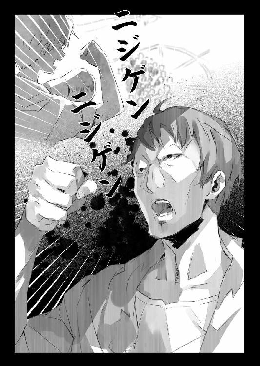
......それは端から見れば、異様すぎる光景だっただろう。
だが僕は、これを待っていたのだ。
「......よろしい、やはり二次元だ」
無意識に口角が吊り上がる。
ここはできるだけいやらしく、残忍な笑みを浮かべるのがポイントです。
「我々は満身の力を込めて今まさに振り下ろさんとする握り拳だ。だがこの暗い現実の底で耐え続けてきた我々に、ただの二次元ではもはや足りない！ 二次元を！ 素晴らしい美少女を！」
うーん。気持ちいい。
すっかり僕は良い気分で続けた。
「我らはわずかに一国の一部、千人に満たない同志に過ぎない。だが諸君は一騎当千の古強者だと私は確信している。ならば我らは諸君と私で、総力百万と一人のコミケとなる！」
興が乗った僕は両手を広げる。メガホンが僕の声を拾ってくれているのかさえ分からないけれど、ここまで乗せてしまえば、後は皆、僕の声を聞き取ろうと必死になるだろうし、極論──何を言っても同じだろう。
「二次元に目を向けない連中を叩き起こそう！ 連中に二次元美少女の味を思い知らせてやる！ 連中に二次元の素晴らしさを悟らせてやる！ 天と地の狭間には奴らの哲学では思いもよらない萌えがあることを知らしめてやる！ 一千人のオタクの同志で世界を萌やし尽くしてやる！ 行くぞ諸君！」
歓声が起きる。
よし──充分暖まった！
僕はここで次の台本に頭の中を切り替える。
演説と言えば某少佐と並んでこの人だろう。
「あえて言おう──ロリであると！」
いやまあ僕の萌えポイントはロリ限定じゃないけどここはそう流れで言っておく。
何故なら──
「我ら軟弱のロリコンが、犯罪に走ることなどできないと私は断言する。ロリコンは厳選された優良作品たる二次元少女に萌えてこそ、初めて永久に生き延びることができる。これ以上三次ロリに手を出してはロリコンそのものの危機である。差別主義者の無能なる者共に思い知らせてやらねばならん。今こそロリコンは明日の未来に向かって立たねばならぬ時であると！」
渾身の力を込めて、僕は叫んだ。
「我々は二次元と三次元を混同してはならない！ 何故なら紳士だからである！ 二次元を愛するがゆえに三次元に手を出してはいけない！ 触れられればそれはもう、二次元ではない！ 無粋！ なんという無粋！ 崇高なる二次元の志を忘れた無粋なるオタクに呪いあれ!!」
そもそも『これやっちゃいけない』って告げて事が済めば苦労はない。
逆なのだ。『こっちの方が格好いいですよ』『それやったら恥ずかしいよ？』って言われた方が、人間は提案に従いやすいわけで。
「そう！ 今こそ叫べ！」
ぐっと僕は、天に向かって拳を突き上げた。
「イエスロリータ！ ノオオオタッチ！」
僕はそして右手を高々と掲げて言った。
「......！」
驚きと同時に......充分に暖まった中庭の人々は、即座に反応してくれた。
「いえすろりーた・のーたっち！」
「いえすろりーた・のーたっち！」
「いえすろりーた・のーたっち！」
ばらばらに上がった声は瞬く間に合唱となった。
中庭にいる全員の拳が、その合唱のリズムに合わせて突き上げられる──
「いえすろりーた・のーたっち！」
おお！
今この場にいる全員の心は、一つになっているのだ......！
「いえすろりーた・のーたっち！」
「いえすろりーた・のーたっち！」
「いえすろりーた・のーたっち！」
............
そうして。
いつまでもいつまでも、神聖エルダント城そのものを揺るがすほどの音量で──『イエスロリータ・ノータッチ』の叫びはやむことがなかったのだった。
めでたしめでたし。
............たぶん。
まだ興奮冷めやらぬ中庭を背に、バルコニーから引っ込むと──いつの間に上がってきていたのか、ミュセル、エルビア、そして光流さんが駆け寄ってくるのが見えた。
「お疲れ様です」
「お疲れ様っす」
ミュセルとエルビア、二人共、今は貴族っぽいドレス姿なので、歩きにくそうだし、一瞬、誰かと思っちゃうけど──本当に可愛らしくて、つい見惚れちゃうくらいだった。
「ありがとう」
と僕は光流さんも含めて三人にお礼を言った。
いけるとは思っていたけれど、やはり口火を切る人間がいるのといないのとでは、かなり成功率が違っていたと思う。
「皆が手伝ってくれたおかげで大成功──だと思う」
「......これが貴方の言っていた秘策なんですか」
光流さんが呆れ半分、驚き半分の表情でそう言ってくる。
ちなみに光流さんは火付け役こそしていなかったけど、ミュセル達と一緒に中庭にいて、演説を一通り聞いていたはずだ。
「一歩間違えばただの危ない独裁者演説でしかないですよ」
「あはははは......まあね」
僕は笑いながら頭を搔いた。
「だいたい、誘拐事件は別にエロゲとは関係なかったわけでしょう？」
「らしいね」
僕は頷いた。
憂国士団の残党は活動資金の確保とテロ行為の一石二鳥を狙って貴族を誘拐していただけで、ゲームとは基本的に関係はなかったみたい。
誘拐現場に魔章水晶が落ちていたのは完全に偶然だった。やり込み系エロゲに夢中になっていた生徒の一人が、携帯ゲーム機の電池が切れてもヒロインに『会える』ようにと記録したみたいなんだけど──これを持ち歩いていた際に落としてしまったのだ。
モノがモノだけに生徒はこれを誰にも相談できず──ましてヒロインをペトラルカに似せて設定していたことから、迂闊に探し回って誰かに知られることを恐れ、知らぬ存ぜぬを決め込んでいたみたい。改めてザハール宰相が魔章水晶の製造記録と所有者を調べて──僕等の世界みたいに、製造番号を振るような習慣がないから、大変だったみたいだけど──ようやくその辺の事情が明るみに出たのだ。
結局──エロゲで犯罪に走った者はもともと存在しなかった。
だから本来ならば、『僕達は何も悪くない』と開き直っているだけでも良かったんだけど。それも今回はたまたま......だったかもしれない。
良くも悪くもエルダントの人々はオタク文化の影響をもろに受ける。
だから万が一のことがあってはならないと、僕は先手を打つことにした。
「でも結局のところ、全部気持ちの問題だと思うんだよね」
「......気持ち？」
「マナーとでも言うのかな。光流さんが言うように、オタクが犯罪を起こした実例は確かにあるんだろうし、これからもそういう犯罪者の中にオタクが一定率で含まれていると思う。けれどそれは一般の人達と変わらない率だと思うんだよね」
オタクでなくても犯罪者はいるし。オタクでも犯罪者でない人がほとんどだし。
だからそれはあくまで気持ちというか──印象の問題でしかない。もっと極端な言い方をすれば根拠に乏しい、感情的な決めつけに過ぎない。少なくとも僕はそう思う。
もともとは曖昧なイメージでしかないのだ。
だったら──そのイメージそのものを変えてしまえば良い。
オタクとはこういう人達だ。
オタクとはこういうことを嫌がる。
オタクとはこういうことを格好悪いと馬鹿にする──
そういう雰囲気を先に作り上げてしまえばいい。そうすればオタク自身が犯罪に走ることへの抑止力にもなるし、オタク同士の社会での自浄作用としても機能する。幸い、まだこの異世界ではオタクというものに否定的な先入観を持っている人は少ない。ならば今の内にオタクのイメージを良い方向に固定してしまえば良いのではないか？
僕はそう考えて──『犯罪、格好悪い』的な空気を作ることにしたのだ。
うわ、だっせ、おまえ、犯罪とかしてんの？ 的な。
「それは──そうかもしれませんけど」
光流さんは今もシュプレヒコールが続いている中庭の方を振り返って──
「......普通、こんな方法思いつかないですよ。どう考えたって悪役の手法じゃないですか。あれ」
「まあね。綺麗事だけ上から押しつけても駄目だってのはオタクの常だしね」
と僕は肩を竦める。
「というかあの演説、ほとんど『少佐』とギ●ンのパクリでしょ」
「オマージュ、もしくはパロディと言ってくれ」
僕は胸を張って言った。
「......っていうか一度はやってみたかったんだよね。ああいうの」
男の子の夢だよね。
内容はまあアレな感じだったけど。
「......なるほど」
光流さんは苦笑して言った。
「私の完敗です──とりあえず、今回は」
「──シンイチ」
僕の名が呼ばれたのは......皆で揃って屋敷に戻ろうと、エルダント城の内門脇に停められた羽車のところまで戻ってきた時のことだ。
振り返れば城の正面玄関のところにペトラルカが立っている。彼女は少し憮然とした表情で──何か言いたげな様子で腕を組んで、僕を見つめていた。
あれ？ 何だろう。さっき挨拶は済ませたけどな。
首を傾げながらも、僕は皆に「ちょっと待ってて」と言い置いてからペトラルカのところに駆け戻る。相手は皇帝陛下だ。名を呼ばれれば傍に寄って『何か御用ですか』と膝をつくのが基本です。
「......何？」
僕が近くまで行くと、さらにペトラルカは玄関脇の方に引っ込んで手招きしてくる。いったい何なの。何か内緒の話でもしたくて人払いでもしているのか──近衛騎士達もいるにはいるけど、かなり離れたところに立っていた。
本当に何なんだ？
「シンイチ」
ペトラルカは僕の顔を見上げながら言った。
「今回のことでは、肝が冷えたぞ」
「あ、うん。ごめんね」
何だかあの演説の後では、ひどくいまさらな話だ。けれど、今回の一件に関しては僕の光流さんに対する監督不行き届きも原因だから、とりあえず謝っておく。
「でもペトラルカ達に迷惑がかかるだなんて、最初は思ってもみなくて......」
「違うわ、戯け」
ペトラルカは顔をしかめて言った。
「違うって......」
「妾が一番、不安に思ったのは──」
一瞬、躊躇するかの様にペトラルカは言葉を切る。
少し彼女の頰が紅潮しているふうに見えるのは気のせいかな。
「......汝が......その......」
「僕が？」
「......居なくなってしまうかもしれない......と......」
「──あ」
光流さんを送り込んできた日本政府の思惑までは知らずとも......今回のようなことがあれば、エルダントの国内で〈アミュテック〉の、ひいては僕の立場が危うくなってしまう、という程度のことは当然、ペトラルカも理解していたはずだ。
いや。日本政府が一度僕を亡き者にしようとしていたこともペトラルカは知っているから、僕の〈アミュテック〉総支配人という肩書が、非常に不安定なものだということは──微妙な均衡の上に成り立っているのだということもまた、分かっている。普段はあまり僕もペトラルカもことさらにそれを口にしないというだけだ。
そう。僕はいつ、この異世界からいなくなってもおかしくはない。
そしてそれを望んでいる者が、日本にもエルダントにもいる。
だから──
「シンイチ」
ペトラルカは背伸びをするようにして僕の襟首を摑んだ。
「散々......偉そうなことを言っておいて......いなくなるなど、許さんからな」
「それは──」
「妾は汝にこのエルダントにおいてオタク文化を広めることについて許してやった。ならばそれを果たしきるまで、いなくなることは、許さん。分かったか？」
途中でペトラルカは、恥ずかしくなったのか......襟首は摑んだまま俯くと、僕の胸にその可愛いおでこをくっつけて、囁くように言った。
「ペトラルカ......」
「分かったか!?」
耳まで真っ赤になりながらペトラルカは繰り返す。
嗚呼。鎮まれ──僕の両腕！
などと、なんだか彼女の小さな身体をぎゅっと抱き締めたくなる衝動を邪気眼ちっくに堪えて──それこそ遠巻きに見守っている近衛騎士に首を刎ねられかねない──僕は言った。
「......うん。分かった」
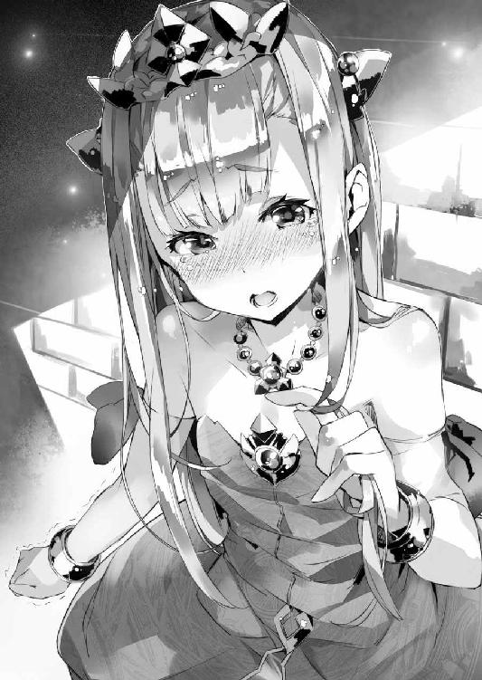
光流さんがいれば、皆、僕がいなくても良いと思うんじゃないかとか──そんな馬鹿なことはもう考えない。僕は望まれてここにいる。僕も望んでここにいる。ならば他に誰が来ようと誰がいようと関係ない。
「ペトラルカがいいって言うまでどこにも行かない。行かないで済むように努力する」
「......ならよいわ」
そう言ってペトラルカは僕から離れると、改めて人差し指を僕に突きつけて言った。
「カノウシンイチ！」
「は、はい」
「改めて汝にオタク文化の普及を命ずる。妾は汝を選んだのだ。ならば全身全霊を以てそれに応えよ！」
皇帝陛下はそう命じてきた。
可愛らしい顔を真っ赤にしながら。
ああもう本当にこの皇帝陛下は萌えるな！
なので──
「......御意」
僕は微笑すると、胸に右手を当てて、まるで主人の命令に応える執事のように──ちょっと気障に一礼した。
そんなこんなで。
神聖エルダント帝国には──というか僕ら総合エンタメ商社〈アミュテック〉とその周辺にはいつも通りの日常が戻ってきた。
エロゲはゲーム機ごといったんすべて回収し、問題になりそうなデータは一通り消してから返却した。すでに中毒みたいな状態になっていた一部の人達は大暴れしたけれど、〈アミュテック〉側からのお詫びとして特製抱き枕を提供することでなんとか落ち着いた。今頃は皆、その抱き枕でハアハアしていることだろう。
......あんまり解決になっていない気もするけど、たぶん気のせい。きっと気のせい。
トレカに関しては改めてレアカードの強さと出現バランスとを調整して、法外なプレミアがつかないように調整することになった。まあもともと、試験的な販売だったので、今後、本格的にトレカを販売する際には、問題のないバランスで売られることになるだろうから──それこそ本当に『初期販売カード』そのものにこだわるような場合はともかくとして、一方的に強いカードで荒稼ぎ、みたいなことはできなくなると思う。
とにかく、新しいものは、よくよく考えて持ち込まないとまずい。
そのことを僕達は今回のことで改めて思い知った。
なので──
「今後はもう少し慎重にいきます」
僕は居間で向かいのソファに座る人物──様子見に姿を現した的場さんにそう言った。
「うん。それが良いだろうねえ」
的場さんがどこか他人事のように答える。
なんというか、相変わらずお役人そのもの、といった態度だ。元はといえば的場さんが光流さんを連れてきたことから始まった騒動だっていうのに──『それに関しては管轄外なので私にはなんの責任もありませんよ？』と言わんばかりである。
「......的場さん」
あまりにも他人事みたいな物言いに、さすがに僕はむっとして言った。
「どうして光流さんはこの時期に、日本から送り込まれてきたんだと思います？」
もちろん、的場さんが日本政府の思惑を知っているのは確認済み──少なくともミュセルが以前、的場さんと美埜里さんがそういった話をしているのを聞いている。そのうえで意地悪く聞いてやったつもりなのだけど。
「さあね。偶然じゃないかな？」
しかし的場さんは、笑顔を浮かべてそう答えるだけだ。
「......そうですか」
あくまでも建て前はそういうことらしい。
だが逆に言えば、それなら今回のことも『加納慎一を排して〈アミュテック〉の総支配人に光流さんを据える』という思惑が外れたとしても、それを理由に光流さんを日本に呼び戻して処罰したり、最悪、口封じに殺したりはしないだろう。
今はそれでいい。
「......とりあえず、報告らしい報告は、それくらいです」
「そうか」
的場さんは頷き、僕の隣に座っている光流さんに顔を向ける。
「で──当の光流君はどうなんだい？ いろいろ大変だったようだけど、この先、やっていけそうかな？」
「もちろんです」
的場さんに尋ねられ、光流さんがはっきりと頷いた。
「今回はこんなことになってしまいましたが──」
と光流さんはテーブルの上に置かれたカードを見て言った。
「失敗は成功の母とも言いますし。次はどこからも文句の出ない成果を上げてみせます」
「こりゃ頼もしいね」
と的場さんが吞気な笑みでそう評する。
「慎一君もうかうかしてられないんじゃないか？」
「......そうかもしれませんね」
と──あまりに堂々とした開き直り方に、僕としては苦笑するしかない。
「慎一さん」
と光流さんが僕を振り返って言う。
「今回は私の失敗、私の敗北、それは認めますけれど。別に貴方そのものを認めたわけではありませんからね、念のため──」
「なに、そのツンデレ台詞!?」
「ツ、ツンデレ!? 違います！」
何故か赤面してそう怒鳴る光流さん。
そうしているとますますツンデレっぽいというか、こういう反応が出たら、ゲームだともうそのままそのキャラの攻略ルートに突入するフラグなんですけど。何このリアルツンデレ。中庭の演説じゃああは言ったけど、もちろん、三次元もなかなか棄てがた──......いやいやいやいや!? どんだけ綺麗な顔してても光流さんは男だから！ ついてるから！
萌えるな僕の心！ ときめくな僕の胸！
新しい世界は開かなくていい！
などと僕が自分に対して必死に言い聞かせていると。
「いずれ誰が総支配人にふさわしいか──思い知らせてあげます」
などとますますツンデレっぽい発言をする光流さん。
勘弁してくれもう。
「無理だと思うよ」
僕は苦笑しながら言った。
「僕と君とじゃ経験が違う」
オタクとしても。〈アミュテック〉の総支配人としても。
もちろん、今後は光流さんも経験を積んでいくのだろうけれど──僕だってカメに抜かされるウサギの愚を犯すつもりはないし。
「もちろん、そのくらいのハンデはあげますよ」
と光流さんは不敵に笑う。
「すぐに勝ってしまってはつまらないですし」
「だいたい、ラスボスとかってそーゆーこと言って、油断して倒されるよね」
「誰がラスボスですか」
と光流さん。
そして彼はその可愛らしい女の子そのものの顔で、堂々と言った。
「多少は競ってくれないとつまらないと言ってるんです。ぬるいゲームは願い下げ」
「............」
言葉に詰まる僕。
代わりに──
「そっくりなセリフを、以前聞いたよ」
にやにやと笑いながら的場さんが、そう言った。
（つづく）
あとがき
どうも、軽小説屋の です。
です。
『アウトブレイク・カンパニー 萌える侵略者』六巻をお届けいたします。
まあ、本書を手にとってくださった方々の大半は、あとがきを読まれる前にこの巻の帯で御存知かと思われますが（二〇一三年五月現在）──コミカライズに続いて、アニメ化でございます！
ミュセルが、ペトラルカが、美埜里が、エルビアが、ついでに（ついでかよ）慎一とかブルークとか的場さんとかＬＡＶとかが動きます！ 喋ります！ いやＬＡＶは喋らないけども。
正直、アニメに関わるのはこれで七本目、著作のアニメ化だけで数えても五本目でありますが、それでもやはり毎回、感無量ですね。アニメ化の発表は二番目になりましたが、放送は講談社ラノベ文庫原作のアニメとしては先陣を切るって事もあり、はてさて、どうなる事やらと不安もありまするが。
ちなみに今回は脚本とかには嚙まずに、私は小説の方に専念する事になりました。というか専念してないと、間違いなく首が絞まります。今年のスケジュールが（今年も、か）もの凄くタイトなもので......。
なので多少は早めに出来上がったアニメを見る事の出来る立場ですが、読者の皆様と同じく、出来上がりを楽しみに待つ身でありまする。
でもって小説本編。
こちらは前巻のあとがきの予告通り、慎一のライバル（？）光流の登場です。
当初は書いていて戸惑う事も多かったキャラですが、二度ばかり手を入れる（改稿する）と私自身の中でも馴染んできました。どういうキャラかはまあ中身を読んでいただくとして──ある意味で、作品的にかなり危うい立ち位置のキャラなので、読者の方々の反応や如何に。
それから今回、トレカとエロゲについて、作中でちょっと極端な取り扱いをしておりますが、他意はありません、念の為。トレカやエロゲに限らず、やり過ぎは揉め事の元である訳ですが、今回はたまたまこの二つをネタにしただけです。
さて──これまた順当にいけば次の巻は二～三ヵ月後、本筋を一旦休憩しての短編集であります。多分、表紙はようやく、彼女になるかと。
ではでは、また次の本でお会いしましょう。
２０１３年３月31日
一郎
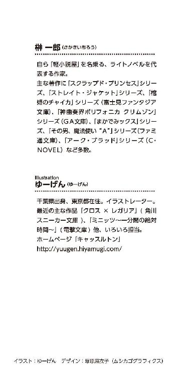
本作品は、二〇一三年五月、小社より講談社ラノベ文庫として刊行されたものを電子書籍化したものです。
アウトブレイク・カンパニー
萌える侵略者６
二〇一三年六月一日発行
一郎
©Ichiro Sakaki 2013
発行者 清水保雅
発行所 株式会社講談社
東京都文京区音羽二‐一二‐二一
〒112-8001
◎本電子書籍は、購入者個人の閲覧の目的のためにのみ、ファイルの閲覧が許諾されています。私的利用の範囲をこえる行為は著作権法上、禁じられています。
01